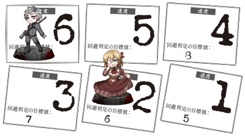
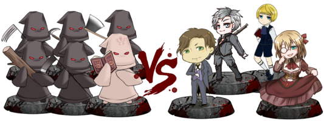
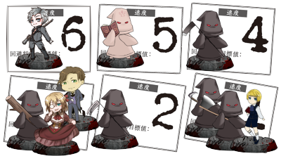

スケープゴート
PLAYER
- GM／にゃご
- PC1／ギルバート・エース（陸亜）
- PC2／ロベルト・キャンベル（沙織）
- PC3／フランチェスカ・キャンベル（ナイ）
- PC4／アルベルト＝シェルマン（朱理）
INDEX
◆今回予告
時は19世紀末。ヴィクトリア朝イギリスの片田舎の村、ブッシュヴァレー。
のどかなこの村で、一人の青年が不可解な失踪を遂げた。
青年の名はヘンリー・メイソン。病気療養のため村に滞在するとある貴族の子供の、家庭教師を務める人物である。
彼は書置きひとつ残さず、ある朝忽然と、館からその姿を消したのだった。
捜索は行われたが、なんの成果もあげられないまま打ち切られ、彼の行方はいまだに謎のままだ。
そしてまた、新しい家庭教師がブッシュヴァレーを訪れる。
出迎えたのは、木々に彫られた不気味な“顔”、夢の霧の中を蠢く怪物……そして、秘密を抱えた人々だった。
マルチジャンル・ホラーRPG インセイン
「スケープゴート」
――はたして、生贄に選ばれるのは誰なのか？
【GM】
というわけで、同人誌収録のシナリオから、「スケープゴート」になります。
終了後に本家のPDFお渡しするのでよかったら参考ください。
【GM】
ではまずは定番に、各PCの自己紹介からとなります。PC1の陸亜さんからおねがいします。
PC1／ギルバート・エース
性別：男 年齢：24 職業：家庭教師（情動分野と知識分野から好きなものを1つずつ）
生命力：6 正気度：6
好奇心：情動 恐怖心：《脅す》
特技：《笑い》、《追跡》、《愛》、《射撃》、《効率》、《教養》
アビリティ：【基本攻撃《射撃》】、【戦場移動】、【紳士淑女】、【連撃《射撃》】
アイテム：「鎮痛剤」、「お守り」
ウェッジウッド荘の家庭教師となった年若い教師。
それなりに裕福な出のため、それなりの教養はある。が、本人は割と楽観的で自由闊達な性格のため、
親類はいち紳士の振る舞いを学ばせる意味も込め、
教師の道を進ませたらしい。当人は面倒見がよく子どもも好きなため、深いことを考えずそれに従った。
また、紳士のたしなみというよりは完全に趣味として狩りを好んでいる。
【ギルバート・エース】
24歳男児。紳士淑女・連撃持ち。（情動）射撃／笑う／愛／追跡／効率／教養＿脅す。
【ギルバート・エース】
一応立ち振る舞いはそれなりにちゃんとできるけどヤンチャ心が隠しきれなくて割とダダ漏れ系男子。
【GM】
うむ、面倒見がいい家庭教師の先生ですね。よろしくおねがいします。
【GM】
PC2、3の父親であるアラン氏の依頼により、PC2の家庭教師として今回は村に来ていただくことになります。
【GM】
依頼時には「前任の家庭教師、ヘンリー・メイソンが謎の失踪を遂げたのだ」
「便りのひとつも寄越さないまま、どこへ姿をくらましたのやら……。今となっては息災であることを祈るばかりだよ」とかなんとかくらいの説明を受けてますよ。
【ギルバート・エース】
あ、そうなんだそこ聞いてるんだ。了解です。
【GM】
はい、それくらいですね。よろしくおねがいします。
【GM】
では続けてPC2、沙織さんお願いします。
PC2／ロベルト・キャンベル
性別：男 年齢：11 職業：子供（情動分野と知覚分野から好きなものを1つずつ）
生命力：6 正気度：5
好奇心：怪異 恐怖心：《カメラ》
特技：《我慢》、《痛み》、《第六感》、《物理学》、《教養》、《夢》
アビリティ：【基本攻撃《痛み》】、【戦場移動】、【嘆願《可変》】、【資産】
アイテム：「鎮痛剤」×２、「お守り」×２
愛称はロビン。警戒心が強く人見知り。
幼い頃から心臓が弱く病気がちだったため、【痛み】に慣れている。
激しい運動をすると発作が起こるので、他の子らと外で遊びたい気持ちを【我慢】し一人本を読んで育った。
教育熱心な親に貴族社会の【教養】を教え込まれ、利益目的で近づいてくる人を見分ける【第六感】も身についた。
【物理学】の勉強に熱中している。健康になれる日を【夢】見ながら療養中。
【カメラ】が苦手な理由は、「写真を撮ると魂が抜かれる」迷信を信じているから。
【ロベルト・キャンベル】
PC2（沙織）：ロベルト・キャンベル
11歳。貴族のお坊ちゃんですね。近しい人からはロビンって呼ばれています。
幼い頃から心臓が弱く病気がちで、激しい運動を禁止されていたので、そのぶん勉強を頑張ってました。
性格は警戒心が強くて人見知り。
周りの人との距離を測りかねている、複雑なお年頃です。(思春期と思っていただければ)
特技は〈我慢〉〈痛み〉〈第六感〉〈物理学〉〈教養〉〈夢〉。アビリティは【嘆願】と【資産】です。
「写真を撮ると魂が抜かれる」という迷信を信じているので、恐怖心は〈カメラ〉ですね。
【GM】
身体の弱い貴族のおぼっちゃんですね。頭はわりとよさそうだけど可愛いところもありそうな…ショタ枠楽しみにしてます。
【ロベルト・キャンベル】
人見知りだけど新しい先生が来るらしい……頑張ります！ よろしくお願いします。
【GM】
父親はロンドンにいますが静養しにブッシュバレーに…でしたね。
こちらに来て何年かによってお姉ちゃんと何年ぶりかもあるのかな、どうかな。よろしくおねがいします。
【GM】
では続けてPC3、ナイさんお願いします。
PC3／Francesca・Campbell（フランチェスカ・キャンベル）
性別：女 年齢：28 職業：好事家（《芸術》、《人類学》）
生命力：6 正気度：6
好奇心：情動 恐怖心：《戦争》
特技：《脅す》、《恋》、《芸術》、《効率》、《人類学》、《驚き》
アビリティ：【基本攻撃《脅す》】、【戦場移動】、【誘惑《恋》】、【地位】
アイテム：「鎮痛剤」×１、「お守り」×１
キャンベル家長女。
父の仕事を支えつつ世界の珍しい物を集める好事家。
身体の弱い弟の身を案じてるため少々ブラコン。
弟の治療費や己の趣味に莫大な金がかかるため財産にかかわることには少々厳しく、
また、そのために人々の弱みに付け込むなど、見た目の淑女さに反したことが多い。
貴重な遺跡などが犠牲になる戦争は嫌い。
【フランチェスカ・キャンベル】
ＰＣ３（ナイ）フランチェスカ・キャンベル
キャンベル家長女。28歳。
【フランチェスカ・キャンベル】
特技は「脅す」「恋」「芸術」「効率」「人類学」「驚き」 恐怖心は「戦争」
アビリティは【誘惑】 【地位】
【GM】
見た目は淑女だけど中身はゲスでブラコンなお姉ちゃんだった（ ギャップ萌えなの？ そういうものなの？？？
【フランチェスカ・キャンベル】
ただの淑女してるだけで済むほどお金に困ってなければいいのだけど、いかんせん趣味が珍しい物好きだし。
【GM】
どんな活躍をしてくれるか期待しておきましょう。全体的に貴族の娘さんって感じの取り方ですね。よろしくおねがいします。
【フランチェスカ・キャンベル】
よろしくおねがいします。
【GM】
村に来るのはたぶん初めてなんじゃないかな。お父さんの手伝いなら普段はロンドン住まいですかね。
|
+ |
一方雑談窓では |
【アルベルト＝シェルマン】
今気づいたけど、フランチェスカお嬢と年齢いっしょだったーー！
わぁー！じゃあ執事なったころ、同じ１８歳か・・・
【GM】
お嬢様にも無邪気な頃があったかｍ…とか言うにはわりといい年だな
【アルベルト＝シェルマン】
お嬢はきっと今も昔も変わらずちょっとやんちゃしてそう。
【GM】
この時代にしては歳の離れた姉弟だよね
【ギルバート・エース】
ご両親お元気ですね（黙れ）
【ロベルト・キャンベル】
お嬢と執事の子ども時代、気になるなあ
（異母姉弟とかかもしれない）
【GM】
かもしれない。
【アルベルト＝シェルマン】
ぺーぺーの若い執事には見向きもせず、学校のイケメンにちやほやされてたはず…・！（勝手な想像）
【ロベルト・キャンベル】
（そういえばフランさんと金髪おそろいになってて嬉しい…！）
【フランチェスカ・キャンベル】
（キャラシみて少し金に近づけました!!）
【フランチェスカ・キャンベル】
貴族の女こんな歳まで遊びほうけてて大丈夫なんですかね…（いきおくれ）
【GM】
一応女子も教育受けることあった時代みたいですからね。 …あー、それこそ家庭教師してていい歳だな苦笑
【アルベルト＝シェルマン】
許嫁とかいるかもですよ！
【ギルバート・エース】
確かに女史はガヴァネス似合いそう。
【アルベルト＝シェルマン】
許嫁と結婚の約束あるけど、正直縛られたくないわ、的なのかもしれない・・・
【GM】
うん、カヴァネスにしては派手だけど
【フランチェスカ・キャンベル】
この人許嫁いても自分のお気に入りじゃないからヤダってそうだわ
【アルベルト＝シェルマン】
２分前の私（カヴァネスってなんだ・・・） 検索した私（家庭教師の事か！！！）
【GM】
（あ、濁音付くのか（記憶違い
【アルベルト＝シェルマン】
お嬢がここに来るの久々なら、執事に会うのも久々か。ほかの使用人さんに会うのも。
【GM】
ってことになるのかな 何年前だろうか
【フランチェスカ・キャンベル】
数分前の私（ガヴァネス…どっかのイケメンとの見合い話させられてるのかな？）
【GM】
カルヴァドスあたりと混ざるんですよ（りんごの蒸留酒（だいぶちがう
【ギルバート・エース】
全然ちげーよ笑（おいしいよ
|
【GM】
では、続けてPC4、朱理さんお願いします。
PC4／アルベルト＝シェルマン
性別：男 年齢：28 職業：使用人（《我慢》、《効率》）
生命力：6 正気度：6
好奇心：情動 恐怖心：《焼却》
特技：《我慢》、《効率》、《緊縛》、《におい》、《教養》、《愛》
アビリティ：【基本攻撃《緊縛》】、【戦場移動】、【かばう《愛》】、【装甲】
アイテム：「鎮痛剤」×１、「お守り」×１
主人に忠実な使用人。
中流階級の家の子だったが、幼いころに自宅が火事になり身寄りがなくなったため、
使用人として雇ってもらっている。勤続１０年。
【アルベルト＝シェルマン】
PC4（朱理）：アルベルト＝シェルマン 執事です！
昔、家が火事になり天涯孤独になりました。孤児院か教会とかでで過ごして
１８歳でキャンベルさん家の執事やってます。もう勤続１０年!ベテランです！
特技は緊縛、我慢、愛、におい、効率、教養で「かばう」「装甲」持ってます！
服の下にワイヤーかなんか隠し持ってるから緊縛とか装甲とかついてるんだと思います。
鼻がいいので良い茶葉見つけるのは得意だけど恐怖心に焼却あるので火は苦手です！
性格はまだわからないけどお兄ちゃんタイプかな？とおもいます。
【GM】
まあわりと使用人はいるので火を使う仕事は他の子に任せても大丈夫なんじゃないですかね。ベテラン執事さん頼もしそうだ。よろしくおねがいします。
【アルベルト＝シェルマン】
目指せ会い愛あるおもてなしです、頑張ります！
【GM】
では、こんな４名で始めていきたいと思います。あらためて皆様よろしくおねがいします。
【ギルバート・エース】
よしなにどうぞ。
【ロベルト・キャンベル】
はーい！よろしくお願いします。
【アルベルト＝シェルマン】
よろしくですー！
【フランチェスカ・キャンベル】
よろしくおねがいします！
◆導入フェイズ 〜シーン１ ギルバート＆フランチェスカ〜
▲
【GM】
では、導入フェイズに入りたいと思います。最初のシーンはPC1とPC3のシーンとなります。
【GM】
二人が馬車で揺られているシーンです。
ブッシュヴァレーの村に入るところから、ウェッジウッド荘までの道程を描写し、今回のシナリオの舞台を紹介します。
最寄りの駅から馬車に乗りこみ、ブッシュヴァレーにたどり着きます。
かなり時間がかかり、揺れもあってお尻が痛くなってきます。
窓の外には農耕地や牧草地が連なり、空気の匂いも都会とは違います。
家々はまばらに見えるくらいで、人口も多くはありません。
馬車はさらに山間へと進みます。年経た樫の樹が力強くそそり立ち、その曲がりくねった枝が道に影を落とします。
この森を抜ければブッシュヴァレーの村です。
【GM】
★会話RPどうぞ
まあ初対面だと思うので、PC同士の自己紹介とかしたらいいんじゃないでしょうか。
【ギルバート・エース】
どう考えたらここまで黙ってたのに突然喋り出すんだよ！！！笑
えーと。まあ馬車の中では外の景色見て 「いい場所だなあ（狩れるものいろいろいそう）」 とかつぶやいてます。
【フランチェスカ・キャンベル】
そんな独り言を聞きつつ、まるで値踏みしているようにじっと上から下まで目線をむけ、たまに相槌を入れてみます
【ギルバート・エース】
ここまでに名前と村に行く理由くらいは自己紹介したってことにしよう。そうでないと会話にならん（）
【フランチェスカ・キャンベル】
うまくキャッチボール出来なくてごめん
【ギルバート・エース】
「ええと…女史は、村に行くのは初めてなんでしたっけ」
いいよこっちもどう投げたもんだかだよ笑 あと呼び方おかしかったらスマン
【フランチェスカ・キャンベル】
「いえ、一度だけ両親と下見をしに来たことはあります。
とてもいい場所だったので今回ロビンの療養先にしようって決めましたの」
金持ちの道楽程度で女史でいいのかわからないけど本人悪い気しないからいいと思う（）
【ギルバート・エース】
「成程。確かに自然が多くて、イヤでも元気になれそうな場所っすね」 あ、駄目だこいつ教養あるとか嘘だ。
【フランチェスカ・キャンベル】
「ロビンには早く元気になってもらいたいから…。ギルバート先生、どうかロビンをよろしくお願いします」
といって、車内で頭を下げる
【ギルバート・エース】
「へ、あ、ああ…はい。えーと、拙い先生ですが。こちらこそ、よろしくお願いします」
一瞬自分のことだと思わなかったんだこれ。慌てて頭ペコペコします。
【ギルバート・エース】
「僕に出来ることが何か、あれば良いんですが。自分でも、先生って柄じゃないとは思ったんですけどね。その…」
【ギルバート・エース】
「お話を伺ったら、じっとしてはいられなくて」 こういう性分ですんで自分から志願したのかもしれないなと。
【フランチェスカ・キャンベル】
「そう言っていただける嬉しいです。
以前お願いしていた先生は無責任にもいきなり仕事を辞めてしまわれまして、私たちもとても困ってましたので」
【ギルバート・エース】
「…それはまた、無責任なヤツですね。にしても、体調なり家庭の事情なり、何の理由もなしにですか？」
訝しそうに首をひねりつつ
【フランチェスカ・キャンベル】
「屋敷にいる執事の手紙には突然いなくなったとだけありました。
詳細を聞いても本当に突然のことだったようでして…」
【ギルバート・エース】
「はあ…機会があれば直接聞いてみることにしましょうかね。一応、僕は後任なわけですし」
【ギルバート・エース】
「ともあれ、そうなると女史もロベルト君のことが心配だったでしょうね」 とりあえず今はロベルト君かなと
【フランチェスカ・キャンベル】
「そうなんですの。いくら執事がいるとはいえいきなり人が消えてしまったから
ロビンが変な心配して体調崩してないか心配で心配で…」
【ギルバート・エース】
「でしょうねえ。早く元気な顔見て、安心したいっすね。僕も、会えるのが楽しみです」
ってにかーっと笑っとこう。笑う門には。
【フランチェスカ・キャンベル】
「………」※笑顔差分
ギルバートの笑みを見て、不安が和らいだようで、フランも思わず微笑み返しました
【ギルバート・エース】
「……」 予想しなかった表情なのできょとんとしてから、うんまあいい顔なのでこっちもニコニコしとこう。
【GM】
ではまあ、男女の会話を微笑ましく眺めつつ、ぼちぼちな
GM：choice[ギルバード,フランチェスカ]
Insane : (CHOICE[ギルバード,フランチェスカ]) → フランチェスカ
【GM】
では、ちょっと話も一息して窓の外を眺めたお嬢様は、馬車の窓から外に視線を移します。
すると、森の木々に不思議なものを発見します。
【GM】
樹の表面に、人の顔らしき不気味な彫刻が施されているのです。
それも一つや二つではなく、注意深く見なくても、自然と目に入るほどの数があります。
そして、その彫り込みがされているのは、いずれも古い木々ばかりのようです。
【GM】
《芸術》持ってますしねお嬢様、まあ何かしらRPどうぞ
【フランチェスカ・キャンベル】
では、窓の外の奇妙な樹に気づき、一瞬表情を強張らせましたが
古い村なので儀式めいた彫刻だと思うことにします
【フランチェスカ・キャンベル】
でも、弟がみたら気分的によくはないだろうなってことであまりいい気持ではないですね
【GM】
それまで黙々と馬車を動かしていた御者は、背後の反応に気がついたのか、
「俺らはウィアウッドって呼んでまさぁ。なんでも昔々の狂信者どもが掘り込んだものだそうでね。」と説明してくれますよ。
【GM】
まあ、そこまでリアルではなく目鼻立ちをつけたくらいの簡単な作りのものですよ。だから数も多いんですね。
【フランチェスカ・キャンベル】
「狂信者？この土地ではなにか特別なものが祀られているのですか？」
とりあえず意味のあるものらしいので食いついてみます
【GM】
「ガキの頃はよく言われたもんですよ。悪いことすると“森の仔ら”が来るぞってね。…ま、おとぎ話みたいな話ですよ。」と語ります。
【ギルバート・エース】
「へ？ 何の話っすか？」 じゃあこいつはこれだな
【GM】
「木だよ、木。ほら、そこら辺にたくさん生えてるだろう？ 兄ちゃん」 とじゃあ御者が説明しておくよ
【ギルバート・エース】
「木ならそりゃいっぱ…いっ？！」 じゃあまじまじ見てぎょっとしよう。
「うわー…いやー…趣味悪いっすねえ」 と歯が脱衣してるコメントも。
【フランチェスカ・キャンベル】
ごめんね、自分の興味優先になりがちで状況説明できない御嬢さんで
【GM】
これを見たPCはプラス２の修正をつけて《情景》で恐怖判定を行います。
※ちょっとしたものなのでプラスの補正が付きます。
【ギルバート・エース】
「あんなの見たら野兎とか逃げ出しそうっすねえ」 って言いつつ恐怖判定かよ案の定かよふざけんな了解です。
【ギルバート・エース】
《追跡》からで目標値6、プラス2補正で。
【ギルバート・エース】
2d6+2>=6 恐怖判定（情景）：
Insane : (2D6+2>=6) → 11[5,6]+2 → 13 → 成功
【フランチェスカ・キャンベル】
《驚き》からで6かな
【フランチェスカ・キャンベル】
2d6+2>=6 恐怖判定（情景）：
Insane : (2D6+2>=6) → 6[3,3]+2 → 8 → 成功
【GM】
成功ですね。魔素は出ませんが
ではふたりともちょっと驚いたけど特に恐怖の類は覚えませんでした。よかったね。
【ギルバート・エース】
余裕じゃよ。 「確かにこれだけあれば、それなりの規模で何か集会でもしてたのかなって感じっすね」
って女史の質問に乗っかりたい。
【GM】
「何でも１００年も前に、この辺で「森の仔ら」っつーカルト教団が蔓延ってたらしいですねえ。
…ま、古い木ばかりに彫られてるとおり、今やお伽話の類なんですよ」 というわけで回答済みのつもりだったんやで
【フランチェスカ・キャンベル】
ってことはこれ以上詳細聞いても詳しいこと出てこないのかな？
【ギルバート・エース】
「あ、それがそのまんまその名前だったのか。…しかしカルト教団なんて、穏やかじゃないっすねえ」
まあでもただのおとぎ話かカルト教団かの違いはでかいぞ
【ギルバート・エース】
「まあ、木に落書きするくらいの可愛い悪戯なら害はない…のか？ とはいえ森を汚すのは許しがたいな」
ふむん、としつつとりあえず質問はそこまででいいですよ
【GM】
はい、では改めて。
馬車はブッシュヴァレーの村を横切り、ウェッジウッド荘に続く坂道を登っていきます。
館はちょっとした小高い丘の上に立っています。
左手には大きな湖が見えます。この湖は、ブッシュヴァレーの農耕地の水源として重用されています。
黒い水面は陽光を反射し、なにかの神秘を隠しているかのようにきらめいています。
丘の上の木立を抜けたら、ウェッジウッド荘が見えてきます。
【ギルバート・エース】
「お。あれですかね？」 わくわく顔で窓から顔とか出したい
黒花岡岩づくりの古風な館――ウェッジウッド荘は村の中心から少し離れた林の中に建つ屋敷です。
木々に囲まれ、夏場だというのにどこかひんやりとした空気が漂っています。
厳かに建つ古風な館の姿は、巨大な動物が我が物顔で鎮座しているかのような印象を見る者に与えます。
子供一人のために用意したにしては、やや大げさとも思えるかもしれません。
ウェッジウッド荘は、当地に古くからある館を改修した建物なのです。
【ギルバート・エース】
「はあ。随分デッカイ建物っすねえ」 ほわーと。
本人もそれなりの身分なので圧倒はされないけど、確かに子供一人のためにと思うとデカいのかな。
【GM】
館の前にはメイド服をまとった一人の少女と、スーツ姿の初老の男性が立っています。
まもなく、馬車は目的地であるウェッジウッド荘へと到着します。
【フランチェスカ・キャンベル】
「ロビン元気にしてるかしら…」 だんまりだとアレだからとりあえず弟の心配を…
【ギルバート・エース】
「きっと元気にしてますって。
女史の方こそ、元気そうな顔を見せてやらないと、ロベルト君に逆に心配されちゃいますよ」 とか笑って言っておこう。
【GM】
馬車が止まると、「はい、着いたよ。お代は先にここの館の旦那様から頂いているからね」 と声をかけてくれます
【ギルバート・エース】
「はーい、ありがとうございましたっ」 元気に言いつつ馬車からひょいこら降りよう24歳まだまだ若い。
【フランチェスカ・キャンベル】
「そうですね、ありがとうギルバート」 そういってまた微笑んでみますかね
んで、その後にしずしずと降りますかね
【メイド】
「長旅お疲れ様でした、お嬢様…それに家庭教師の先生のエース様でございますね。いらっしゃいませ」
と、メイドがにっこり挨拶をします。
【ギルバート・エース】
「あ、ハイ。お世話になります、ギルバート・エースです」
なにこれ可愛い。ちょっと畏まってぺこぺこします。
【GM】
「お荷物をお持ちいたします、お嬢様」 と執事さんはお嬢様に手を差し伸べますよ。
【フランチェスカ・キャンベル】
「ありがとう、助かるわ。それよりロビンの様子はどうかしら？」
荷物を預けつつ、ロビンの姿が近くにないかきょろきょろしてますね
【シャーロット】
「ご丁寧にありがとうございます。メイドのシャーロット、ともうします。お見知り置きを」
ってぺこりとではお辞儀しておきます。
【GM】
「最近は以前よりもだいぶ元気になられました。きっとお会いにあったら見違えたと驚きになられますよ」
執事が荷物を受け取りながら答えます。
【ギルバート・エース】
ほうほう、と思いながらこれから会う教え子どんな子かなーってわくわくしてよう。
【GM】
「ロビン様は中でお待ちです。さあ、どうぞ」
執事は、荷物を受け取ったらもう片手で馬車から降りるの手伝うんでしょう。
【フランチェスカ・キャンベル】
とりあえず元気そうだと聞いて安心してる。
【GM】
というわけで、中に入って他２名と合流になります。ので一旦シーンが変わりますよ。
【GM】
館の中に入るとそこは玄関ホールです。ホールには、PC2、PC4の他、数名の使用人が客人を待っていますよ。
【ギルバート・エース】
じゃあとりあえず姉弟の再会シーンになりそうだからそれを見守りたいかな笑 ほあー、と見渡してる最初は。
【GM】
わりと年季の入った貴族のお屋敷って感じの内装ですよ。 一般市民はそこまで立ち入る機会もないでしょうね。
【フランチェスカ・キャンベル】
「ロビン!!」
【ロベルト・キャンベル】
はい。ホールの壁に寄りかかって、そわそわっと落ち着かない様子で待っていましたが、
姉さんの声を聞くなりパッと顔を上げて、
【フランチェスカ・キャンベル】
ロビン君見つけるや否や駆け寄って抱きしめますよ
【ロベルト・キャンベル】
「……！姉さん！…久しぶり」ってちょっと照れくさそうに言うのかな。
【ギルバート・エース】
女史が駆け寄ってハグするの見たら、あれだけ会いたがってたしなーと思ってよかったよかったとはにかんでます。
ロベルト君見えなくね？（
【GM】
そうだね、サイズと方向的に見えそうにないですね笑
【シャーロット】
「ロビン様…嬉しそうですね」 と姉弟の再会を見ながら主人の喜びようにメイドも嬉しそうです
【フランチェスカ・キャンベル】
暫く撫でくりかえしてようやく我に返ったので「紹介します」ってロビン君を開放しよう。
【ギルバート・エース】
「なら良かった。ぶっちゃけ僕見えないっすね」 って言ってたら開放されて見えるようになるのか
【ロベルト・キャンベル】
むぐむぐしてたけど開放されました笑
ん？って怪訝な顔で後ろにいるギルバートさんを見ます。
【フランチェスカ・キャンベル】
ロビン君には新しい家庭教師の話されてないのかな？
【GM】
一応来るよって話は伝わってると思いますが（わりと皆でお迎えムード（だが姉と同時とは言ってなかったかもしれない
【ロベルト・キャンベル】
されてるかもしれない。
でも初対面の人がいる…！ってわかるなり、多分サッと執事（アルベルトさん）の後ろに隠れます。
【ギルバート・エース】
じゃあ怪訝な目っていうか人見知りか。されてるならあれー？話いってないのかなー？と半ば思いつつ
「あ、僕怪しい者じゃないんですけどね」 って常套句を。
【シャーロット】
「新しい家庭教師の方ですよ、ロビン様。ロイドの方から話を聞いておりましたよね？」 とかなんとか
ん？って怪訝な顔で後ろにいるギルバートさんを見ます。
【フランチェスカ・キャンベル】
「ロビン、こちらが新しくいらした家庭教師のギルバート・エース先生。」ってとりあえず先に隠れてるロビン君に説明しておこう。
【ギルバート・エース】
先生とか教養とかそういうの割と一昨日くらいに置いてきそうだな。
子どもの前だしなーって、一応ゆったり歩み寄ってそこそこの位置でしゃがみこんでみよう。
【ロベルト・キャンベル】
「えっ、えっ、家庭教師……。ああ…」そっか、と思い出した様子で。
ちょっとビクッとしつつ、執事さんの後ろから顔出してますね。
【ギルバート・エース】
「今、シャーロットさんや女史が言った通りの者だよ。
君の家庭教師をするためにやってきた、ギルバート・エースです」 ってしゃがんでる体勢のままちょっと困ったふうに笑う。
【アルベルト＝シェルマン】
あ、なんかかわいいのきた！一歩横にずれて、ロビン君前に出します。
【ロベルト・キャンベル】
「な、なんで避けるんだよアル…！！」とあせあせしつつ。
何か前に出てしまったので、おずおずと自己紹介します。
【ロベルト・キャンベル】
「ギルバート、先生…。ロベルト・キャンベルです。あ、あの……よろしく」
【ギルバート・エース】
「こちらこそ。呼びにくければ、ギルでもギリーでも構わないよ」
ニコニコして届きそうなら手を出してみるかな。
【シャーロット】
よく言えましたねーって表情に前面に出して、聞こえない程度にぱちぱち拍手している。
ぼっちゃんかわいい。
【アルベルト＝シェルマン】
執事も横でにこにこしてる。
【ロベルト・キャンベル】
「じゃあ、ギル先生……」と、周りの温かい雰囲気にいたたまれなくなりながら、消え入りそうな声で返します。
【ギルバート・エース】
「…えーと、うん。そうだな。うん」 ってなんか歯切れ悪くなって頭の後ろとか掻いてますね。
先生とか多分言われ慣れてない。
【アルベルト＝シェルマン】
（紳士たるもの、あいさつは堂々とできなければ・・・！坊ちゃんよくできました・・・！）って心で感動してる。
【GM】
「お嬢様、お部屋までご案内いたします」 ってじゃあロイドあたりに声をかけさせよう。
【アルベルト＝シェルマン】
「お久しぶりですフランチェスカお嬢様、長旅お疲れ様でした。」ってお嬢にも笑顔で挨拶しておくよ！
【アルベルト＝シェルマン】
「エースさまもようこそいらっしゃいました。わたくしは執事のアルベルトです。滞在中はどうぞ何でもお申し付けください。」的な挨拶もしたことにしといて・・・！
【ギルバート・エース】
「あ、どうも。こちらこそ宜しくお願いします」 って執事さんにはニコニコ応えるね！ 皆いい人で安心だよ部外者。
【シャーロット】
「あ、では私もエース様をご案内しますね」 ってつい見守って仕事してなかった組はわたわたしますよ。
【フランチェスカ・キャンベル】
「アルもお変わりなさそうね、先生のためにお部屋の案内お願いね」
【ギルバート・エース】
「ありがとうございます。荷物やら何やら、落ち着けて来るよ」 ってロベルト君に笑いかけてからシャーロットちゃんについてくのかな？
【アルベルト＝シェルマン】
「お嬢様もお元気そうで何よりです」笑顔笑顔！それぞれ案内されていくのかな！
【シャーロット】
「はい、こちらになります」 って案内しますよ。 というわけで一旦解散してそれぞれのお部屋に戻る感じです。
【ロベルト・キャンベル】
「う、うん。先生も姉さんも……ゆっくり休んで」と、気遣いつつ。
ロビンも緊張でガチガチしてたのでそそくさとお部屋に戻ります。
|
+ |
一方雑談窓では |
【アルベルト＝シェルマン】
所でアルは「ぼっちゃんは今日とても頑張ってのでご褒美にケーキを・・・！」ってそわそわしてるけど、
ロイドさんあたりに落ち着けってたしなめられてる。裏で。
【シャーロット】
きっと後でシャーロットも一緒に叱られて「ごめんなさいお父さん…」ってしゅんとしてる
【ギルバート・エース】
これで導入終了っておい何からしたらいいんだメインフェイズ笑
とりあえずロベルト君と感情結ばねえとなって思ってる（迫真）
【アルベルト＝シェルマン】
いっしょに、しゅん・・・ってしてよう
【GM】
ぼっちゃん大好きコンビ（つい浮かれた）でしゅんとしよう。
【アルベルト＝シェルマン】
ロイドさんは執事長てきなかんじなんだろうな、うん！
【GM】
キリッとしたぼっちゃんも執事の笑顔も良い…
【ロベルト・キャンベル】
しゅんとしてる使用人組かわいい……
【フランチェスカ・キャンベル】
やだ、この執事たちかわいい
【アルベルト＝シェルマン】
お・も・て・な・し
【アルベルト＝シェルマン】
がんばろう！
【ギルバート・エース】
シャーロットちゃんかわいいから感情結びに行きたいですね（真面目にやれ）
【アルベルト＝シェルマン】
シャーロットちゃんかわいいよね。いくつだ・・・
【ロベルト・キャンベル】
私もシャーロットちゃんと感情結びたい…
【シャーロット】
え、乙女に年齢を聞くんですか。１５です
【ギルバート・エース】
9歳差か…
【アルベルト＝シェルマン】
やっべ・・・ロリコンになっちゃう・・・妹的でかわいい。よし！
【フランチェスカ・キャンベル】
シャーロットちゃん人気にお姉さん嫉妬しちゃうわよオオオオオオオ？
【ギルバート・エース】
15とか最高に美味しいところじゃないですか…
|
【GM】
みたいな感じで一旦導入シーン締めとなります。
導入フェイズ終了となりますので、各自ハンドアウト（表面）を宣言お願いします。
【ギルバート・エース】
○PC1
あなたはPC2の家庭教師に任命されて、ウェッジウッド荘を訪れた。
あなたの【使命】は「生徒であるPC2とよい関係を築くこと」である。
【ロベルト・キャンベル】
○PC2
あなたは身体が弱い子供で、療養のためにウェッジウッド荘に滞在している。
あなたの【使命】は「健康を取り戻すこと」である。
【フランチェスカ・キャンベル】
○PC3
あなたはPC2の兄もしくは姉である。村で療養中のPC2を訪ねてきたのだ。
PC2に会うのは久しぶりだ。具合はよくなっているだろうか？
あなたの【使命】は「ウェッジウッド荘がPC2にとってふさわしい場所かどうか見極めること」である。
【アルベルト＝シェルマン】
○PC4
あなたはウェッジウッド荘に勤める使用人だ。
あなたの【使命】は「館の滞在者たちをもてなすこと」である。
【GM】
ありがとうございます。
では、ここで『シャーロット・ハモンド』『ヘンリー・メイソン』『森の仔ら』のハンドアウトを公開します。
○シャーロット・ハモンド
画像表示
あなたはウェッジウッド荘に勤める使用人だ。
あなたの【使命】は「ウェッジウッド荘の滞在者たちをもてなすこと」である。
○ヘンリー・メイソン
画像表示
25歳。理知的で生真面目な青年である。
あなたはPC2の前家庭教師だ。あなたはウェッジウッド荘から姿を消した。
失踪時の状況は、荷物も残したままで書置きのひとつもなく、ある朝突然いなくなっているという不可解なものであった。
|
+ |
一方雑談窓では |
【アルベルト＝シェルマン】
ヘンリーの画像もください！
【アルベルト＝シェルマン】
イケメンですか!?イケメンですか!?
【ロベルト・キャンベル】
ください！
【ロベルト・キャンベル】
イケメンください！
【ギルバート・エース】
25歳でイケメンじゃなかったら私どうしたらいいのか。
【フランチェスカ・キャンベル】
やだイケメン！
【ギルバート・エース】
片眼鏡？！？！？！？！！
【アルベルト＝シェルマン】
うん。アラン氏。顔で家庭教師選んでるんじゃないだろうな。
【ロベルト・キャンベル】
あっかっこいい！！！？？
【フランチェスカ・キャンベル】
あら、モノアイ仲間ですね
【ギルバート・エース】
かわいいー。やっぱりかわいいー。
【GM】
こんなんでしたよ。
【ロベルト・キャンベル】
顔で選んでるなこれは……
【アルベルト＝シェルマン】
おっぱい大きそう・・・かわいい。
【ギルバート・エース】
はー。調査はどうすっかなあ…正直シャーロットちゃんはあんま気にならねえな今な。あとの二人かあ…
【アルベルト＝シェルマン】
シャーロットちゃんの秘密は「実は坊ちゃんが好きで…」とかなら、もう本当にかわいい。
【ギルバート・エース】
そこは執事でもいいと思うんだよね？？？ うん？？？
【アルベルト＝シェルマン】
２８歳と１５歳とか犯罪・・・
|
○森の仔ら
森の仔らは、ブッシュヴァレー周辺でかつて一大勢力を築いたカルト教団だ。
今なお森に残る人面の彫られた樹木（ウィアウッド）などは彼らの手によるものである。
生贄に黒ミサなど、ありとあらゆる背徳的な宗教儀式を行っていたらしい。
……とはいえ、いまやおとぎ話の類である。彼らがいたのは百年も昔のことだ。
◆第１サイクル１シーン目 PC1：ギルバート・エース
▲
【GM】
というわけでメインフェイズに入りますが、第１シーン希望者いますか？
【ギルバート・エース】
んーと、良ければギルバートくださいな。ロベルト君と感情結びたいんだ。
【GM】
うむ、他に希望者いないようならでは家庭教師から参りましょうかね。
【ロベルト・キャンベル】
はーい。お先にどうぞ！一緒に出ますよー。
【ギルバート・エース】
わーいやったー。当然ドラマシーンで。
シーン表になるのかなこれ、もしくはホールに再訪でもいいっちゃいいんだが気になるからシーン表あるなら振りたい（これ）
【GM】
ロベルトへ感情結ぶならドラマシーンですかね。シーン表は「ST2」でどうぞ。
【ギルバート・エース】
ST2 何が出るかな：
Insane :スケープゴートシーン表(8[6,2]) → ここなら誰にも邪魔されない。考え事にはうってつけの場所だ。
【ギルバート・エース】
どこだよ（真顔）
【GM】
どこだろう。まあ自室用意されたなら呼ばなきゃメイドとか来ないよ。
【GM】
別にもっとこそこそしたいならトイレの個室とかでもええで。
【ギルバート・エース】
うーん。確かにロベルト君の部屋だと他にも人が来るかもしれんのか。
それならむしろギルバートの部屋に呼んでみるとか？
【ギルバート・エース】
どう考えても自分から行きそうだけど…そうだなあ。
じゃあ見せたいものがあるから、とか言って部屋に呼ぼうかな。
【GM】
うむ、いいんじゃないですかね。 では二人でRPどうぞ。
【ギルバート・エース】
ロベルト君来たら 「いらっしゃい」 ってお迎えするのかな。
綺麗にされてそうだから大丈夫だよね〜ってことで椅子でも薦めよう。きっと自分はベッド。
【ロベルト・キャンベル】
ふむふむ。
そうしたら（えっ一人…？アル着いてきてくれないの？）とか思いつつ、先生のお部屋にお招きされますよ。
【ギルバート・エース】
上着脱いでネクタイちょっとゆるめてゆったりモード。
確かにこれは女史とかに見られたら腹パンされそう。
【ロベルト・キャンベル】
「お邪魔しま…あ、失礼します…」とか言いつつ、遠慮がちに椅子に腰かけます。
【ギルバート・エース】
「あんまり緊張しなくていい、とか言ったってそりゃするよなあ。僕だってしてるし」
とか言ってちょっと困ったような笑い。
【ロベルト・キャンベル】
「先生も緊張してるの…？そっか、先生にとっても、初めて会う人ばかりだもんね…」
先生の言葉にちょっとホッとした様子で。
【ギルバート・エース】
「あんまり緊張してるように見えないって、良く言われるけどね」 言われてそうですね。
ホッとした様子ならこちらもホッとしますよ。
【ギルバート・エース】
「一応先生ってことで、まあ君のことは少しだけ聞いてるよ。
けど、君自身から教えてもらわなくちゃいけないなと思ってね。ただ…」 と言いつつ肩を竦めて、
【ギルバート・エース】
「その前に、僕のことを知ってもらった方がいいかなって。
相手を知りたかったら、まずは自分から知ってもらうものだからね」 って具合です。
【ロベルト・キャンベル】
「うん。ギル先生は僕みたいに、人見知りとかしなさそうに見えた。
でもそうか、相手のことを知るのは大事だね… これから暫く、一緒に暮らすから」
【ロベルト・キャンベル】
「前の先生は急にいなくなっちゃったから… その、僕なにか悪いことしたのかもしれないけど…」
【ギルバート・エース】
「そうそう」 って頷いた後、きょとんとして
「ああ、そういえば。女史…ええと、お姉さんにも少し、聞いたけど。思い当たることとか、何も無かったのかな」
【ロベルト・キャンベル】
「思いあたること… うん…」 暫し考えた後、首を振って、
【ロベルト・キャンベル】
「ううん。ない…かな。本当に突然いなくなっちゃって…もしかしたらもう、僕の先生するの嫌になっちゃったのかもって。
僕、あんまり人と話すの得意じゃないし」
【ロベルト・キャンベル】
「何か気に障ることをしちゃったのかもしれない」ちょっとしょぼんとした様子で。
【ギルバート・エース】
「ふむ」 むーんと考えた様子の後、
「実際にどうだったのかは、本人に聞くしかないのかもしれないな。誰にも言ってない理由があったのかもしれないし、
…あんまり考えたくはないけれど、何かに巻き込まれたりしたのかもしれない」
【ギルバート・エース】
「ただ、僕から分かる確かなことが一つある」 まじめな顔で。ぴしりと指を立てつつ。
【ロベルト・キャンベル】
「う、うん」と思わず背筋を伸ばします。
【ギルバート・エース】
「少なくとも僕は、君の話し方で、先生を辞めたいなんて思ったりはしないってことだ」
そしてにかっと笑います。
【ギルバート・エース】
「前の先生がいなくなったことに、君が関係していないかは分からない。
だけど、必要以上に自分を貶めるようなことを言ってはいけないよ」
【ロベルト・キャンベル】
「そっか……うん。そうだね」
【ギルバート・エース】
「よろしい。…僕が教えてあげられることなんて、そんなに多くはないかもしれないけど。
少しでも、君の力になれたらと思うよ。改めて、宜しく」 かわいい。
【ロベルト・キャンベル】
「……うん。よろしく。ギル先生」 そっと手を差し出します。
【ギルバート・エース】
ゆっくり差し出して握りましょうね。小さいおててなのかな。
|
+ |
一方雑談窓では |
【フランチェスカ・キャンベル】
お、お姉ちゃん、許しませんよ！ あ、ロビギル？構わんつづけ
【ギルバート・エース】
構え。
【アルベルト＝シェルマン】
新刊３冊ください。
【アルベルト＝シェルマン】
（アルは坊ちゃんの成長を隣の部屋で聞き耳立てて見守ってるから大丈夫ですよぉ〜）
【フランチェスカ・キャンベル】
ねぇ、全然邪魔されない場所じゃないｗｗｗｗｗ
【ロベルト・キャンベル】
雑談が酷いことになってたｗｗｗｗ
【アルベルト＝シェルマン】
（ぼっちゃん、がんばれ・・・！アルは見守っておりますからね・・・！）
【アルベルト＝シェルマン】
（どうしよう、この会話。いかがわしく聞こえてしまいます）
【GM】
執事部屋のとなりなのか家庭教師部屋 まあ客人だしなあ
【フランチェスカ・キャンベル】
聞き耳立ててたらどう聞いてもダメだろこの会話
【アルベルト＝シェルマン】
空き部屋でも、勝手に侵入、聞き耳スタンディング
【フランチェスカ・キャンベル】
？？？「アル、何かあったら逐一報告なさい」
【ギルバート・エース】
邪魔はされないけどおい。おい待てお前ら。
【アルベルト＝シェルマン】
「えぇ、もちろんでございます」
【GM】
ご一緒します。ってきっとメイドも一緒に聞き耳立ててるの？？
【アルベルト＝シェルマン】
執事、メイド 壁 ロビン・ギル ←こう。
【アルベルト＝シェルマン】
「あんまり緊張しなくていい…」ネクタイを緩める音 「先生も緊張してるの・・・？」人が動く音
＞＞新刊の気配を察知＜＜
【ギルバート・エース】
執事さんがメイドさんを壁ドンしてるみたい（
【ギルバート・エース】
やめろｗｗｗｗｗｗｗｗｗｗｗｗｗｗｗｗｗｗｗｗｗｗｗｗｗｗｗｗｗｗｗｗｗ
【GM】
ｗｗｗ思わなくはなかった
【アルベルト＝シェルマン】
声だけ聴いてたら…！！だって！！！！！
【アルベルト＝シェルマン】
（な…何をどう知り合うっていうんですか!この家庭教師!油断なりませんよ!）
【フランチェスカ・キャンベル】
（これが世にいう「お尻愛」ですわ！）
【GM】
「いい先生みたいでよかったですねえ」ってよこでほわほわしてそうなメイド
【ギルバート・エース】
女史やめよう？！？！ 腐女史やめよう？！？！
【アルベルト＝シェルマン】
（あぁなんてことを！！！坊ちゃんが大人の階段をエレベーターで昇ってしまいます！！！）
【GM】
女史が行き遅れている理由が垣間見える雑談窓だな
【フランチェスカ・キャンベル】
弟が好きになってしまったのなら仕方ありません。うちのキャンベル家はある程度なら恋愛自由ですから！
【フランチェスカ・キャンベル】
おいばかやめろ＞理由
【アルベルト＝シェルマン】
止めろよ、お嬢だって気にしているんですよ
【GM】
あら、すみません。独り身を謳歌しているものかとばかり…
【アルベルト＝シェルマン】
独身貴族を謳歌かぁ
【フランチェスカ・キャンベル】
文字通り独身貴族だね…
【アルベルト＝シェルマン】
気に入った人が見つからないから仕方ないもんね・・・！
【フランチェスカ・キャンベル】
そろそろふさわしい男発掘して身を固めなくてはいけないと思ってるけど…
こう、背中にキャンベル家抱えてるんやで？自分がしっかりしていい金ずる……イイ人見つけないと
【GM】
この時代の貴族なら発掘というよりは一般的にはお見合いじゃないかな…
【フランチェスカ・キャンベル】
アランパパおねがい? フランこの人がいいの
【GM】
どの人だよ
【アルベルト＝シェルマン】
イケメン、高収入、貴族、高身長、優しい…etcetc
【フランチェスカ・キャンベル】
3ｋってやつだね
【アルベルト＝シェルマン】
高身長、高収入、高見盛だね！
【ロベルト・キャンベル】
高見盛ｗｗｗｗ
|
【ギルバート・エース】
とりあえずこの判定は是が非でも成功させるので再挑戦ドンと恋で《笑い》で判定したいですGM。
ロベルト君がちょっとでも笑ってくれると嬉しいな。
【GM】
恋でもいいけど（ はい、《笑い》でどうぞ。 いい笑顔引き出せましたしね。
【ギルバート・エース】
恋違う。はーい振ります
ギルバート・エース：2d6>=5 感情判定（笑い）：
Insane : (2D6>=5) → 3[1,2] → 3 → 失敗
【ギルバート・エース】
よし。生命力で。
【GM】
はい、再挑戦どうぞ。
ギルバート・エース：2d6>=5 感情判定再挑戦（笑い）：
Insane : (2D6>=5) → 9[3,6] → 9 → 成功
【GM】
成功ですね。ではお二人は「FT」どうぞ。
【ギルバート・エース】
FT
Insane : 感情表(2) → 友情（プラス）／怒り（マイナス）
【ギルバート・エース】
友情一択。
【GM】
ですね。ではキャラシ記入どうぞー
【ロベルト・キャンベル】
FT
Insane : 感情表(5) → 憧憬（プラス）／劣等感（マイナス）
【GM】
どちらで取りますか？
【ギルバート・エース】
いえー。じゃあ生徒というよりやっぱり友人みたいに思うんでしょうかね。
先生とか生徒とか気にせんと、良い友人でありたいよね。
【ロベルト・キャンベル】
うーん……これまでの流れだと〈憧憬〉かなあ…。闇を感じる要素もないしな。
先生みたいな人物にになりたいなってことで。
【GM】
了解しました。ではふたりともプラスの感情が結べましたよ。
【ギルバート・エース】
わーいよかった。後は「見せたいもの」つってたので内緒なのかバレバレなのか、
持ってきた猟銃でも見せて狩りのお話とかしてますね。
【ギルバート・エース】
そんなところでシーン〆でいいんじゃないかなと。ロベルト君お付き合いありがとう。
【ロベルト・キャンベル】
ロビンは狩りの話に興味深々ですね。
自分は狩りとか見たこともしたこともなさそうなので。いつかやってみたいなあ。
【GM】
はい、居所の受け渡しとかその辺はなしで終了していいですか？
【ギルバート・エース】
あー…まあ感情あるからどのみち乱入はできるしねえ。
まあ一応交換しておいてもいいか、何かあったら怖いし。ロベルト君も良ければ。
【ロベルト・キャンベル】
了解です。居所渡しますよー。
【ギルバート・エース】
じゃあお互い交換で。後は大丈夫ですたい。
【GM】
はい、ではお互いの居所を交換してシーンを終了します。
◆第１サイクル２シーン目 PC2：フランチェスカ・キャンベル
▲
【GM】
というわけで続けてお嬢様のシーンですね。
ドラマシーンなら「ST2」か、ギルの部屋については「再訪」が可能です。
【GM】
何をしたいか教えて下さい。対象がいる場合は相手も指定して頂ければ。
【フランチェスカ・キャンベル】
ドラマシーンで場所はどうしようか、ロビン君と入れ替わりで先生の部屋に行こうかなと
【GM】
うむ、なら鉢合わせない程度に入れ替わりでおじゃましましょうか。
【フランチェスカ・キャンベル】
ギル先生ＯＫです？
【ギルバート・エース】
うい。じゃあ狩りのお話をいくらかした後、また後で話そうって一旦お部屋に帰したのかな。
ほらあんまりおおっぴらに話せないし（
【ギルバート・エース】
あとは猟銃閉まって、窓から森とか眺めてはいい獲物居ないかな〜ってフンフンしてる。
【GM】
じゃあそんな一人でうきうきしている男の部屋にいい年したお嬢様が向かいますよ、と
【フランチェスカ・キャンベル】
先生物騒だな。というわけでギルバート先生と感情結びに行きます。
体結ぶわけじゃないからＲ指定ではないですよ（）
【ギルバート・エース】
健全な狩人ですからR-18とかおやめください。ノックされたら普通に 「はーい」 って返すよ。
【GM】
はい、まあ適度にRPどうぞ。
先に感情決めてからそぐったRPしたいなら判定先でもいいですがPL任意です
【フランチェスカ・キャンベル】
やること筒抜けみたいだけど多分この様子だからＲＰ入れないと厳しくない？
【ギルバート・エース】
別にいんじゃないかな。ダメならダメってダイスの女神が言うし（ 振りたければ先にでも。
【フランチェスカ・キャンベル】
じゃぁ、振るか。
【GM】
うむ。どうぞ。
【フランチェスカ・キャンベル】
ＧＭ，ギルバートに《恋》で感情判定したいです
【GM】
ダイスの女神次第ですね。好奇心分野だしいいんじゃないでしょうか。 どうぞー
フランチェスカ・キャンベル：2d6>=5 感情判定（恋）：
Insane : (2D6>=5) → 8[3,5] → 8 → 成功
【GM】
アビリティを使用する場合は、アビリティ名と使用する特技を教えて下さい。
【フランチェスカ・キャンベル】
ここでアビリティ《誘惑》を使います！
【GM】
指定特技は《恋》でしたね。目標値５でどうぞ。
フランチェスカ・キャンベル：2d6>=5 感情判定（恋）：
Insane : (2D6>=5) → 9[3,6] → 9 → 成功
【GM】
成功ですね。 では《恋》で抵抗判定です。《笑い》から９ですね
【ギルバート・エース】
はーい。じゃあ振りましょうかね一応
ギルバート・エース：2d6>=9 抵抗判定（恋）：
Insane : (2D6>=9) → 12[6,6] → 12 → スペシャル(判定成功。【生命力】1点か【正気度】1点回復)
【ギルバート・エース】
生命力回復で。やったー（
【GM】
わらった、生命力回復どうぞ。 あ、お守り使用するなら回復なしですが（
【フランチェスカ・キャンベル】
お守り使用します
【GM】
わかりました。イニシアティブ表から削っておいてくださいね。
【ギルバート・エース】
この野郎。じゃあもう一回振りますね
【フランチェスカ・キャンベル】
はい
【GM】
どうぞ！
ギルバート・エース：2d6>=9 抵抗判定振り直し（恋）：
Insane : (2D6>=9) → 3[1,2] → 3 → 失敗
【GM】
今日は出目の振り幅広いですね。 では失敗です
取得させたい「感情」を教えて下さい。あとアイテムか居所すきなもの１つ取れます。
【フランチェスカ・キャンベル】
「愛情」で結んで、居場所を手に入れます。やりましたね。
【GM】
おめでとうございます。
ではお嬢様は自分からギルへの感情はランダムになるので「FT」どうぞ。
【フランチェスカ・キャンベル】
FT
Insane : 感情表(6) → 狂信（プラス）／殺意（マイナス）
【ギルバート・エース】
うわあ嫌だ（真顔）
【GM】
わー、すごいの来たなあ
【フランチェスカ・キャンベル】
こわっ
【GM】
どちらで取りますか？
【フランチェスカ・キャンベル】
狂信かな？
【GM】
はい、わかりました。 ではキャラシにふたりとも記入お願いします。
【GM】
改めてその感情に至った経緯のRPをどうぞ。
【ギルバート・エース】
しましたよー。
【フランチェスカ・キャンベル】
多分、ロビン君への真摯な態度が伝わってブラコンはすっかり信じてしまったようですね…ＲＰできるかな
あと居所はくれるならもらいますけど別にくれなくてもいいんでお部屋帰ってください（）
【フランチェスカ・キャンベル】
愛してるって言ってくれたら!!!
居場所はどうぞｖ
【ギルバート・エース】
いやロベルト君のことは大事にしようと思うけどこれこわ…
どう考えたって脅されたパターンじゃないですかこれ！！ 微妙な狂気垣間見ちゃったじゃないですか！！！
【ギルバート・エース】
熨斗つけて返そうかと思ったけど言った手前ちゃんと受け取ります笑
愛情っていろいろ形があるよね…（遠い目）
【フランチェスカ・キャンベル】
そうやで。見守るだけの愛もあるけど狂信…ふふ。
【フランチェスカ・キャンベル】
ＲＰにもどろう。 部屋はいって先ほどのロビン君の話でも聞いててブラコンはすっかり先生を信じてしまい
「この人なら大丈夫！」と思うようになったようです
【ギルバート・エース】
「…えーと。あの。そろそろ暗くなってきましたし…」 とかなんとか言うのか。
誘惑何されたんだお前。とても愛情持った相手への声色じゃない。
【フランチェスカ・キャンベル】
え今度こそ弟の家庭教師しっかり勤めて立派な貴族にしてくれるなら…
好きにして、ええんやで？
【ギルバート・エース】
何が大丈夫か。女史は理知的だからほーはーすごいなーって思ってたのと、
ロベルト君への愛情が母性的なものを感じさせたんだけどたぶん狂気も垣間見た。
【ギルバート・エース】
お帰り下さい（真顔）
【ギルバート・エース】
（えっ待ってこれ前任家庭教師これえっ えっ）
【フランチェスカ・キャンベル】
はいはい、ＲＰ滞っちゃうからここは暗転しようか？ｗ
【ギルバート・エース】
しません（
【GM】
そんなに怖かったんなら狂気判定してもいいよ？ ほら、《脅す》とか
【ギルバート・エース】
どっちもしませんのでお引き取りください。そしてシーンを綴じろ。
【GM】
ちぇー じゃあ居所交換もしたしシーンを閉じましょう。
【フランチェスカ・キャンベル】
はい、色々大人の会話して終わりだね。
【GM】
暗転だって！
【フランチェスカ・キャンベル】
（意味深）
【ギルバート・エース】
普通の会話で留めてください。というかします。
そんな家庭教師に来た屋敷でいきなり暗転とかアホすぎるだろ（
|
+ |
一方雑談窓では |
【アルベルト＝シェルマン】
ンで、今からどうやって誘惑されたかがRPされると・・・・
おっと、ココから先はお子様は見ちゃいけねぇぜ！（ロビン君の目をふさぐ）
【ロベルト・キャンベル】
あっ見えない！何も見えない！ここから先は有料なのか……
【アルベルト＝シェルマン】
うわ・・・
やんデレ…?ヤンデレなの？
【ロベルト・キャンベル】
そして難しいの引いたｗｗｗ
【フランチェスカ・キャンベル】
ダメだこれヤンデレだ。
中の人的に殺意でも美味しいけど、愛情結んでるんだから…ねぇ？
【アルベルト＝シェルマン】
「坊ちゃんはあちらでケーキを食べましょうねぇ〜」見えないとこへ誘導。
【ギルバート・エース】
好きにしろよ笑
【ロベルト・キャンベル】
わーいケーキだケーキ。ヤンデレなんて大人の事情は見えない。
【ギルバート・エース】
正直そっちのメンズ二人に助けてもらいたいですねすごく！！！！！！！笑
【GM】
メイン窓よりほのぼのしている雑談窓
【ロベルト・キャンベル】
人には人のロマンス。
【ギルバート・エース】
1シーン前に戻りたいですね！！！ ロベルト君返すんじゃなかったね！！！
【アルベルト＝シェルマン】
ラブロマンスは突然に。
【GM】
大人の都合で見えなかった過程
【ロベルト・キャンベル】
愛情だよ先生！！！！頑張って！！！！
【アルベルト＝シェルマン】
がんばって！
【ギルバート・エース】
頑張れないね！！！笑
【GM】
とても愛情を持った相手への行動じゃない笑
【アルベルト＝シェルマン】
・・・・・気付いてはいけないことに気付いてしまったね・・・！ｗｗｗ
【フランチェスカ・キャンベル】
三回くらい読み返しても愛情なのかわからないよｗｗｗｗ
【ギルバート・エース】
愛情なくはないと思うけどそれを上回る狂気が既にヤバくて正気度減りそう。
【アルベルト＝シェルマン】
ｗｗｗｗｗｗｗｗｗｗｗｗｗｗｗｗｗｗｗｗｗｗ
【ギルバート・エース】
愛情持ってるからって無条件に信じたりするわけじゃないだろ！！（ドン
【フランチェスカ・キャンベル】
愛は全てを凌駕するんだよ？
【ギルバート・エース】
しません（真顔）
【アルベルト＝シェルマン】
ロマンス（？）があったみたいですね！
【GM】
というわけで次は執事でしたっけね
【フランチェスカ・キャンベル】
イヤーこわかった
【ロベルト・キャンベル】
ちゃんとロマンスありましたね！
【ギルバート・エース】
え？ どこに？
【アルベルト＝シェルマン】
わぁーい！感情結ぶー!そんでケーキかパンケーキか何か食べさせるんだ??！（ぼっちゃんに）
【ギルバート・エース】
そっち行きたいなあああああああああ！！！ ケーキ食べたいです！！！！
【ロベルト・キャンベル】
はーい！一緒に出ます！
【フランチェスカ・キャンベル】
はー、SAN削れてきたから執事とぼっちゃんでほのぼのしたいわ
【ギルバート・エース】
お前削れる要素ねえだろうが笑
【アルベルト＝シェルマン】
でも私は火が怖くて焼けないので、シャーロットちゃん焼いてくれないかな
【シャーロット】
はーい。パンケーキでいいですか（
【ギルバート・エース】
シャーロットちゃん焼いてくれないかなが人肉かな？って思ったのでちょっと私は休んだ方がいい
【フランチェスカ・キャンベル】
中の人はごりごり削れてるよ。
【ロベルト・キャンベル】
はちみつたっぷりでお願いします。
【ギルバート・エース】
かわいい。
【フランチェスカ・キャンベル】
その肉はだれかな？
（蜜壺…）
|
◆第１サイクル３シーン目 PC4：アルベルト＝シェルマン
▲
【アルベルト＝シェルマン】
えっと、そしたらまずはシーンですね！
【GM】
では執事さんの手番です。ドラマシーンなら「ST2」どうぞ
【アルベルト＝シェルマン】
ST2
Insane :スケープゴートシーン表(7[2,5]) → 厳かな森の中。巨木が濃い影を落とし、古の時代に迷い込んでしまったかのような錯覚を覚える。
【GM】
何か執事は森に行ったようだ。 まあ館の周囲森ですんで、うん。
【アルベルト＝シェルマン】
森になった。じゃあ、ロベルト君つれてお外で午後ティーなんてどうだ・・・！
【ロベルト・キャンベル】
あ、いいですね森でお茶会。
【GM】
そうですね、こわい大人たちの思惑が届かないところにいきましょう。
テーブルセットとか準備くらいはシャーロットも手伝ってくれますよ。 空気読んでいなくなってるので会話するといいよ。
【アルベルト＝シェルマン】
「今日は天気もいいので、外でお茶にしましょうロビン坊ちゃん！」って誘ったんですね。
シャーロットちゃんもいていいのに。坊ちゃん同盟。
【アルベルト＝シェルマン】
「（森の中ならロイドに見つかることもありませんね！）」っとちょっぴり甘やかす気。
【シャーロット】
いていいなら横でケーキでも切り分けてますよ。「はい、ロビン様」
【ロベルト・キャンベル】
外でお茶、と聞くと明らかに顔を明るくしますね。 そしてわーいケーキだ！受け取ります。
「ありがと、シャーロット」
【シャーロット】
「お口に合うといいんですが。 あ、蜂蜜もシロップもございますよ」 にこにこ
【アルベルト＝シェルマン】
「紅茶も用意してありますよ。」にこにこ。
【ロベルト・キャンベル】
「うん。かける…… あ、あの、二人ともそんなに立って世話焼いてくれてなくていいから。
僕一人でお茶飲んでるのは…寂しいんだけど」と、気心知れた使用人さんたちなので、誘ってみる。
【シャーロット】
「あらあらあら、ご相伴に預かってもよろしいんですか？」
わーいって自分たちの分も取り分けるんですね。見越してきっと多めに持ってきてるんですよ。
【アルベルト＝シェルマン】
「坊ちゃんのお誘いなら断れませんね、シャーロット、私たちもいただきましょう」
すぐ乗ってくる。めっちゃ食べたかった。
【ロベルト・キャンベル】
「うん。おいしいものはみんなで食べたほうがいいと思う。……父様が昔、そう言ってた」とか言いつつ。
さっそくケーキを頬張って目をきらきらさせてるんだ。
【シャーロット】
「いただきましょう」 取り分けたらお隣に座って嬉しそうにカップを持ってるのです。
甘いもの食べたいですとも、女の子だもん。
|
+ |
一方雑談窓では |
【ギルバート・エース】
森に行きたい（
【フランチェスカ・キャンベル】
どうして早々に館でドロドロ愛憎劇が繰り広げられたんだろう…
先生、デートのお誘いお待ちしてますね＾＾
【ギルバート・エース】
狩りにでもいきますか？ 誤射したらすみません
【アルベルト＝シェルマン】
雑談窓殺伐してるｗｗｗｗ
【GM】
入れ替わったメインと雑談窓感ｗｗｗｗ
【フランチェスカ・キャンベル】
恋愛につかれた先生はやがて教え子の優しさに目覚めてしまい…禁断の恋が始まる予感
【アルベルト＝シェルマン】
新刊の気配
【ギルバート・エース】
お前らはギルバートをどうしたいんだｗｗｗｗｗｗ
【アルベルト＝シェルマン】
つつきたい
【アルベルト＝シェルマン】
つんつん。
【ギルバート・エース】
教え子可愛いならなおのこと姉誤射しておかないといけない。
【フランチェスカ・キャンベル】
若いいい男ってそうなる運命…え、突く？
【ギルバート・エース】
やかましいわ
【ギルバート・エース】
あー！ 僕もそっち行きたいなー！ あーあー！
【GM】
館メンバーなかよしさんだね
【アルベルト＝シェルマン】
あ、あとでお部屋に切り分けてお持ちしますね。お嬢様の分も一緒に・・・
【フランチェスカ・キャンベル】
森のせいかやたら癒しのオーラが出てるな…。やっぱり森デートするしか
【フランチェスカ・キャンベル】
「私と先生の分も」
【ギルバート・エース】
何混ざってるか分からないので執事かメイドさんから直接受け取ります。
【GM】
すごい疑心暗鬼になってる やはり狂気判定必要だった気がする
【ロベルト・キャンベル】
疑心暗鬼ｗｗｗｗ
【フランチェスカ・キャンベル】
お嬢がなにしたっていうんですか？ねぇ？
【ギルバート・エース】
半ば脅されたようなものです（不信感）
【フランチェスカ・キャンベル】
きっかけはさておき、きっといずれは守りたくなるほど愛しい存在になりますよ？
【ギルバート・エース】
その前に死ぬ気がする（
【アルベルト＝シェルマン】
あぁん、切断
【アルベルト＝シェルマン】
坊ちゃん甘やかすの楽しい。
【アルベルト＝シェルマン】
絶対あとでロイドに二人ともめっちゃ叱られるけど。
【ロベルト・キャンベル】
誰か締める所締めてくれないとダメな大人になっちゃいそうだ…笑
【GM】
まあ家庭教師いるし…ロイドさんはちゃんとしてそうだし
【ギルバート・エース】
ロベルト君めっちゃいい子だからいっそ禁断の道でもアリな気がしてきた（前も後ろも地獄）
【アルベルト＝シェルマン】
前…後ろ・・？
【フランチェスカ・キャンベル】
先生浮気ですか？
【ギルバート・エース】
浮気じゃないです。本命です。
【フランチェスカ・キャンベル】
＾＾
【ギルバート・エース】
あ、女史のことじゃないですよ。
|
【アルベルト＝シェルマン】
「今日はいい日ですね。お嬢様も来られて。新しい家庭教師の方も…
坊ちゃんが部屋に一人であいさつに行ったときは涙が出そうになりました」執事は坊ちゃんの成長がうれしい。
【シャーロット】
「本当ですよぉ…ご立派になられて…シャルは嬉しゅうございます」 ってハンカチ瞼にそっと押し当てたり
【ロベルト・キャンベル】
「うん。姉さんと久しぶりに会って、ちょっと緊張したけど……嬉しかった」
【ロベルト・キャンベル】
「別に挨拶くらいできるよ。そんなに子どもじゃないんだから」子どもですけどね！この温かい空気感はむずがゆい。
【シャーロット】
「ふふふ、そうですね。もう１１歳になったんですものね」 みたいなのだよ。全力で甘やかし放題だよ。
【アルベルト＝シェルマン】
「そうですよね…立派な紳士に・・・・」そっと涙をふく。
「立派な紳士になるためにも、今日はたくさん召し上がってください…！」甘やかす気全力。
【アルベルト＝シェルマン】
「シャーロットの作るパンケーキは美味しいですからね…
おっと、夕飯が食べられなくなるのはいけませんからほどほど・・・に、ですね」でも甘やかしたい
【シャーロット】
「おかわりもありますからね」 とか言っちゃって
「あ、それもそうですね。ではその分は私達が代わりに」 みたいな
【ロベルト・キャンベル】
「……シャーロットのパンケーキは美味しい。…から、先生と姉さんにも食べてもらいたいな」
【シャーロット】
「あら、嬉しいですね。 ではちょっとお二人にも持ってまいりますね」 と離席する流れかなこれ
【アルベルト＝シェルマン】
「ご立派です坊ちゃん…っ」思わず涙が
【アルベルト＝シェルマン】
あぁ、でもこの辺で判定ですかね？ケーキ食べれてうれしかった・・・
【ロベルト・キャンベル】
「アル、なんか涙脆くなった…？」と、それを呆れたような困ったような顔で見てます。判定ですかね！
【GM】
うむ、特技指定して頂ければ
【アルベルト＝シェルマン】
「いえ…アルは嬉しいんです・・・！」
坊ちゃんに紅茶注ぎつつ。ここは【愛】で判定したいですね！
【GM】
はい、では坊っちゃんへのあふれんばかりの《愛》で判定どうぞ！
アルベルト＝シェルマン：2d6>=5 感情判定（愛）：
Insane : (2D6>=5) → 3[1,2] → 3 → 失敗
【アルベルト＝シェルマン】
なぬ！？
【アルベルト＝シェルマン】
振りなおします！！！
【GM】
生命力か正気度か１減らしてどうぞ！
【アルベルト＝シェルマン】
えっと、生命で！
アルベルト＝シェルマン：2d6>=5 感情判定（恋）：
Insane : (2D6>=5) → 5[2,3] → 5 → 成功
【アルベルト＝シェルマン】
あぶねぇ・・・・
【GM】
いちたりた。 ではふたりとも「FT」どうぞ
【アルベルト＝シェルマン】
FT
Insane : 感情表(1) → 共感（プラス）／不信（マイナス）
【ロベルト・キャンベル】
FT
Insane : 感情表(1) → 共感（プラス）／不信（マイナス）
【アルベルト＝シェルマン】
あら・・・？仲良しだぁ！
【ロベルト・キャンベル】
仲良しか笑
【GM】
あら、ふたりとも同じのか どちらで取るか教えて下さい
【アルベルト＝シェルマン】
忠誠とか欲しかった！しかし、+の感情で頂きますよ!共感です！
【ロベルト・キャンベル】
ううん共感だな… ＋で取ります。
【GM】
了解です。ではふたりともプラスの感情を取得します。キャラシに書いておいてくださいね。
【GM】
居所交換は行いますか？
【アルベルト＝シェルマン】
はいー！居場所も…私は全然渡しますよ!もらえるなら欲しいです！
【ロベルト・キャンベル】
はい！私も居所交換問題ないです。渡しますよー！
【GM】
はい、では交換しましょう。 他にやりたいことはございますか？
【アルベルト＝シェルマン】
いえ大丈夫です!ケーキ食べられておいしかったです！
【ロベルト・キャンベル】
大丈夫です。お疲れ様でした。ケーキおいしかった！
【GM】
わかりました。ではシーンを閉じましょう
【アルベルト＝シェルマン】
ありがとうございましたー！
◆第１サイクル４シーン目 PC2：ロベルト・キャンベル
▲
【GM】
では第１サイクル最後の手番ですね。ロビン君はどうじますか？
ドラマシーンの場合は森かギルの部屋以外であれば「ST2」かな。
【ロベルト・キャンベル】
ふむ、【調査】でシャーロットちゃんのことを調べて安心しておきたい…かな。
さっきの流れですが一応シーン表は振りたいので振っておきます。
【GM】
わかりました。「ST２」どうぞ
【ロベルト・キャンベル】
ST2
Insane :スケープゴートシーン表(6[2,4]) → つかの間の休息。穏やかな時間。だが、こうしている間にも……。
【GM】
そうですね、休んでますね。
【ロベルト・キャンベル】
あ、いい感じ。シャーロットちゃんがそれじゃあお茶会の片付けをしてくれている隣で休んでいますね。
椅子があれば、キッチンあたりでいいんじゃないだろうか。
【シャーロット】
ではシャーロットは鼻歌でも歌いながらテーブルとか拭いてます。
【アルベルト＝シェルマン】
じゃあ！アルもお片付けしておいていいかな！そわそわ
【シャーロット】
「あ、アルさんそっちのカップ取ってください」とか言いながら片付けみんなでわいわいしてるんですね。
【アルベルト＝シェルマン】
「はいはい、ちょっと高い位置にあるもんね」とかいいつつ、お掃除してたね！
【ギルバート・エース】
そうしたら屋敷をちょっと探検（）してたらいい匂いがしてそっち行ってみたのかなとか（犬か）
【ロベルト・キャンベル】
お腹いっぱいになったのでぼーっとその様子を眺めています。
そして先生が来たことに気がつくと、「あ、先生」と声を上げるよ。
【アルベルト＝シェルマン】
お片付けついでにカップとかふいてたんだきっと。
【ギルバート・エース】
「やあ。いい匂いにつられて、ついね」 って見つかっちゃったなーと軽く舌出しつつ出てくる24歳児
【シャーロット】
「あら、エース様。片付けかけですがまだ果物くらいでしたら残っていますよ」
ってイチゴとか一粒手にとってみる女子
【アルベルト＝シェルマン】
「いらっしゃいませー」って、ちょっとゆるい感じであいさつ（しっかりしろ執事）
【ギルバート・エース】
「お。じゃあ、一粒貰っていいかな？」 って受け取りたいかわいい
【ロベルト・キャンベル】
苺いいなーって見つつ。
【シャーロット】
「はーい、どうぞ」 ってお口にそのまま手を持ってくんですよきっと ＞客人＜
【ギルバート・エース】
「ん。美味いなー」 あーんされたよやったぜ！！！！！！！！！！！！！！！
【ロベルト・キャンベル】
そうですね……シャーロットを心配する理由が欲しいので、
先生にここに来る道中の話を聞かせてもらいたいなーなんて。
【ギルバート・エース】
はい！！ お話しますしみません！！
じゃあもぐもぐしながらロベルト君の向かいとかにでも座るのかな。
【アルベルト＝シェルマン】
「坊ちゃんも欲しいんですか？」くすくすいいつつ。
【シャーロット】
「近辺で作っているので新鮮でおいしいですよねー」みたいな、のほほん
【ロベルト・キャンベル】
「一つだけ……」夕食食べれなくなるって言われたけど一粒なら大丈夫だよね！
【ロベルト・キャンベル】
「ところで先生……ここに来るまでの間、何か面白いものあった？
…僕しばらく、あんまり遠出してないから」と、ロビンは手持無沙汰なので、話を聞きたそうにしています。
【ギルバート・エース】
「成程、それは美味い訳だ」 って舌鼓打ちつつロベルト君の質問には
【GM】
そうですね、ぼっちゃんは基本的に館生活であまり街の方にも出ていないと思いますよ。
【ギルバート・エース】
「あー…そうだなあ。僕はこっちに来たのは初めてだけど、興味深いというか…奇妙なものは見たかな」
まあおとぎ話だ。うん。
【ロベルト・キャンベル】
「……奇妙なもの。それって何？」ちょっと身をのりだしつつ。
【ギルバート・エース】
「ここに来る途中、森を通ったんだけどね。その中に、人の顔みたいなものが掘られた一群があったんだ」
こっちも身を乗り出して、ひそひそ話みたいに（でも普通の声量で）
【ギルバート・エース】
「ええと…ウィアウッド、だったかな？ 悪いことをすると、そいつを彫った「森の仔ら」って怖い奴らが
やってくるぞーって…まあ、そういうおとぎ話みたいだね」
ちょっと演技くさく言ったあと、けろっと笑って座り直すのかな。
【ロベルト・キャンベル】
「人の顔…？何だろうそれ。変なの……」先生がおどけた感じで伝えてくれたので、
あんまり怖いなって感じはしないながらも。不思議そうに首を捻ってます。
【GM】
まあ言葉だけだし特に恐怖判定は発生しませんよ。伝え方も問題なしです。
【アルベルト＝シェルマン】
「このあたりの昔話らしいですねぇ〜、よく子供に言い聞かせるような…」
【ギルバート・エース】
「昔から、こういう話は良くあるんだよ。
子どもが夜更かしや夜遊びをしないように、何かを怖いものに仕立て上げるっていうね。僕の故郷にも、似たような話があったから」
【シャーロット】
「あれ、森だけでなく結構村のあちこちでも見かけますよねー。流行りなのかなぁ？」
みたいな風に普通の声量なら小首を傾げてます。
【ギルバート・エース】
「村のあちこちにもあるのか…元々は別の目的で彫られたものを、他の人が別の目的で広めたのかもしれないし。
こういうのは、地域の歴史が分かって面白いんだよ」 とそれっぽく言っておこう
【シャーロット】
「あ、なるほど。「お化けが出るぞ―！」の田舎版みたいな感じですね」 って頷いてる
【ギルバート・エース】
「そうそれ。シャーロットさんの故郷にも、似たような話とかありませんでしたか？」 ってじゃあパス
【シャーロット】
「あんな悪趣味なものはないですけどねえ… 森に入ると狼が出るから夜は遊んじゃだめ、
なーんて話は昔お母さんたちから言われましたけど」
【ギルバート・エース】
「狼か〜。僕のところは魔女でしたね」 ってハハハと笑いつつな。
【アルベルト＝シェルマン】
「地方でいろいろありますからねぇ〜」
【ロベルト・キャンベル】
「ふうん……。子どものしつけのためのおとぎ話……か。でもやっぱり、木に顔が書いてあるのは不気味だよね……。
あんまり見たくないな。シャーロットも、あんまり一人で遠出するのは駄目だよ」と、シャーロットの心配もしつつ。
【シャーロット】
「もー、子供じゃないんですからお買い物くらい一人で行けますよぉ。
あ、でも荷物持つの手伝って頂けるのでしたら喜んで」
【ロベルト・キャンベル】
「荷物持ちは、アルがやってくれる」と、さも当然のように笑
【ギルバート・エース】
「いやいや、そういうのは大人を頼っていただいて良いんですよ。僕でお手伝い出来るようでしたら、喜んで」
あわよくばデート。
【アルベルト＝シェルマン】
「あはは、もちろん。荷物持ちならまかせてください。坊ちゃんごと抱えられますよ〜」なんて冗談言いつつ。
【ロベルト・キャンベル】
大人はずるい笑
と、こんな感じで、うら若き乙女の身を心配しつつ調査判定振ってみましょうかね。
【シャーロット】
「流石に客人にお願いするのは…あ、でもしばらくこちらに滞在するんですもんね？」
いいかな？ みたいに嬉しそうにしつつ
【GM】
はい、調査判定どうぞどうぞ。 特技も教えて下さいね。
【ギルバート・エース】
「そうですよ。ですから、何もお客様扱いでなくとも構いませんのでね。
僕は役目を全うするために此処に来た訳ですから」 キリッ（
【ロベルト・キャンベル】
そうですね、シャーロットちゃんの心配事がないかなーと気づかいつつ
様子を見ているので、〈第六感〉でいけるかな。
【GM】
うむ、まあ子供ならではの《第六感》は万能ですよ。判定どうぞー
【ロベルト・キャンベル】
《第六感》からで目標値5。
ロベルト・キャンベル：2d6>=5 調査判定（第六感）：
Insane : (2D6>=5) → 6[1,5] → 6 → 成功
【GM】
足りましたね。では
●秘密（シャーロット・ハモンド)
拡散情報。
あなたは連日の人探しや警察の聴取等で疲弊した両親を見て、事件はもうこりごりだと思っている哀れな犠牲者だ。
新たな滞在者を迎え、なにも起こらなければいいがと懸念している。
一人娘のため、PC2のことは可愛い弟（妹）のように思っている。
ショック：なし
【ギルバート・エース】
これはもうシャーロットとお話してる中で、ロベルト君のこと大事に思ってるんだなあ…ってしみじみ分かる訳ですね皆ね。
【GM】
そうですね。普通にわかっていい態度なんじゃないでしょうか。
【ギルバート・エース】
「それにしても、皆さんは本当に仲が良い。主人と使用人というよりは、本当の家族のようですね」 ってじゃあ
【シャーロット】
「はい。ロビン様は私達使用人にも分け隔てなく接してくださりますし。
…いけないと思っててもつい、気が緩んでしまいますね」 てへぺろ
【ロベルト・キャンベル】
シャーロットは本当にいいこだった。
「うん、家族みたいなものだよね。何か悩み事があったら……僕でよかったら聞くから。あの、みんなもいるし」
【ロベルト・キャンベル】
と、信頼を深めるのだった。
【ギルバート・エース】
「僕はそういうの、良いと思いますよ。…そうか、ロベルト君の人柄が為したことなんだろうな」
良い子やなあってニコニコロベルト君見てよう
【シャーロット】
「ありがとうございます。そのときは、お話させてくださいね」
シャル的にも一番歳近いのぼっちゃんだろうし。
【ギルバート・エース】
あー。シャーロットちゃんの【居所】ってもらえたりします？
感情無いから、何かあったら心配で。執事さんも良ければ欲しいな。
【アルベルト＝シェルマン】
「ロビン坊ちゃんもシャーロットも弟、妹のように感じてしまって…つい、執事長に怒られてしまうんですよね…」
よくシャーロットと二人で怒られていそうだ。
【シャーロット】
「あ、これ。何かあればお申し付けください」
ってじゃあ使用人呼びつける呼び鈴とかギルに渡しますよ。【居所】ってことで。
【アルベルト＝シェルマン】
確かにそうですね！私もシャーロットの居場所…は知ってそうだけどね！
こちらの居場所もギルに渡そう。
【ギルバート・エース】
「ああ、ありがとう。お二人も、何かあればいつでも声をかけてくださいね」
わーいありがとう。執事さんにこちらの【居所】渡しておきますよ。
【GM】
きっと呼び出す使用人によって音が違うとかだ。
【ロベルト・キャンベル】
私もシャーロットちゃんの居所欲しいです！
【シャーロット】
「もちろん、ロビン様もいつでも読んでくださいね」って
リボン結んだ鈴とかじゃあ渡しますよ。
【ロベルト・キャンベル】
鈴かわいい。 ありがとうございます。 そんな感じでそろそろこのシーンは〆かな。
【アルベルト＝シェルマン】
私も手に入れたってことでいいかな！居所！
【GM】
使用人同士はもともと知っててもいいくらいでしょうしね。OKですよ。
【GM】
そしてシーン終了ですね。おつかれさまでした
【ロベルト・キャンベル】
お疲れ様でした！
【GM】
では、ここでマスターシーンが挿入されます。登場はPC2、ロビン君です。
【GM】
家庭教師と姉がやってきた、その日の晩…皆が寝静まった後の時間ですね。
【ロベルト・キャンベル】
おお…？はい、出ます。何だろう。
【GM】
夜明け前に、ふと自分のベッドの中でロビン君は目を覚まします。
そして、何故か金縛りにあったかのように身体が動かなくなっていることに気が付きます。
【GM】
何かに圧しかかられているかのように身体が重く…指先さえも動かすことができません。
【ロベルト・キャンベル】
「(……？あれ…？)」 体が動かないので、これは夢か現実か…？って感じかなあ。
【GM】
もがこうとすれど、どうすることもできないまま…胸が圧迫され、息が詰まります。
そして、酸素が足りなくなったまま、気づけば再度…意識は途切れてしまいます。
【GM】
次に意識が浮上すると、周囲は真っ暗な闇です。
【GM】
自分を自分で見ているような奇妙な感覚があり、ここが夢の中であることを悟ります。
注意して見ると、自分を取り巻いているのは単なる暗闇ではなく、真っ黒な霧であることがわかります。
霧はともすれば触れられそうなほどに濃く、渦を巻いてどこかに向かって流れていくようです。
【GM】
ロビン君はその流れに抗うことができません。
流されるままに霧の中を漂っていくと、その向こうに真っ赤な灯火がふたつ光っているのが見えます。
【ロベルト・キャンベル】
「(暗い…… 霧？ …なんだ、夢か……)」と思いつつ、どこに行くんだ！怖い！
【GM】
その炎を見つめていると、ロビン君の胸には、何故か「自分は招かれている」という確信のような思いが去来します。
【GM】
そして、唐突に気づきます。
【GM】
その灯火は、何者かの……大いなる存在の瞳であることに。
【ロベルト・キャンベル】
「……っ！！！？」 凄く怖い。誰何なんなの。
【GM】
瞳に囚われるかと思ったその瞬間、はっと目が覚めます。
自分のベッドの上で、身体が熱を持ったようにだるく、動かすことができません。
【GM】
何かにごっそりと体力を奪われたのか… ロビン君は生命力に１点ダメージとなります。
【ロベルト・キャンベル】
「っ！ はっ、っ……！」 がばっと起き上りたいけれど、手がうまく動かない。そんな感じ…かな。
はーい……生命力-1減らしておきます。
【GM】
また、最近は落ち着いていたはずの発作のような身体の不調に、《死》による恐怖判定となります。
【ギルバート・エース】
《教養》からで8か。感情修正いいですか？
【GM】
※登場を希望するPCがいれば魘されるロビン君のベッドの傍らで見守っていてOKです
というわけで感情修正入れていいよ
【ギルバート・エース】
登場は希望しなくてもいいですけど修正入れる際に居た方がいいなら出ます。
【フランチェスカ・キャンベル】
あ、じゃぁ姉出たいけど感情結んでないから助けられない；；
【アルベルト＝シェルマン】
ス・・・。来ます。感情の修正も、正気度でどうかな。
【GM】
まあRPだけでも心の支えにはなりますよ。 ※一応修正にシーン登場は不要です
【ロベルト・キャンベル】
アッアッ大人組温かい…！ありがとうございます。
【アルベルト＝シェルマン】
私は出るぞ！！！！！！！
【ギルバート・エース】
ギルバートの修正で2点入るんで（【紳士淑女】）執事さんは無理せんでもいいかなとは思うよ。
6あれば成功するやろ。
【シャーロット】
シャルも意味は無いけど出ましょう。ぼっちゃん付きの使用人ですから常備薬とお水持ってきますよ
【アルベルト＝シェルマン】
そ、そう・・・？じゃあ、そばで見守っとく！！！
【フランチェスカ・キャンベル】
屋敷の人間総出って大ごとだぞこれ
【ギルバート・エース】
ギルバートは【正気度】-1で。上記の通り【紳士淑女】で+2補正あげてください。
夢の中で昼間話してたこととか思い出してくれたらそれでもいいなって思って。
【GM】
わかりました。ではイニシアティブ表に反映いただいて、＋２の修正で判定どうぞ
【ロベルト・キャンベル】
ありがとうございます。それじゃあ見守ってもらいつつ、
【ロベルト・キャンベル】
2D6+2>=8 （判定：教養）
Insane : (2D6+2>=8) → 8[4,4]+2 → 10 → 成功
【GM】
成功ですね。では恐怖に打ち克つことができました。
【ギルバート・エース】
きっと「怖いことがあっても、君にはこうやって見守ってくれる家族がいるじゃないか」
とか言ってたんだと思うのシャーロットの調査後とかに。
【GM】
なお、次のサイクルが始まるまで（朝）にはロビン君の容体は安定し、通常の行動に支障はなくなります。
というわけで行動に対するマイナスとかは受けませんよ。
【ロベルト・キャンベル】
きっと昼間先生と話したことを思い出して気を保ったんでしょう。
傍で見守ってくれてる人たちがいるしね…！
【ロベルト・キャンベル】
了解しました。じゃあ魘されつつ、うわごとで、
【ロベルト・キャンベル】
「赤い、二つの、目…… 目が…」 とか言ってるかな。
【アルベルト＝シェルマン】
「坊ちゃん…坊ちゃん…！」つい取り乱す執事。
【シャーロット】
「ロビン様…しっかりしてください、お薬を……、最近は落ち着いていたのに！」
みたいな感じでちょっとあわあわしてる使用人です。
【フランチェスカ・キャンベル】
何もできないけどとりあえず手握っておきます
【ロベルト・キャンベル】
じゃあ姉さんの手はぎゅっと握り返してるかな。そこにいることを確かめるように。
【ロベルト・キャンベル】
そんなこんなで、お薬とかもらいつつ、明日の朝にはだいぶ回復しているそうなので。
しかし招かれている……か。怖いなあ。
【GM】
ではそんな感じで、皆が不安げな表情で見守る中、シーンを閉じましょう。
◆第２サイクル１シーン目 PC1：ギルバート・エース
▲【GM】
というわけで第２サイクル開始しましょう。 ドラマシーンならST2どうぞ
【ギルバート・エース】
んー、かな。まあとりあえず振ってみっか
【ギルバート・エース】
ST2
Insane :スケープゴートシーン表(10[6,4]) → 村の往来。まばらに行き交う人々はみな、土と汗のにおいを纏っている。
【ギルバート・エース】
ほうほう。これは村の人たちに前任家庭教師のことについて聞いていく感じかな。
【GM】
うむ、２日目はぼっちで館から出てみました。
【ギルバート・エース】
「やー、どうもどうも。今度あそこに住み込みで働くギルバートと申します」 って言いつつ茶菓子でも渡そう。
【GM】
うむ、手土産付き訪問なら村長さんとか長老とかなんかそういう有力者的なお家訪問かな…？
【ギルバート・エース】
「実はこう見えて狩りが好きでして、皆さんにご迷惑がかからない場所とか教えていただけますと助かります」
とか言って。いや別に普通にその辺にいる人にも挨拶するよ。
【GM】
ｗｗｗｗもしかして個包装の手渡しの方か
「あらあらまあまあ、イケメンなお兄さんねえ。これはどうも丁寧に、アリガト」 みたいな方でじゃあ
【GM】
「そうねえ、狩りならあっちの森とかいいんじゃないかしら。
ウサギとかイノシシくらいなら狩れると思うわー」 みたいな
【ギルバート・エース】
「おっ、それはいいことを聞きました。ありがとうございます」 ってメッチャ嬉しそうにしつつ
【ギルバート・エース】
「そうそう、僕は家庭教師として働かせてもらうんですが、何でも前任者が突然姿を消したとかなんとか。
皆さんは何かご存知なこととかおありです？」 ってニコニコ聞いてみる
【ギルバート・エース】
ので最初《追跡》のつもりだったけどこれ《笑い》のがいい気がしてきた。愛嬌大事。
【GM】
「あら、てっきり新しい使用人の方かと思ったら先生だったの！ 人は見かけによらないわねえ…あ、ゴメンナサイ」
【ギルバート・エース】
「いえいえ、我ながらあまり教師らしくは無いなと思っていますから（笑）」 だなこれな
【GM】
「最近あの人見ないと思ったらそんなことになってたのねえ…そういえば一時期警察がお屋敷の方に出向いていたわねえ」
【ギルバート・エース】
「ああ…警察も入ってたんですねえ。何があったのやら…ともすれば明日は我が身、かもしれないなと」
ネタです。笑い飛ばす。
【GM】
じゃあ有力な情報が得られるか《笑顔》で判定どうぞ
ギルバート・エース：2d6>=5 調査判定（笑い）：
Insane : (2D6>=5) → 5[2,3] → 5 → 成功
【GM】
いちたりた。では
【GM】
「あ、そういえば私わりとその直前で前の家庭教師さんとお話したのよー」 みたいなおばさんがいました。
というわけで
●秘密（ヘンリー・メイソン)
拡散情報。
失踪直前のあなたは様子がおかしく、PC2との関係も上手くいっていなかった。
おとぎ話を真実と思い込んだようなことを言い、「ブッシュヴァレーには悪いものが憑りついている」と主張し、
一刻も早くこの地を離れなければ危険だという妄想に駆られていたのだ。
あなたはPC2をどこか遠くへ連れ出そうとしていたが、拒絶された。
ショック：PC2とPC4以外で、知識分野の特技に【恐怖心】を持つキャラクター
【ギルバート・エース】
つまり、PC1かPC3で知識分野に【恐怖心】があるか、っつーことですね。
ギルバートか女史か。
ギルバートは《脅す》で女史は《戦争》だから誰もショックは受けない、でいいです？
【GM】
ですね。ショック適用なしです。
【ギルバート・エース】
「…へえ。何だか、穏やかじゃないですねえ」 ロベルト君とまた話したくなったなこれな。
【GM】
「まあ、あんな木がそこら中に生えてるからねえ…他所の人だと怖がっちゃうのかもしれないわねえ」
【ギルバート・エース】
「おとぎ話ってのは、やっぱりあのウィアウッドのことですかね。
まあ、確かに不気味っていうか、趣味は良くないっすねえ」
【GM】
「あまり胆の据わったタイプのヒトでもなかったしねえ」「ねー」 みたいな感じですよ
【ギルバート・エース】
「はー。なるほどなるほど、となればまあ僕は大丈夫ですかね！
素敵な女性たちから有力な情報も得られましたし」
【GM】
「あらあ、口が上手いわね。よかったらこれ持っていきなよ」って焼きたてのパンとかくれます。
【ギルバート・エース】
（しかし、ロベルト君がああやって思い悩んだのも頷けるな。何にせよ、解決できればそれが一番いいか） と思いつつ
【ギルバート・エース】
「おおっ、お姉さん太っ腹！ あ、いや変な意味じゃなくてですね。
それじゃあ折角なので、屋敷の者たちといただきましょう。ありがとうございます」
【GM】
一言多いな笑 というわけでそんな感じですよ。
【ギルバート・エース】
ははは。まあどのみち後でロベルト君や他の人にも話したのかな。というわけで〆でいいっすよ
【GM】
はい、ではシーンを閉じましょう。思ったより重くないシーンだった
◆第２サイクル２シーン目 PC2：フランチェスカ・キャンベル
▲
【GM】
というわけで続けてお嬢様のシーンです。ドラマシーンなら「ST2」どうぞ
【フランチェスカ・キャンベル】
ST2
Insane :スケープゴートシーン表(3[1,2]) → 白昼夢にとらわれる。今見ているのは追憶の残滓か、それともただの幻か？
【GM】
ほう、なら夢で見てしまうのかな
【フランチェスカ・キャンベル】
夢でカルト教団のことを…？
【フランチェスカ・キャンベル】
入り口で変なものみてうなされたのかな
【GM】
かもしれない。何かを感じ取ってしまったのかもしれない。
【GM】
１００年前にいたといわれるカルト教団が、何をしていたのか…そんな白昼夢（こわい
【フランチェスカ・キャンベル】
じゃぁ、早朝（？）のロビン君の発作とかここまでの長旅とかで少し疲れてふっと意識が飛んだみたいですね。
多分自室にいたところだと思うけど、誰か来たいです？
【GM】
まあそんな流れなら白昼夢だしぼっちかな
ではお嬢様は黒いフードを来た集団が、集まり、何かに祈りを捧げている姿を垣間見ます
【GM】
「ムーン・ラ！」「シオラ！」と理解できない言葉を叫び、彼らは何かを崇めています。
【フランチェスカ・キャンベル】
（なにかしら？）怪訝そうな顔してますね
【GM】
その先には赤い炎、そして何かを象った彫像のようなもの… 常人には理解できない、そんな異様な空間
【GM】
まあそんな白昼夢を…ウィアウッドを見ての電波なら…
お嬢様なら《芸術》的な完成にピピっと来たんじゃないかな
【GM】
というわけで調査判定振ってみようやってみよう。
【フランチェスカ・キャンベル】
えーと、じゃぁ芸術でいきますか。
【GM】
はい、目標値５でどうぞ
フランチェスカ・キャンベル：2d6>=5 調査判定（芸術）：
Insane : (2D6>=5) → 9[4,5] → 9 → 成功
【GM】
余裕で成功。では
●秘密（森の仔ら)
拡散情報。
彼らが崇めているのは夜森の山羊と呼ばれる異形の神である。
その姿は触手のようにうねる、ともすれば実体を持つかのような真っ黒の霧のかたまりであり、
“頭部”にはねじあわさった樹木めいた硬質の角と、闇を焦がす炎のような真紅の双眸を持つという。
ショック：怪異分野の特技に恐怖心を持つキャラクター
【ギルバート・エース】
全員ショック適応外かな。
【GM】
珍しく誰も持ってませんでしたね恐怖心。
【GM】
まあそんなことが分かったんですよ。これは知ったお嬢様が伝えるパターンかな流石に
【フランチェスカ・キャンベル】
知ったって言っても白昼夢なんだけどなこれ苦笑
【GM】
というわけで、流石に日中いきなりそんな白昼夢を見たお嬢様は
【GM】
《夢》で恐怖判定です。どうぞ
【フランチェスカ・キャンベル】
まぁ、雑談してるときにでもちょっとだすかな
|
+ |
一方雑談窓では |
【ロベルト・キャンベル】
白昼夢？回想？なんだろう
【ロベルト・キャンベル】
受信してしまったのか……
【ギルバート・エース】
特に出なくていいかな。村徘徊してるし（
【フランチェスカ・キャンベル】
いなそうならＧＭあとよろしく
【ロベルト・キャンベル】
うーん、心配だけどシーン外から…見守ってま… ああBGMが不穏
【アルベルト＝シェルマン】
白昼夢だったら・・・ぼっちか・・・
【ギルバート・エース】
超不穏だ笑
【アルベルト＝シェルマン】
出てもよかったんだが…
【ギルバート・エース】
いあいあじゃなかった。
【アルベルト＝シェルマン】
狂人が狂信者と出会った感
【ロベルト・キャンベル】
クトゥルフ感
【フランチェスカ・キャンベル】
仲間と遭遇しただけだと思うと全然恐怖感じないなこれ
【アルベルト＝シェルマン】
ｗｗｗｗｗｗ
【ギルバート・エース】
もしかして前任はこの危険を感じとって一緒に逃げようとか言ったんじゃないのか
【GM】
流石にそれが仲間でいいの？ ねえ？？？
【ギルバート・エース】
GMが親切笑
【ギルバート・エース】
これシュブ・ニグラスじゃないの…？ マスターシーンとか入るのかな。
【ロベルト・キャンベル】
真紅の双眸……あれ？夢でみたやつか
【ギルバート・エース】
だねえ。
【ギルバート・エース】
これ絶対アドリブで入れた恐怖判定だろGM笑
恐怖欲しがるねぇGM！
【GM】
え、恐怖判定は別に秘密に書いてなきゃいけないわけでもないですし
【ギルバート・エース】
これだよ（狂気の濁流経験者
|
【フランチェスカ・キャンベル】
げ
【フランチェスカ・キャンベル】
目標9か…
【GM】
がんばれがんばれ
フランチェスカ・キャンベル：2d6>=9 調査判定（夢）：
Insane : (2D6>=9) → 7[3,4] → 7 → 失敗
【フランチェスカ・キャンベル】
ひぃっ
【GM】
お守り使用なしなら狂気カード一枚プレゼントです。やったね記念すべき１枚目だよ！
【GM】
ではスカイプ窓でお渡ししますよ。ふっふっふ。
【フランチェスカ・キャンベル】
嬉しくないしお守りもうないので頂きますよ…
【GM】
渡しました。トリガー覚えておいてくださいね。
【フランチェスカ・キャンベル】
はーい
【GM】
はい。他にやりたいことありますか？
【GM】
なければシーンを閉じますが、「森の仔ら」の秘密が開きましたので、『夜森の山羊』のハンドアウトを提示します。
【フランチェスカ・キャンベル】
お
○夜森の山羊
夜森の山羊は森の仔らに崇められている異形の神である。
【GM】
やったね増えたよ
【フランチェスカ・キャンベル】
まだ足りない。
【GM】
まああとは目覚めてみんなに情報共有、でいいかな？
【フランチェスカ・キャンベル】
そうだね。 そんな具合で
◆第２サイクル３シーン目 PC2：ロベルト・キャンベル
▲
【GM】
じゃあ次はぼっちゃんのシーンですね。ドラマシーンならST2どうぞ
【ギルバート・エース】
森なら出てるから再訪でもいいんじゃない？
【GM】
ああうん、森ならそれでもいいです。 夢でもそれでもいいです（恐怖判定案件
【ロベルト・キャンベル】
そうですね。ドラマシーンで、森に再訪します。夢じゃない！夢じゃないよ！
【GM】
わかりました。誰かと一緒にならそれもどうぞ
【ギルバート・エース】
夢じゃなかろう。朝ごはんの時にでも夢の話聞けてたらいいかな。
「大丈夫だろうけど、一応ね」 つって猟銃持っていきます（あわよくば狩る）
【アルベルト＝シェルマン】
「私も同行します！坊ちゃんお一人では危険です！」キリリ
【フランチェスカ・キャンベル】
「そんな危ないところ、行くなら私も」って半ば無理やりついていきます
【ロベルト・キャンベル】
坊ちゃんは心配してくれただろう皆さんに夢の話をしたあと、「森に行ってみたい」って言うかな。
「森の仔ら」とか、名前に「森」が入ってるし。
【GM】
じゃあ皆でいこうそうしよう。 というわけで生い茂った森です。 まだ日中だから大丈夫だよ
【ギルバート・エース】
（この集団目立つなあ） って苦笑いするしかない。
【ロベルト・キャンベル】
むむむ。木に刻まれた顔とかは見ることができます？
【ギルバート・エース】
「森をそんなに恐れることはない。ただ、逸れないように。あと、足元に気を付けて」 って言いつつかな。
あれなら手を引きましょう。
【GM】
まあごろごろしてますからね。大丈夫ですよ。
存在知ってるのでそれについての恐怖判定はいいでしょう
【ギルバート・エース】
（あんまり顔見ると恐怖判定案件かも）
【アルベルト＝シェルマン】
「坊ちゃん、お嬢様、足元と木の枝にご注意ください」とか言いながら同行してる。
【ギルバート・エース】
あ、良かった。じゃあ 「近くで見ると余計気持ち悪いなあ」 って笑いながら見てる。
【GM】
そもそもプラス修正付きレベルくらいの出来栄えですから。 一つ一つ手作りだからいろんな顔のがあるんじゃないですか。
【ギルバート・エース】
「僕も彫ってみようかな。自分の顔とか」 やめとけ
【ロベルト・キャンベル】
「(大丈夫、大丈夫……)」と自分に言い聞かせつつ、
「え、ギル先生、それは……あんまり……」とちょっと苦笑いで。
【シャーロット】
「あ、ナイフ使いますか？」 おやつのりんご用とかそんなの。
ぼっちゃま付きだからきっと当然のようにいる。
【ギルバート・エース】
いるのか。 「じゃあ、丁度良さそうな木があったら…なんてね。
森を傷付けるのはやっぱり気が進まないかな」 ですよ。
【フランチェスカ・キャンベル】
「ギルバートはそういった造形が得意なのですか？」
【アルベルト＝シェルマン】
「シャーロットも、足元気を付けてね」
【シャーロット】
「大丈夫だよ、今日はそこまで大荷物でもないし」
りんごとお弁当用にサンドイッチ入れたバスケット１つくらいです。
【ギルバート・エース】
「いや、得意って訳ではないですね。もっと大雑把な動きなら良いんですが」
こまごましたのはあんまできそうにない。
【アルベルト＝シェルマン】
「ピクニックじゃあないんですよぉ…まぁ良いですけど…」
【ギルバート・エース】
「いっそピクニックくらいの心算の方が良いでしょう。ロベルト君の心身にも」
【シャーロット】
「でもあまり離れたところで皆さんのお腹がすいたら困るじゃないですか…村から遠ざかっていくのに」
【ギルバート・エース】
とかちょっと小さ目の声で言いつつ、シャーロットちゃんには
「腹ごしらえも大事ですからね！」 って嬉しそうにするこの
【アルベルト＝シェルマン】
「まぁ確かにそうですが…。」
【ロベルト・キャンベル】
じゃあ、ちょっとうかない顔で、木に刻まれた顔をちらちら見やりつつ。
【ロベルト・キャンベル】
「……怖い夢。姉さんも怖い夢見たんだよね。大丈夫だった…？」と、姉さんにトス。
【ギルバート・エース】
それにはおや、という顔で女史を見ようか。
【フランチェスカ・キャンベル】
「うーん、あまりいい夢じゃなかったのよね…。」
よほどよくなかったみたいでしかめっ面になってる
【GM】
まあ実際恐怖判定失敗してますからね。
【ギルバート・エース】
「無理はなさらない方が良いですよ。慣れない道を歩くのは疲れるでしょうし」
【ロベルト・キャンベル】
雑談か何かにまじってなんとなく夢の内容は聞いてたって感じでいいのかな？
【GM】
そうですね、拡散情報なので共有されていていいでしょう
【フランチェスカ・キャンベル】
このタイミングでいいならそれでよいかと
【ロベルト・キャンベル】
「赤い目って……あの、実は僕も見たんだ。この間、魘されてた晩に」
【フランチェスカ・キャンベル】
「やだ…、姉弟して変な夢見るなんて、不吉だわ…」
【ギルバート・エース】
「赤い目を？ …じゃあ、黒い霧みたいなものも？」
【フランチェスカ・キャンベル】
「えぇ、黒い霧と角と赤い目をしていたわ」
【ロベルト・キャンベル】
「うん、黒い霧も……。同じ夢を見るなんて変だよね。僕、あの夢を見た時、息ができなくて
とても苦しくなったから……姉さんにも何かあったらって、心配なんだ」と、ポツリと呟きます。
【ギルバート・エース】
「成程。お姉さん想いだね」 頭なでなでしよう。二日目だしよかろう（
【フランチェスカ・キャンベル】
「私はすぐに目が覚めたから気分が優れないこと以外何ともないから。
心配してくれてありがとうね、ロビン…」
【アルベルト＝シェルマン】
「同じ夢を…何か、不吉ですね…」
【ロベルト・キャンベル】
いいよウェルカムだよ！ 大人しく撫でられています。
【ギルバート・エース】
「二人の話を聞いていると、ただの夢だ幻だと言い切れないものがありますね…前任のこともありますし」
【シャーロット】
「何だかこわいですね…」 ってウィアウッドの目でもつついておこう
【アルベルト＝シェルマン】
「怪我しないように」木の棘とかね
【ロベルト・キャンベル】
「……うん、何ともないならよかった。前任の先生…も…うん、そうだね」
【ギルバート・エース】
「そういえばロベルト君、前任の先生は居なくなる前、そういった話はしていなかったのかな。
何か悪い夢を視てしまったような、そんな雰囲気も無かった？」
【ロベルト・キャンベル】
「夢の話は特に…してなかったと思うけど。でもちょっと、様子は変だったかな。なんか、怖い感じ……」
【ロベルト・キャンベル】
「……いや、ヘンリー先生は本当は怖い人じゃないんだ。優しい人なんだけど」と、すぐさま訂正します。
【ギルバート・エース】
「…そうか。なら、もしかするとその先生も、君たちと似たようなものに巻き込まれていたのかもしれないね」
【ギルバート・エース】
「ああ、うん。それは大丈夫、分かってるよ」 ヘンリー先生のことね。ロベルト君ほんま良い子やなあってなでなで
【シャーロット】
「…で、でもそうだとすると…その、」 ってロビン君の方に心配そうな視線を向けたりするメイドです
【ギルバート・エース】
「んー、まあまだロベルト君や女史がそうなると決まった訳ではないよ。
何か分かることがあるなら、それに越したことはないしね」 という名目のピクニックだからな！！
【フランチェスカ・キャンベル】
「…先生は、私たちよりもっと恐ろしい物を見てしまって、それで逃げ出したのかもしれないわ？
だからそんな変な心配するのはやめましょう？」
【ロベルト・キャンベル】
「うん、ヘンリー先生……ヘンリー先生も…？」 ギル先生の言葉を聞いて少し考え込むようにして。
【ギルバート・エース】
「…ロベルト君？」 どうしたのかなって見下ろすけど、特に急かすことはしないよ。話さないならそれはそれで。
【ロベルト・キャンベル】
そうだな、そろそろ調査判定を振ろうかな。【夜森の山羊】についてですね。
【GM】
そうですね、何の特技で調査しますか？
【ロベルト・キャンベル】
自分の夢の記憶と姉さんの夢の話を照らし合わせるようにして、何か怖いものの原因がわからないかなーって
《夢》で判定したいです。
【GM】
ふむ、まあたしかにこれまで出ている情報そこからですからね。
いいでしょう。目標値５でどうぞ。
ロベルト・キャンベル：2D6>=5 （判定：夢）
Insane : (2D6>=5) → 8[4,4] → 8 → 成功
【GM】
成功ですね、では
●秘密（夜森の山羊)
拡散情報。
夜森の山羊は現在肉体を失っており、夢の中や分別のない子供じみた妄想、薬物による幻覚のただ中を渡り歩いている。
稀にその“声”を聞ける者がおり、そのような者には代償と引き換えに願いを叶えてやることがある。
夜森の山羊の【本当の使命】は「依り代を手に入れること」である。
ショック：全員。《霊魂》で恐怖判定を行うこと。
【GM】
というわけで全員正気度１点減らして恐怖判定いってみようやってみよう。
【ギルバート・エース】
あー。とりあえずロベルト君に感情修正投げます。目標値低めだけど全員するなら投げる。
【ロベルト・キャンベル】
おっと…！了解です。《教養》から目標値7ですね
【ギルバート・エース】
生命力から。なんで生命力も正気度もどちらも5→4で。
【アルベルト＝シェルマン】
正気度５になりました。教養から数えて目標８です。
【ロベルト・キャンベル】
ギル先生に感情修正頂いて+2です。
【ギルバート・エース】
《教養》からで目標値8。
【GM】
どうぞー
ギルバート・エース：2d6>=8 恐怖判定：
Insane : (2D6>=8) → 7[2,5] → 7 → 失敗
アルベルト＝シェルマン：2d6>=8 恐怖判定：
Insane : (2D6>=8) → 7[3,4] → 7 → 失敗
ロベルト・キャンベル：2D6+2>=7 恐怖判定：
Insane : (2D6+2>=7) → 6[2,4]+2 → 8 → 成功
【ギルバート・エース】
うい。良かった届いた僕の友情。
【ロベルト・キャンベル】
よかったです。ありがとうございます友情…！
フランチェスカ・キャンベル：2d6>=9 恐怖判定：
Insane : (2D6>=9) → 2[1,1] → 2 → ファンブル(判定失敗。山札から【狂気】を1枚獲得)
【フランチェスカ・キャンベル】
最低だ
【ロベルト・キャンベル】
ああっとお守りの使いどころきた。
ロベルトのお守り使ってください。
【フランチェスカ・キャンベル】
うぅっ、ごめんね、使わせていただきます；；
【GM】
わかりました。イニシアティブ表反映おねがいします。 振り直しどうぞ
【ロベルト・キャンベル】
お守り-1です。頑張って！
フランチェスカ・キャンベル：2d6>=9 恐怖判定：
Insane : (2D6>=9) → 6[1,5] → 6 → 失敗
【フランチェスカ・キャンベル】
だめだね…
【GM】
うむ、では３名失敗かな ちょっとまってね
【GM】
３名に狂気を配布しました。
【GM】
あとここでお嬢様の狂気が顕在化しますね。
【フランチェスカ・キャンベル】
狂気：闇からの祝福
トリガー：自分が恐怖判定に失敗する。
内容：常人ならざる不思議な直感があなたを直撃する。
好きなキャラクター１人を選んで、そのキャラクターの【情報】１つを獲得できる
（この【情報】の獲得には、情報共有が発生しない）。
【GM】
はい。というわけで好きなキャラクターを選択してください。秘密ぶん投げますので
【ギルバート・エース】
狂気でもいいんですよねGM。
【GM】
いいですけどまあPLの任意ですよ
【フランチェスカ・キャンベル】
どうしようかな…じゃぁ弟の秘密がみたいかな？
【GM】
わかりました。では弟の秘密を投げましょう。
【ロベルト・キャンベル】
お、見ちゃいます…？
【ギルバート・エース】
共有は発生しないけど、任意で投げるのはOKなんですよねGM？
【GM】
うん。投げるのは任意です。 というわけで秘密投げたので正気度１点減らそうかお嬢ちゃん。
【GM】
で、条件満たしたので「エニグマ」のハンドアウトを提示します。
○エニグマ（プライズ）
PC2だけに聞こえている夢の怪物の“声”である。
このプライズはPC2以外が所持したり奪ったりすることはできない。
このプライズの【秘密】を見るためには、PC2の【秘密】を獲得していなければならない。
【フランチェスカ・キャンベル】
わー、これ私が調べるしかないやつだわｗｗｗ
【GM】
冒頭で説明した通り、現状ロビン君は任意でフランチェスカさんにならエニグマの秘密を渡せますよ。
【ギルバート・エース】
Q.エニグマの【秘密】はPC2は見れてるんですか？
ちなみに現時点で調査可能なのは女史だけですよね（情報投げない限り）
【GM】
A.調査可能なのはその認識でOKです。
あとPC2は普通に見られてます。
【ギルバート・エース】
冒頭で説明についてはPCにだけ説明したって認識でいいですよね笑 その他了解です。
【GM】
え、全員にしたよ。 ほら、「既知情報」のプライズの項目
【ロベルト・キャンベル】
ううん、【エニグマ】の秘密、お姉ちゃんに……自分からは渡さない。ですね。
【ギルバート・エース】
プライズまで詳しく覚えてないっすGM ロベルト君が渡さない件についても了解。
【GM】
うん。なら調査しない限りはわかりませんね。
ロビン君の秘密自体はお姉ちゃんが任意で他の子に渡せます（共有が発生しないだけで
【フランチェスカ・キャンベル】
じゃぁ、これ以上お姉ちゃんの奇人っぷりが発揮されないよう黙っておこうかな
【ロベルト・キャンベル】
うーん、今じゃない。今は渡す必要は…ううん…（すごい悩んでる
【GM】
まあタイミングはまだ悩んでいいんじゃないですしね。まだ全員１手番ずつ以上残ってるし
【ギルバート・エース】
正直手番使うくらいなら見せてくれって思うPL心でごめん笑
いいんやで、ロベルト君がしたいようにしてええんやで。
【GM】
あと、山羊の秘密が明かされたので『依り代』のハンドアウトを提示します。
○依り代
依り代とは夜森の山羊の“声”を聞くことができる者のことである。
霊的感受性が極めて優れた人物であると言い換えることもできるだろう。
【ロベルト・キャンベル】
【エニグマ】の秘密を伝えるかは、【依り代】の秘密を見てから……判断したいかな！！
【GM】
いいんじゃないでしょうか。
【GM】
まあそんな感じで皆で正気度失ったピクニックですがどうしましょう
【ギルバート・エース】
とりあえず狂気祭りだったからな。恐怖判定失敗したんだからそれっぽい顔してるよ。
【アルベルト＝シェルマン】
こわいねぇ・・・
【シャーロット】
一人共有されなかったこはきっとみんなのお弁当の用意でもしてた
【ギルバート・エース】
「…は？ な…、何が…声…？！」 そしてあの狂気ゲットだしなと思い出してもー。もー。
不安になってとりあえず周囲警戒する。猟銃構えて。
【ロベルト・キャンベル】
「”依代”……」俯いてポツリと呟いたきり。ですね。
【ギルバート・エース】
「…っち、やっぱりこの森…何かいやがるのか…！ ??、」
最後の方はファック的なことをぼそっと言ってた。
【ギルバート・エース】
「……、…ロベルト？」
背後に庇ってそうだけど、様子おかしそうなら振り返るかな。ちょっとまだ焦った顔。
【アルベルト＝シェルマン】
「夜森の山羊…依り代…いったい何が起きて…」って、こう、取り乱したりしてました
【ロベルト・キャンベル】
「先生、大丈夫。先生『は』……大丈夫だよ。きっと」と、相変わらず俯いたままで。
【ギルバート・エース】
「僕「は」…？」
【ロベルト・キャンベル】
「それよりそろそろ、屋敷に戻ろう。風が冷たくなってきたし。ね、シャーロット」
【フランチェスカ・キャンベル】
「大丈夫よロビン、お姉ちゃんも先生もアルもついてるからね！」ってとりあえず抱きしめときます
【シャーロット】
「あ、はい。お弁当は戻ってから召し上がりますか？」 包み開きかけてた シートまでは敷いた
【ギルバート・エース】
「……、」 少し思うところがあるけど、ロベルト君の体調を慮るとっておいメイド
【ギルバート・エース】
「…はあ。まあ、とりあえず一旦、引きましょうか」
【シャーロット】
「わかりました」 ってじゃあしまいしまいします
【アルベルト＝シェルマン】
「シャーロット、坊ちゃんは少し疲れたみたいだ。
お弁当も少しあとのほうがいいかもしれないね？」とか言いつつ、一緒にかたそう。
【ロベルト・キャンベル】
「うん、姉さん……。大丈夫、大丈夫だよ」と、姉さんの腕の中でひたすらに同じ言葉を繰り返しているわけですが…
【ロベルト・キャンベル】
（シャーロットちゃんには悪いことをした。あとで食べる！！）
【ロベルト・キャンベル】
まあそんな感じで、不穏な空気の中屋敷に戻りましょうか。
【ギルバート・エース】
「寒くないかな」 まあじゃあお姉ちゃん剥がれたら（）
上着でもかけようロベルト君に。重かったら退ける（
【GM】
はい、戻りましょうか。 情報受け渡し系したいヒトもいないね？
【ギルバート・エース】
んー。くれるならもらう（これは女史に対して言ってる）
どうしても欲しい、とまでは言わないかな。今の所。
【ロベルト・キャンベル】
「先生、ありがとう」とかけられた上着をキュッと握って。私は情報受け渡しなしです。
【アルベルト＝シェルマン】
ギルさんうわぎかしてくれてたし、アルはお弁当持って帰ろう。受け渡し特にないっすね
【フランチェスカ・キャンベル】
…ギルさんこういってるから渡そうかな。
【シャーロット】
（何だかロビン様の元気がないから戻ったらりんごはウサギさんにしよう！）とか思いつつシート持って戻ります。
【ギルバート・エース】
ですって。じゃあいただきましょう。
【GM】
ほう、では投げてきます
【フランチェスカ・キャンベル】
ごめんね
【ギルバート・エース】
いいよ想定してた範囲内だ。正気度4→3。
【GM】
はい。 RPとかする？
【ギルバート・エース】
戻る道すがらに女史から聞いたのかなー。女史の様子もおかしかったし、 「大丈夫ですか」 とか言葉かけてたんだよきっと。
【フランチェスカ・キャンベル】
だね。 ロビンはアルたちが見てくれてるんだろうからこっそり話しておこう
【ギルバート・エース】
「……。成程、それで」 なんだよヤバいじゃねーかよって顔です。
【ギルバート・エース】
「…後は、本人に聞いてみる他、無いでしょうかね」 はふん。まあ言いたかねーだろうけどな。
【ギルバート・エース】
「何なら、僕から聞いてみましょう。お姉さんを大事にしているロベルト君だからこそ、話し難い所もあるかもしれませんし」 まあ自分に話してくれる保証はない（
【フランチェスカ・キャンベル】
「そうですね、なんだか私には話にくそうだったし、お願いできますか？」
【ギルバート・エース】
「やってみましょう。他でもない教え子のためでもありますし」
【ギルバート・エース】
「貴女も夢を視たそうですが、心身にはくれぐれも気を付けて。…戻ったら、少し休んでは如何でしょう」 チクショウ愛情とか持ってると労わりたくなるんだよ
【フランチェスカ・キャンベル】
「…そうね、そうします。先生もご無理をなさらずに」 いい関係になってきたのかな？
【ギルバート・エース】
「ありがとうございます。さて、遅れてしまわないように戻りましょうか」 しょうがねえな手くらい貸してやるよ
【ギルバート・エース】
ロベルト君のシーンなのに好き放題してすみませんでした（
【GM】
うむ、ではそんなほほえましい感じでシーンを閉じましょうか。
【ロベルト・キャンベル】
はい！お疲れ様でした！
◆第２サイクル４シーン目 PC4：アルベルト・シェルマン
▲
【GM】
では、第２サイクル最終手番は執事さんです。どうしますか？
【アルベルト＝シェルマン】
ドラマシーンに行こうかと思います！
【GM】
はい、では再訪かST2どうぞ
【アルベルト＝シェルマン】
ST2
Insane :スケープゴートシーン表(6[5,1]) → つかの間の休息。穏やかな時間。だが、こうしている間にも……。
【GM】
これは皆で帰ってお昼ごはんだな
【アルベルト＝シェルマン】
昼ごはん!…食べられる雰囲気？
【GM】
まあ食べた後お部屋訪ねてもいいですよ
【アルベルト＝シェルマン】
じゃあ、お嬢に感情結びに行くから、お部屋にお邪魔とかしようかな？いいかな？
【フランチェスカ・キャンベル】
構いませんよ。お茶でも持ってきてくれたらうれしいかな？
【GM】
いいんでないかね。 美味しい茶葉嗅ぎ分けられるらしいですし
【アルベルト＝シェルマン】
もちろん！紅茶とクッキーちょっともってくよ！
【アルベルト＝シェルマン】
「フランチェスカお嬢様、よろしいですか？」と、ドアをノックノック！
【フランチェスカ・キャンベル】
「どうぞ」と、中から声が聞こえてきますね
【アルベルト＝シェルマン】
「ご気分はどうですか？こちらにいらしてからあまりすぐれないように見えたので…よければ紅茶などいかがでしょう？」ティーセットとクッキー持ってきたよ！
【フランチェスカ・キャンベル】
「ありがとう、いただくわ。よかったら貴方もどうかしら？」ロビン君の話はするつもりはないけど他意のない話で気分変えたかったようです
【アルベルト＝シェルマン】
「よろしいんですか？では」と、気分がリフレッシュするような紅茶を入れますよ！においには敏感ですからね!気分に合わせて紅茶も変えます！
【フランチェスカ・キャンベル】
出来る執事だ…！
【アルベルト＝シェルマン】
「さっき、シャーロットが焼いてくれたクッキーもあるんですよ」甘い香りもしますよー！
【フランチェスカ・キャンベル】
「んー、紅茶もクッキーもいい香りね」 紅茶とクッキーに舌鼓を打ちながら、今回の件とはあえて関係ない今までの様子とかそういう話でもしてようかな
【アルベルト＝シェルマン】
「お嬢様とこうやってゆっくり話すのも…何年振りでしたか…。ご趣味は続けられているんですか？たしか、珍しいものを集めていたと・・・骨董品などにはあまり詳しくはありませんが・・・」と、世間話でお嬢の気持ちを和らげたいぜ
【フランチェスカ・キャンベル】
「父の仕事の道すがらいろいろ寄らせてもらってるんだけど、この間はギルなんとかの石碑の続きって言われる破片を見せてもらったりしたの。残念だけど信憑性薄いから取引はしなかったわ」とかとか
【アルベルト＝シェルマン】
「ふふ、お変わり無いようで安心しました」判定するならやはり愛だな。執事の仕事は愛あってこそ、ですよ！
【GM】
うむ、いいんじゃないですか愛 目標値５でいく？ いっちゃう？
【アルベルト＝シェルマン】
いくぅ！
【GM】
はい、では判定どうぞ！
アルベルト＝シェルマン：2d6>=5 感情判定（愛）：
Insane : (2D6>=5) → 6[3,3] → 6 → 成功
【アルベルト＝シェルマン】
よっし・・!また危ないけど！いけた！
【GM】
成功ですね。ではふたりともFTどうぞー
【アルベルト＝シェルマン】
FT
Insane : 感情表(2) → 友情（プラス）／怒り（マイナス）
【フランチェスカ・キャンベル】
FT
Insane : 感情表(2) → 友情（プラス）／怒り（マイナス）
【アルベルト＝シェルマン】
仲良しだなぁ！ｗｗｗ
【GM】
ふたりともお好きな方を選んでくださいね
【アルベルト＝シェルマン】
友情ですね！男女の友情!いいですねぇ！
【フランチェスカ・キャンベル】
お、これは仲良こよしで友情だな。 いい関係だな。伊達に同い年じゃない
【GM】
はい、ではキャラシに記載お願いします。 あとやりたいことあります？
【アルベルト＝シェルマン】
ついでに居所もやっちゃう？私は渡すよ?
【フランチェスカ・キャンベル】
私も問題ないのでお渡ししますよ〜
【アルベルト＝シェルマン】
「またどこか行かれたら、絵葉書なんて送ってくださいよ、坊ちゃんも喜びますよ」とか言って、居所わたしちゃうー！
【GM】
わかりました。居所の交換ですね。
【アルベルト＝シェルマン】
わぁい!これでお嬢様とも感情結べた！わぁい！
【フランチェスカ・キャンベル】
よかよか
【GM】
情報共有等はいいですか？
【アルベルト＝シェルマン】
やりたいことはできました！はい！
【GM】
了解です。ではシーンを閉じます。
【GM】
マスターシーンを挿入します。登場するのはギルバートさんとロベルト君です。
【ギルバート・エース】
アッハイ 何でしょう。
【ロベルト・キャンベル】
はい。出ます。
【GM】
ロビン君はひょんなことからギルバートさんの秘密を知ってしまいます。
この【情報】の獲得では、「情報共有」は発生しません。
どんな感じで知るかは知ってからRPとかでもいいです。
【ギルバート・エース】
何それ笑 えー。じゃあまあ知ってもらってからのがやりやすいんでないかな。
【GM】
投げました。
【ロベルト・キャンベル】
受け取りました。 えっ…
【ギルバート・エース】
はい。まあ、そんな【秘密】でした。
何で話したんだこれ…ロベルト君と話すの後にしようと思ってたのにこれだよ笑
【ギルバート・エース】
んーと、何だろう。でもこれ事故で知るものじゃないと思うし、自分から言ったんだと思うんだ。
【GM】
【秘密】を知ってしまったロベルト君は、ギルバートさんのことを信頼するべきか迷いが生じてしまいます。
【ロベルト・キャンベル】
ひょんなことってなに… じゃあ本人から聞いたのかな？それもありでしょうか？
【GM】
ありですよ。 ＞当人から聞く
【ギルバート・エース】
また部屋に招いてもいいし、自分から行ってもいいかな。
森での様子もあったし、彼の話を聞きたいから自分のことを話したんでしょう。
【アルベルト＝シェルマン】
猟銃持ってる人とか信頼できないってことか！
【GM】
秘密を知ったことにより、ロビン君は「情動分野のランダムな特技」で恐怖判定です。 どうぞ。
【ロベルト・キャンベル】
TET
Insane : 指定特技（情動）表(11) → 哀しみ
【ギルバート・エース】
修正投げられないけど気持ちだけでも応援したい。あとお守り投げる素振りはしてる。
【ロベルト・キャンベル】
ああうん…そうか…。《第六感》から目標値7です。
ロベルト・キャンベル：2D6>=7 恐怖判定：
Insane : (2D6>=7) → 9[4,5] → 9 → 成功
【ギルバート・エース】
余裕。良かった良かった。とはいえなあ…うん…どうしようかな笑
【GM】
成功ですね。よかったね！
【ロベルト・キャンベル】
行けました。どうなるんだろう…？
【ギルバート・エース】
夜にでもロベルト君の部屋に行って、入れてもらってそれで話したのかな。
部屋に入れたくなかったらこっちにまた来てくれ笑
【ロベルト・キャンベル】
あ、お部屋OKですよ。訪ねてくれたら中に通します。
【GM】
失敗してたらPC1への感情が反転してマイナスになるイベントでした。成功したので大丈夫。
普通に秘密共有に関するRPするといいよ。
【ギルバート・エース】
森でのこと、大丈夫だったかもう一度聞いて、女史から少し話を聞いてしまったことも伝えたんだろうね。
だから心配なんだって
【ギルバート・エース】
それで、実はって自分の【秘密】を話したんだと。自分からは言えないんじゃなかったのかよコノヤロー笑
【ロベルト・キャンベル】
「そっか先生、そうだったんだね……。それで僕のことも、姉さんから聞いたんだ。
…僕なんかのこと心配してくれてありがとう」
【GM】
システム的な都合です。 あ、正気度喪失とかないですよ（念のため
【ギルバート・エース】
「…君や他の人たちを騙していたって言われたら、確かにそうかもしれない」
【ロベルト・キャンベル】
「ううん。いいんだよ。人には言いたくないこと、言わなくてもいいこと、いろいろあると思う。
嘘は必ずしも…悪いことじゃない」
【ギルバート・エース】
「君にもあったんだろう。だから、話すべきかそうでないか、迷っていることがあるんだと思う」
【ギルバート・エース】
「…ロベルト君。僕は初め、君たちに対してある種の疑いすら持っていた」
【ロベルト・キャンベル】
「うん、無理もないと思う。……僕は、ギル先生に騙されてたなんて思わないよ。
他の人もきっと、思わない。だって先生は、先生として僕にとても大事なことを教えてくれた」
【ギルバート・エース】
「そうかな。僕は、ただ当たり前に君と一緒に居ただけだ。
僕が思うままを…その一部を隠していたにせよ、話していただけなんだよ」
【ギルバート・エース】
「だけどね。そうして、短い時間でも君たちと過ごして、話をして…
僕が抱いていた疑いは、間違いなんじゃないかと思うようになったんだ。本当のことは、分からないけれど」
【ロベルト・キャンベル】
「うん……本当のこと。本当のことを知りたいんだね、先生は」
【ギルバート・エース】
「そうだね…本当のこと、僕がここに来た目的を果たしたい。…だけど、」
【ギルバート・エース】
「それと同じくらい、君のことを助けたいと思っているんだ」
【ロベルト・キャンベル】
それを聞いて、じっとギル先生の表情を見つめると、
【ロベルト・キャンベル】
「僕も……先生みたいな人になりたい。…なりたいな」
【ギルバート・エース】
「僕？」 割と想像しなかった返しなのできょとんとするなそれは笑
【ロベルト・キャンベル】
「初めて話したときに思った。……僕は臆病で、弱虫で、先生みたいに本当のことを言う勇気が出なくて、だけど、」
【ロベルト・キャンベル】
「先生みたいな人になりたいから…… 僕の知ってることは、話してもいい。先生の目的の助けに……なる、よ。きっと」
【ロベルト・キャンベル】
と、しっかり顔を上げて言うかな。 これ、プライズ【エニグマ】の秘密についてのつもりです。
【ロベルト・キャンベル】
聞くかは任意、かな。
【ギルバート・エース】
秘密了解しました。今貰っていいのかなこれ。話してくれるというのに、貰わない選択は無いです。
【GM】
うむ、では渡しますね
【GM】
渡しました。というわけで正気度１点減らしましょうかね
【ギルバート・エース】
正気度3→2。内容了解しました。
さてそうですね、一通り聞いたんですね。
【GM】
そうですね。こわかったなら《魔術》あたりで恐怖判定してもいいんだよ？？ だよ？（言うだけ
【ギルバート・エース】
シナリオに定められてないならしません（ズバー）
あとショックは受けたけど、本人から言われたので多分そこまで恐ろしくは思ってない。
【ロベルト・キャンベル】
「……ごめんなさい」 って言うかな。
【ギルバート・エース】
「……、」 内容が内容なのでショックは受けつつ、話されたことを何度も咀嚼してるかな。
【ロベルト・キャンベル】
「……ごめんなさい」 って言うかな。
【ギルバート・エース】
「…その「ごめんなさい」は、何に対してかな」
これ秘密に抵触するからふわっふわの回答でもいいし、何ならGM伝いで個別に投げてくれ笑
【ロベルト・キャンベル】
「僕がしてしまった、取り返しのつかないことを…… ヘンリー先生に。ギル先生に。……黙ってたみんなに。」
【ロベルト・キャンベル】
「ここに来てからしばらくして、夢の中で声が聞こえるようになった。『生贄を捧げよ』って声。
同時期に、ヘンリー先生の様子もおかしくなった。『ここには悪いものが憑りついている。すぐにこの場を離れよう！』
って言って、僕を無理やりこの別荘から連れ出そうとしたんだ。その時の先生の顔は……なんだかすごく怖かった。
それに僕は……まだ、ここから離れたくなかった。家に帰りたくなかった。父様、母様、姉様のことは大好きだけど、
尊敬してるけど……僕は体が弱くて、心配や迷惑をかけてばかりだったし、甘やかされてばかりだったから。
……色々世話を焼いてもらうたびに、ちょっと、苦しくもなった」
【ロベルト・キャンベル】
「だから夢の中で願ったんだ。ヘンリー先生がここに居たくないのなら、一人でどこかに行けばいい。
僕は行きたくないんだ。ここにいたいんだって。…そうしたら次の日の朝、ヘンリー先生がいなくなった。
……本当はわかってたんだ。自分で自分に嘘をついて、わからないようにしてただけ。
先生がいなくなった代わりに僕の体の調子はよくなった。……僕が先生を、犠牲にしたんだ」
【ギルバート・エース】
「……。そうか、それで…」 とりあえず何が起こったかは分かった。ようく分かった。なのでまずすることは、
【ギルバート・エース】
「話してくれて、ありがとう。…僕には十分に分からないのだろうけれど…辛かったね」
って片手で軽く抱き寄せて頭ポンポンしてあげたいな。拒否られなければ。
【ロベルト・キャンベル】
頭ポンポンされるとちょっと驚きますね。そういう反応が返って来るとは思わなかったんでしょう。
【ロベルト・キャンベル】
「どうやって償えばいいかわからない。……だけど、僕だけじゃなくて、姉さんまで変な夢を見てる。
アルやシャーロットにだって、そのうちなにか起こるかもしれない」
【ロベルト・キャンベル】
「だから、僕は……なんとかしなきゃいけないと思う。今起きてることを。そのためなら、なんだって」
【ギルバート・エース】
「…確かに君は、大変なことをしてしまったかもしれない。だけど、それは君一人で起こしたことじゃないはずだ」
【ギルバート・エース】
「なんとかしなくちゃいけないとは、僕も思う。ただ、それを君一人に背負わせる心算はこれっぽっちも無い」
【ギルバート・エース】
「言ったろう、君を助けたいって。そのためなら、何だってするさ。僕も??だって僕は、君の先生だからね」
【ロベルト・キャンベル】
その言葉に目をしばたかせると、肩の力を抜いたような、泣きそうな笑顔を返しますね。
そんな感じでそろそろシーンエンドかな…？
【ギルバート・エース】
じゃあそうだね。泣きそうな顔してるロベルト君にあとひとつだけ。
【ギルバート・エース】
「具体的にどうするかは、また一緒に考えてみよう。ただその前に、一つだけ言っておきたいことがある」 人差し指立ててね
【ロベルト・キャンベル】
「うん」とまっすぐに先生の方を見て、聞く体勢です。
【ギルバート・エース】
「これも言ったはずだね、「自分を貶めるようなことは言わない」って。
君は臆病で弱虫なんじゃなくて、慎重で優しいんだ。勇気なら――今こうして、見せてくれただろう？」
【ギルバート・エース】
「君は間違えたかもしれない。だけど、道を正そうとしている。…大事なのは償えるか、じゃないんだ。
償いたい…代わりに何か出来ればって、そう思うことなんだよ」
【ギルバート・エース】
「だから、君は胸を張っていい。そして、僕に頼っていいんだ。
そうしてくれたら、僕は応えられる――僕がここに来た目的は、それだったのかもしれないんだから」 で全部言ったごめん長い。
【ロベルト・キャンベル】
「うん。 …先生は、本当にたくさんの大切なことを教えてくれる。
だから僕も、先生みたいになれるように…頑張るよ。側にいてくれる人たちのためにも」しっかりとした信頼の目線を送りつつ。
【ロベルト・キャンベル】
シーン〆OKです！
|
+ |
一方雑談窓では |
【GM】
ははは、お二人共お疲れ様でした。 お互い秘密オープンだといろいろ話せますね
【ギルバート・エース】
せやね。先に貰っておいて良かったわこれは。ありがとう女史
【GM】
女史にもらってなかったら見られなかったからね
【ロベルト・キャンベル】
私もここで先生の秘密見てなかったらプライズの秘密渡さなかったかもしれないしなあ…
【GM】
なかなかいい感じに進んでるんじゃないですかね
【フランチェスカ・キャンベル】
なんだかんだでうまくいったのかな？
【ギルバート・エース】
確かにこれは秘密見たから話したって感じだし、依り代開けたから話せたかっていうと謎だよな笑
【アルベルト＝シェルマン】
なんやかんや順調そうでよいね！
【GM】
狂気が役立ってると思うとすごい（だいぶ手番浮いた
【ギルバート・エース】
それな。
【アルベルト＝シェルマン】
手番やっぱ余り気味なのかな！最終サイクルに向けて頑張ろ・・・・
【ギルバート・エース】
まさかあんな狂気の引きと発動あるとは思わんかった。
【ギルバート・エース】
普通に考えたらPC2の秘密抜けてなかったろうから、これ最悪最終サイクルの終盤でまごまごやってたかもしれない。
このスピードで出たのは多分かなり早い。
【フランチェスカ・キャンベル】
たまにはいいこともあるもんだ
【GM】
一発目でなかなか引かない狂気だし発動してくるタイミングもだし… 実際GM想定より早いかなあ
【アルベルト＝シェルマン】
運がよかったのかな？体制整える余裕も出そうか・・・っ
【ギルバート・エース】
素直に女史が狂気引いた・発動したタイミングと対象の選び方GJだったよこれ。
【アルベルト＝シェルマン】
うん、GJ!
【ロベルト・キャンベル】
GJでしたね…！！ 回復したい人に手番残るかな、残るといいな
【アルベルト＝シェルマン】
いい感じに気てるっぽいし、大丈夫だよ!うん！
【フランチェスカ・キャンベル】
褒められても何も出てこないんだなぁ〜（多分）
先生はちゃんと回復することね
|
◆第3サイクル1シーン目 PC1：ギルバート・エース
▲
【GM】
はい、では先生のシーンから始めてまいりましょうか。ドラマシーンでいいならST2でどうぞ
【ギルバート・エース】
ST2
Insane :スケープゴートシーン表(10[5,5]) → 村の往来。まばらに行き交う人々はみな、土と汗のにおいを纏っている。
【ギルバート・エース】
またかよ笑
【GM】
あ、村にいったか。 どうやって調べるんだろうねこれｗ
【ギルバート・エース】
よ、依り代について聞くのかこれ。往来で聞く話じゃねえぞ…あっそうか。村に良くいる物知り爺か婆に聞こう。
【ギルバート・エース】
「この辺りの風習や昔話、言い伝えなんかを聞きたいんですが…そうですね、
なるべくご高齢で聡明でいらっしゃる方をご存知ないでしょうか」 とか言いつつ居ないかなそんな人
【GM】
「そこまで年配ってわけでもないけれど、頭が良くてそういうことに詳しい人なら…教会の牧師さんあたりに話を聞いてみたらいいんじゃないかしら？」 とじゃあ適当におばさんとかが答えてくれよう
【ギルバート・エース】
「ほうほう。確かに牧師様なら何かとご存知だろうか。ありがとうございます、素敵なお姉さん」
やったぜじゃあ教えてもらいに教会に行くということで。
【GM】
はい、では向かってみましょう。てくてく。
【ギルバート・エース】
教会訪問したら、 「突然の訪問失礼いたします。先日よりキャンベル家で教師を務めることになりました、
ギルバート・エースと申します」 と牧師さんに挨拶しつつって本当こいつロング台詞
【GM】
「いらっしゃいませ。村の者から話は伺っておりますよ。 こちらの教会で牧師を務めているアダムスともうします。
どうぞお見知り置きを」 とじゃあこちらも挨拶をば
【GM】
小さな田舎の村なので基本的に街での行動は村人たちに筒抜けな感じですね。
【ギルバート・エース】
「ありがとうございます。…率直に用件を申し上げますと、教え子のロベルトは、体調が悪くあまり外に出ることができません。
そんな彼に、地域の風習や言い伝えを話してやれないかと思い、失礼ながら突然お伺いいたしました」
【GM】
「なるほど…たしかにあのお館のご子息は身体が弱いと聞き及んでおります。 こちらの教会は学を望む方々のために、
書庫を解放しております。地下にございますので、ご自由に見学するとよろしいかと」
【ギルバート・エース】
「ありがとうございます。それでは御邪魔させていただきます」 ってことで調べさせてもらうのかなやったー。
【ギルバート・エース】
教え子への《愛》でいけないかなと思ったけどこれどう見ても《教養》ですかね…愛だめ？笑
【GM】
はい、では書庫を漁ってみましょう 正直《教養》か《効率》案件だと思いますが、
判定後にもっと《愛》っぽいRP挟むならそちらで使用可能としましょう
【ギルバート・エース】
うん今自分で見て効率もありだなとは思った。じゃあ愛っぽいRPしてやるから愛振らせてください笑
【GM】
はい、目標値５でどうぞ
ギルバート・エース：2d6>=5 調査判定（愛）：
Insane : (2D6>=5) → 10[4,6] → 10 → 成功
【GM】
余裕じゃねえか。 じゃあ結果見てから愛RPですね。
『樹木崇拝の起源』…かつてこの地に根付いていた邪教についての研究書が見つかりますよ。
【GM】
スカイプ窓にてお渡ししました。正気度１減少お願いします。
【ギルバート・エース】
はい。それと恐怖判定、《緊縛》からでしたね。
【GM】
はい、おねがいしますね
【ギルバート・エース】
正気度2→1。ええと判定は…《笑い》からで8か。
【GM】
誰かから感情修正もらう？
【ギルバート・エース】
いらん。振ります。
ギルバート・エース：2d6>=8 恐怖判定（緊縛）：
Insane : (2D6>=8) → 7[1,6] → 7 → 失敗
【GM】
いちたりない。じゃあ狂気プレゼント
【ギルバート・エース】
もらっておけば良かったかな。まあ内容的には失敗していいし、お守り？要らぬ。
【GM】
あー。あー… 配布しました
【ギルバート・エース】
あー。受け取りました
|
+ |
一方雑談窓では |
【ギルバート・エース】
あ、これヤッベ
【フランチェスカ・キャンベル】
先生と結んでるのに。そんないらないなんて言わないで、私の愛受け取ってほしかったわ
【ギルバート・エース】
これいっそカウンセリング案件かもしれない…？ うーん。
【アルベルト＝シェルマン】
やばいのひいちゃったのか
【GM】
わりとカウンセリングしていいところかと思うよ
【ギルバート・エース】
秘密の調査対象ってこっちで選べないよね？
【アルベルト＝シェルマン】
執事・・・何も知らない・・・！ま、まぁへたに正気度減らすことはないか・・・・
【ギルバート・エース】
この狂気割とマジでめんどくさい類なので何とかしてもらえると助かるっていうのは素直にある。
【フランチェスカ・キャンベル】
お姉ちゃんも知らない方の人間だから、泣かないで、アル
【アルベルト＝シェルマン】
カウンセリングして、誰かの手番で狂気取り除く、だね
【ロベルト・キャンベル】
うむうむ
【ギルバート・エース】
調査→カウンセリング、で二手使うからこれは無理にとは言わない。ただもうHOは増えな…いや分かんねーな。
【ギルバート・エース】
GMの反応見てから決めっか。
【GM】
あと調査判定による狂気獲得はランダムです（基本ルルブP197
【アルベルト＝シェルマン】
ランダムかぁ・・・！！！
【ギルバート・エース】
ですよね知ってた！！！！！！！！！！！！！
【アルベルト＝シェルマン】
そっか、前は私、精神分析したんだったなぁ
【ギルバート・エース】
多いと三手必要なんだよなあ。
【アルベルト＝シェルマン】
ギリギリか…回復は難しい・・・・
【ギルバート・エース】
感情結んだりするならね。ちょっとそこまで我儘は言えないかな。
【アルベルト＝シェルマン】
うわ???修正してあげればよかった
【アルベルト＝シェルマン】
しかし、先生の狂気ヤバ目なんだったら取り除いたほうがいいよね
【GM】
正気度あと１だしねそもそも
【フランチェスカ・キャンベル】
先生色々ピンチだからなぁ
【アルベルト＝シェルマン】
これ以上増えないなら、ロベルト、フランチェスカ、執事で一応３手あるし・・・・
【アルベルト＝シェルマン】
回復余裕はあんまないかもしれないけど、坊ちゃんの鎮痛剤分けてあげてもいいかもだし…！うん！
【フランチェスカ・キャンベル】
鎮痛剤なら私も…！
【アルベルト＝シェルマン】
戦闘おきたら、ちゃんとかばうつもりだけど！一個は持っておいてもいいかもだよお嬢・・・！
【GM】
そうだね、お嬢はあげてもいいかもね笑
【アルベルト＝シェルマン】
あぁ、お嬢そっか、まだ体力満タンあるか・・・・
【アルベルト＝シェルマン】
ランダムでも、２分の一なら、調査で精神状態しらべていいかもね・・・１手番でわかればラッキー
【GM】
そうですね カウンセリングはまだやっていい範囲ではあるかなと
【ギルバート・エース】
もう片方は多分顕在化しないからなー。
【アルベルト＝シェルマン】
ロビン坊ちゃんか、お嬢が調べてくれるなら、どちらからでも私精神状態の情報は感情でもらえるし
【GM】
ぶっちゃけるとHOフルオープン状態ですので あとはすきなことするとええで
【アルベルト＝シェルマン】
おお！やったぁ！
ギルバート・エース：あ、よかったありがとうGM。
【アルベルト＝シェルマン】
もしよければ、坊ちゃんか、お嬢に調べてきてほしいな・・・と思う
【フランチェスカ・キャンベル】
じゃぁ暇してるお嬢さまがいきますかね
【GM】
ついでに鎮痛剤受け渡しもできますよシーン一緒に出るならね
【ロベルト・キャンベル】
お、それじゃあお嬢にお願いします！
【アルベルト＝シェルマン】
これで、目当ての精神じゃなければ、坊ちゃんがもしいてくれれば確実、っと。
【アルベルト＝シェルマン】
目当ての精神なら、次でカウンセリングなりして、１手余るから、回復してもいいかもだし・・・うん！
【フランチェスカ・キャンベル】
大丈夫、今回女神がついてるようだから、私はやれる、愛で一発おｋ出して見せる…うおおおお
【アルベルト＝シェルマン】
お嬢の愛、期待していますよ！
【ギルバート・エース】
あ、というかあれか。システム的には戦闘申し込んで即脱落すればいいか。判定不要じゃねこれ（
【GM】
あー…戦果獲得でか
【アルベルト＝シェルマン】
あぁ―――・・・それもあったか！！
ギルバート・エース：そうそう。特にランダム提示されてないからこれPL任意で選んじゃだめですかねGM(
【GM】
戦果はそもそも結構なんでも取れる認識なのでそれならアリかな
【ギルバート・エース】
やったぜ！！！！！！！！！！！！！！ だったら女史にボコしてもらおうかな（ というかあれかな。秘密隠してるんじゃないかって迫られてもいいよ（
【アルベルト＝シェルマン】
あとは、バッティングに注意…かな？
【ロベルト・キャンベル】
お疲れ様でした！ なにそれ怖いｗｗｗ
【GM】
狂気見せなさいなら「一人で無茶ばかりしてるんじゃありません！」でないの笑
【アルベルト＝シェルマン】
バッティングしちゃうと、両方脱落しちゃうもんね・・・
【ギルバート・エース】
そうだねえ。バッティングしたら無駄だから…それはまあ私が即脱落宣言すればいいだけだし
【GM】
自発的な脱落はラウンド終了時のみですね
【ギルバート・エース】
だったね（確認した）
【フランチェスカ・キャンベル】
こええ
【アルベルト＝シェルマン】
戦闘って始まれば、まず速度プロットから始めるよね。先生が脱落宣言しなきゃだし
【ギルバート・エース】
そうだね。プロット同じ数やったらアウトすぎるけど、まあ大丈夫じゃろ。何せほら先生無謀だから。
女史理知的で慎重だって信じてるから（
【フランチェスカ・キャンベル】
おぉう
【ギルバート・エース】
とは言うけど別に普通に調査されてもいいよ女史の好きにしてくれ笑
【GM】
がんばれ。 じゃあ次は女史かな
|
【GM】
今回の情報は感情による情報共有発動しますんで欲しい人は宣言どうぞ
【ギルバート・エース】
ギルバート個人としては、ロベルト君になら伝えていいと思ってます。
女史は微妙なライン。執事に伝える必要は無いかな。
【ロベルト・キャンベル】
ロベルトは知りたいです。情報共有してもらえるなら貰いたいな！
【ギルバート・エース】
うん。ロベルト君にはいっそ直接口頭で伝えに行くんじゃないかなこれ。それで《愛》でいいだろGM笑
【GM】
うん、いいんじゃないかな ロベルトくんが拒否するならともかく
【ギルバート・エース】
ただ、教会の地下でそれを知った当時は、色々思うところ一気に来たのでかなり精神にきたかもしれない。
一人で良かった。
【GM】
だいぶダメージ受けてますよね 潜在狂気見てもね
【GM】
ロベルト君にお渡ししました
【ギルバート・エース】
「…そうか。それで…そんなことを…」
色々確認しつつロベルト君のお部屋に行ってこのまま伝えたんだろう。はーいありがとうGM
【ギルバート・エース】
ロベルト君緊縛遠いな…んー。修正ここで入れてしまうか。10→8ならまだ望みあるだろ。
【ロベルト・キャンベル】
んん…？んんん！？笑 受け取りました。正気度-1、恐怖判定します。目標値10…で、修正貰って8かな…！
【ギルバート・エース】
生命力4→3で。
【GM】
わかりました、他に修正入れる人いなければ判定どうぞ！
【ロベルト・キャンベル】
2D6+2>=10 恐怖判定：
Insane : (2D6+2>=10) → 5[2,3]+2 → 7 → 失敗
【GM】
うん、仕方ない。お守り使いますか？
【ギルバート・エース】
いちたりない。すまんかった先生の説明の仕方がもうちょっと良ければ…いやお守りはいいだろう。
【ギルバート・エース】
いちたりないじゃなかったなそうだな判定値的に笑
【GM】
３足りないのでまあ諦めてもいいくらいです
【ロベルト・キャンベル】
いや、お守りは大丈夫… 一枚目なので貰います！
【GM】
ではお渡しします
【GM】
お渡ししました
【ロベルト・キャンベル】
受け取りました。…ほう笑 私が頑張れば…私が頑張れば大丈夫なはず(素振り)
【GM】
がんばってぼっちゃま
【ギルバート・エース】
「…これで、僕たちが抱いていた疑問も少し、晴れたね」 というには浮かない顔である…うん…
【GM】
まああとは共有によるRPですかね
【ロベルト・キャンベル】
「そう、だね……。それに、するべきことも決まった、かな」
【ギルバート・エース】
「……、……」 ぽつ、と誰かの名前をひとりごちる。
【ロベルト・キャンベル】
それはそうと、先生に鎮痛剤渡したいな笑
【ギルバート・エース】
「ああ。僕が来た目的が、これで繋がった――やっぱり、僕は君を助けなくちゃいけないし、助けたい」
えっいいよそんなん大丈夫だよって言いたいけど説得力ねーな。
【GM】
あ。うん。そういうの大事ですね。 ではイニシアティブに反映しましょうかね
【ギルバート・エース】
ありがとうごめんね。まあ色々秘密も知られちゃったし、素直に憔悴とまでいかずとも
疲れてる様子はロベルト君にもわかっちゃうかな…はは…
【ロベルト・キャンベル】
「ありがとう……先生。でも、先生もあまり無茶しないでほしい…。先生のことを大切に思ってる人、いると思うから…」
【ロベルト・キャンベル】
と言いながら、そうですね、先生だいぶお疲れだから、何か栄養剤みたいな、渡すかな… 坊ちゃんが常備してるやつ
【ギルバート・エース】
「はは、教え子に心配されるようじゃ先生失格かな…でも、そうだね。君の言う通りだ、ありがとう」
【ロベルト・キャンベル】
というわけでロベルトの【鎮痛剤】-1、ギルバートさんに渡します。
【ギルバート・エース】
受け取りました。鎮痛剤1→2です。まだ使用せずで。
【GM】
使用はせず受け渡し了解です
【ギルバート・エース】
「…よし。大丈夫、あとは準備を整えるとしよう」 ってロベルト君の頭ポンとしておこう
【ロベルト・キャンベル】
「うん。みんなにも伝えよう。……でも先生、ちょっと休んでね」
素直に頭ポンしてもらうよ！でも心配しつつ、という流れで。
【ギルバート・エース】
うん、あとはいいかな。シーン〆てもらおう、ロベルト君ありがとうね。
【GM】
ではシーンを終了しましょう
◆第３サイクル２シーン目 PC３:フランチェスカ・キャンベル
▲
【GM】
では姉のシーンとしましょう。戦闘シーンかドラマシーンか教えて下さい
【フランチェスカ・キャンベル】
最近仲良しな弟と家庭教師に嫉妬なんかしてないけど戦闘です。
【GM】
わかりました。 では戦闘しましょうかね
【ギルバート・エース】
嫉妬されてたの。まあロベルト君の部屋で内緒話した帰りの道すがら絡まれたのかな（
【GM】
まあまずはそこまでRPしてもらったら適度に開始しましょうね
【フランチェスカ・キャンベル】
そうだね、絡まれたってヤンキーみたいだけど
【ギルバート・エース】
さて色々準備しないとかなーって思ってたところに自室から出てきた女史とぶつかりかけたら
そのまま部屋に連れ込まれたとかかな？
【ギルバート・エース】
もしくは連れ込もうとして戦闘になったか、か笑
【フランチェスカ・キャンベル】
せやな 「二人してなにか重大な隠し事してないかしら？」 とか言って絡まれますかね
【フランチェスカ・キャンベル】
そこで戦闘は悲しいものがあるよｗｗｗ
【GM】
二人して、だけど弟にはできないから家庭教師脅しにかかるわけですね
【ギルバート・エース】
「い、いえそんなことは…何も？ ええ、何も」 はははと両手を挙げてる（既に降参してる）
【フランチェスカ・キャンベル】
「嘘おっしゃい。私にはギルバートが何か大きな闇を抱えてしまったことがわかるんですから」
【ギルバート・エース】
（えっ何この声色こわいえっ）
【ギルバート・エース】
「…はは、何のことでしょうね」
【フランチェスカ・キャンベル】
「どうしても、しらばっくれるのなら、力づくで、構いませんね？」
【フランチェスカ・キャンベル】
といって先生ににじり寄って逃げ場をなくすよ
【フランチェスカ・キャンベル】
ってことでそろそろ戦闘でよいかね？
【ギルバート・エース】
「それはそれは、穏やかじゃないですね。どうやら教育が必要なのは、女史の方でしょうか」
って言いつつわーいこわーい
【GM】
わかりました。でははじめましょう。
◆戦闘開始 フランチェスカ・キャンベル VS ギルバート・エース
【GM】
では、お二人共プロットしてください！
【GM】
プロットオープン！
【GM】
ギルバート：６、フランチェスカ：２なのでギルバートからですね

【GM】
ギルバートは行動どうぞ
【ギルバート・エース】
はい。まあ何もしませんよ。せいぜい両手挙げて話し合いませんかってぬかしてるくらいです
【GM】
「様子をうかがう」ですね 支援行動とかできるけどまあせんわなここ
【ギルバート・エース】
意味無いからしませんね。
【GM】
では、フランチェスカ嬢行動どうぞ
【フランチェスカ・キャンベル】
同じく様子見でいいのかな
【ギルバート・エース】
だね。そしたらラウンド終了時で自発的な脱落しますんで。
【GM】
いいでしょう。ラウンドの終了前に行動ありますか？
【ギルバート・エース】
ごめん早まった。自発的な脱落で。
「あー…分かりました、分かりましたよ。話しますから…」 つって
【フランチェスカ・キャンベル】
特に何もしないです
【GM】
はい、では戦闘終了しましょう
【フランチェスカ・キャンベル】
「話してくださるならそれで」って感じで
【GM】
お嬢は戦果を獲得してください 何にしますか
【ギルバート・エース】
「…はあ。紳士たるもの、淑女にあまりこういった話をするのは気が引けるんですがね…」
って言いつつ、「心の闇」でギルバートの【狂気】を戦果にすればよいよ。
【フランチェスカ・キャンベル】
貴方の心が欲しいです。というのはさておき差し出されてる【狂気】が欲しいです
【ギルバート・エース】
じゃあPL任意で良いって言ってくれたので後に貰った奴の方を。
公開して欲しいのでメイン窓にブン投げて貰えれば。
【GM】
わかりました。その場合全員このシーンに登場する必要があるので…廊下で様子を伺ってるとかかな他メンバー
【フランチェスカ・キャンベル】
痴話げんか随分大ごとになってたようですね笑
狂気：記憶喪失
トリガー：自分の【正気度】が減少する。
内容：>あなたは、忘れたくて仕方のない辛い経験をしたようだ。
自分の【秘密】と自分の【居所】以外の【情報】を全て失う。
【ギルバート・エース】
そうだね廊下でどたっと音でも聞こえたのかな笑
あとは女史が大きめのお声出してくださればいいですよ笑
【GM】
こんな狂気でしたよ
【アルベルト＝シェルマン】
壁からひょっこり…ってことかな！
【ロベルト・キャンベル】
そうですね。 「えっ、姉さん……先生！？」って思わず割って入ろうとするけどたぶん事のあと
【アルベルト＝シェルマン】
それにしても記憶喪失かｗｗｗ
【ギルバート・エース】
という訳で、これまでの経験が辛すぎて明後日に全部ブン投げかねない衝動が生まれてましたハハ すいませんホント
【ロベルト・キャンベル】
たしかにこれはまずいな！？ｗｗｗｗ
【フランチェスカ・キャンベル】
その辛すぎる経験の一つにお嬢が入っていないことを祈りつつ
【ギルバート・エース】
「……、情けないじゃないですか。女性にこんな醜態を晒すなんて」
ってちょっとブー垂れてますけどマジで困るんでこれ笑
【ギルバート・エース】
ごめん否定しない
【アルベルト＝シェルマン】
「おやおや…」とりあえず、ちょこっと戦闘で倒れたイスとか直したりしてる。
【ギルバート・エース】
そして二人も入ってきたらあーもー、って自分の頭わしわししてそう。まあ色々抱えようとした結果がこれです笑
【フランチェスカ・キャンベル】
これ顔面にパンチしても許されるんじゃないかな？ 「そう、辛いことがあったんですね…」
【ギルバート・エース】
許されねーよ何の話だ。 「…まあ、人には誰しもある程度のことですよ」
【GM】
ついでに情報とかアイテムとか受け渡しやるならどうぞ
【ギルバート・エース】
こっちからは特に何も無いかな。
【フランチェスカ・キャンベル】
「記憶を消したいほどの辛いことなんて早々ないわ。私じゃあまり力になれないけど…これを」
といって【鎮痛剤】渡しますかね。
【ロベルト・キャンベル】
姉と先生を見守る体勢。 受け渡しはなしです。
【アルベルト＝シェルマン】
坊ちゃんと同様です
【ギルバート・エース】
「いや、そんな…」 とは言うけど脱落宣言してるレベルなので歯向かわないことにします。
ごめんありがとう、あー…【正気度】に使っておくか。これで安泰。
【ギルバート・エース】
別に具体的なブツでなくても、女史の心意気とかそういうので回復したってことでもいいじゃん。即だし
【GM】
フラン嬢鎮痛剤→０，ギルバート正気度→２でイニシアティブ反映しました
【ギルバート・エース】
【鎮痛剤】の数はそのまま、【正気度】1→2で。ありがとGM
【ギルバート・エース】
「…すみません。恩に着ます」 まあ少しほっとしたのさ。本当にほっとするのはカウンセリング後だけど笑
【フランチェスカ・キャンベル】
せやな。愛で正気に戻ったという描写になればいいな。美しい。
【GM】
そうだねあとカウンセリング成功すればだね
【ギルバート・エース】
後は特にないならシーン〆ちゃうかい女史。
【GM】
ではそんな感じでシーン終了としましょうか
【フランチェスカ・キャンベル】
あとの二人、任せましたよ。というわけで気持ちを整理するためお嬢は部屋から出ていこうかな
【ギルバート・エース】
女史の部屋じゃなかったっけここ（ まあぞろぞろ出ていきますようん笑
【フランチェスカ・キャンベル】
いいよ、気持ち的にいなくなりたかったんだろ苦笑 本当、行動読めないぞこの御嬢さん
◆第３サイクル３シーン目 PC2：ロベルト・キャンベル
▲
【GM】
では続けてぼっちゃんのシーンをやってまいりましょうかね ドラマシーンでよろしいですか？
【ロベルト・キャンベル】
はい、ドラマシーンで、ギル先生に出てきてもらって、カウンセリングをします。
【ギルバート・エース】
出てきましょうかね。今のシーンの続きで、一緒に部屋を出てギルバートの部屋に来るなら再訪でも。
【GM】
はい、じゃあ再訪でいきましょうかね
【ロベルト・キャンベル】
ですね。ギル先生の部屋に、お邪魔ーです。
【ギルバート・エース】
「やあ、恥ずかしいところを見られてしまったかな」 って言いつつ部屋に招くよ笑
【ロベルト・キャンベル】
「ううん、あの……色々一人で抱えることはないと思う…。姉さんも言ってたけど。
姉さんはすごく、先生のこと心配してるんだと思うよ」と。
【ロベルト・キャンベル】
だから怖くないよ！
【ギルバート・エース】
「そうだね、皆に心配させてしまったみたいだ。紳士たるもの、こうではいけないな」 ＞＞怖くないよ＜＜
【ギルバート・エース】
「ロベルト君だって、辛いだろうに一生懸命頑張ろうとしているじゃないか。
教え子がそうだっていうのに、先生がこれでは恰好もつかないし」
【ロベルト・キャンベル】
「僕はいいんだ。先生にもみんなにも、たくさん勇気づけて貰ったから。もう怖くないよ。
…だけど先生、教え子だって、尊敬する先生を助けたいと思うものなんだ」
【ギルバート・エース】
「…ロベルト君、」 良い子じゃん本当…少し目を瞬くかな。
【ロベルト・キャンベル】
「自分の身を顧みず、人のために危険なことができるのって、凄いことだと思う。
でも、僕も先生と一緒に頑張りたいから…。悩み事や辛いことは、半分こしよう」
【ロベルト・キャンベル】
と、いいつつ、小指を差し出します。ゆびきりげんまん。
【ギルバート・エース】
「…そう、か。そうだね…僕は君に、辛い思いをさせたくはない。だけどそれは、君も同じなんだね」
【ギルバート・エース】
「そう思って貰えることは、とても嬉しい。ありがとう」 おうよゆびきりげんまんしようぜ。
【ロベルト・キャンベル】
じゃあゆびきりしたところで、ホッとした表情を浮かべますね。
そんな感じで、他愛もない話とかしつつ、先生を…癒したい！！
【GM】
よし、回復判定特技指定を…どうぞ！
【ロベルト・キャンベル】
回復判定 特技は…痛み分けっていう感じのRPをしたので、《痛み》かな！
【GM】
目標値５でどうぞ！
ロベルト・キャンベル：2D6>=5 回復判定：
Insane : (2D6>=5) → 5[1,4] → 5 → 成功
【GM】
いちたりた。ではやりたいことをおしえてください
【ロベルト・キャンベル】
はい。カウンセリング宣言、ギルバート先生の【狂気】、『記憶喪失』に対してです。
【GM】
はい、ではギルバートから狂気が１枚取り除かれますよ おめでとうございます
【ギルバート・エース】
ありがとうございます。潜在狂気2→1です。ほんとありがとうロベルト君。
【ロベルト・キャンベル】
よかった！僕たちのこと忘れないでね先生！
【ギルバート・エース】
「君の身体が善くなったら、一緒に狩りに行こう。大丈夫、怖いことは何にもない。僕が居るからね」
とかゆびきりついでにな
【ロベルト・キャンベル】
「うん…！僕も狩りをしてみたい。絶対善くなるから…そのときは教えてね、先生。
大きな獲物を取って、アルたちをびっくりさせるんだ」
【ロベルト・キャンベル】
と嬉しそうな表情で返しますね。
【ギルバート・エース】
「勿論。どっちがより大きな獲物を獲れるか、競争しようじゃないか」 とかそんな辺りでいいよ！ メッチャ癒された！！
【ロベルト・キャンベル】
おうよ！元気になったら一狩り行こうぜ！ というわけで、シーンエンドでOKです。
【GM】
はい、ではシーンを閉じましょう 嘆願使うならあとはこのタイミングだけの認識ですが、それはもう大丈夫ですか？
【ロベルト・キャンベル】
はい。嘆願は使わないでおきます。
【GM】
嘆願使用なしとのことなのでシーンを終了します
【GM】
はい、ではマスターシーンを挿入します。登場はPC2…ロベルト君のみです。
【ロベルト・キャンベル】
えっこわい。はい出ます。
【GM】
貴方は深夜、またしても金縛りとあの圧迫感に苛まれます。
【GM】
意識が落とされた後の夢の中…漆黒の暗闇の中、貴方はあの怪物と、再び遭遇します。
夢の怪物の“声”、つまり強制力が以前よりも強まり、抗いがたいものになっていることに気付きます。
【ロベルト・キャンベル】
また遭ったな……遭いたくなかったよ…！
【GM】
怪物と目が合い、戦慄が奔ります。
【GM】
憎悪に燃える瞳が語る…… "お前は私のものだ" と。
【ロベルト・キャンベル】
「……っ！！」
【GM】
ロベルトは《脅す》で恐怖判定を行ってください。
【ロベルト・キャンベル】
《我慢》から目標値9ですね。
【アルベルト＝シェルマン】
感情の修正を・・・！１しか変わりませんが！
【GM】
はい、正気度か耐久か減らしてくださいね
【アルベルト＝シェルマン】
正気度を１捧げますから！！！
【ロベルト・キャンベル】
ありがとうございます…！！頑張ります！
【アルベルト＝シェルマン】
正気度４です！
【ロベルト・キャンベル】
2D6+1>=9 恐怖判定：
Insane : (2D6+1>=9) → 5[1,4]+1 → 6 → 失敗
【GM】
うむ、お守り使用はありませんか？
【ロベルト・キャンベル】
だ、だめだー 申し訳ない…！
【GM】
なければ恐怖の進呈ですね。 スカイプでお渡しします。
【ロベルト・キャンベル】
はい。貰います。
【GM】
お渡ししました、トリガー確認をおねがいします
【ロベルト・キャンベル】
確認しました。これは…なるほど笑
大丈夫！はい！
【ロベルト・キャンベル】
「僕はお前のところには行かない… 帰らなきゃいけない場所があるんだ…！！」
って、恐怖に打ち震えながら、必死に帰ってこようとしますね。
【GM】
はい。 では先ほどと同様に生命力が-1されシーンを終了としましょう。
【ロベルト・キャンベル】
生命力-1了解です。
◆第３サイクル５シーン目 PC4：アルベルト＝シェルマン
▲
【GM】
ドラマシーンかな。再訪かシーン表かおしえてください
【アルベルト＝シェルマン】
ドラマシーンで・・・えっと、お部屋にお邪魔しようかな？ギルの部屋かな？
【ギルバート・エース】
どうぞどうぞ。またロベルト君と入れ違いかなこれ笑
【GM】
大人気ですね家庭教師
【ギルバート・エース】
大人気なのかこれ笑 ロベルト君に元気づけられたので、ちょっとホッとした顔してますよ。
|
+ |
一方雑談窓では |
【ロベルト・キャンベル】
先生の部屋、よく人来るなあ笑
【ロベルト・キャンベル】
察せる執事！！
【GM】
なお、学問はまるで教えていない
【ギルバート・エース】
うん。教えられる学問ないし
【ロベルト・キャンベル】
あ、あれ？先生…？何の先生だっけ…？笑
【アルベルト＝シェルマン】
狩り・・・？
【ロベルト・キャンベル】
人生の師……かな（深い
【GM】
実際勉学はぼっちゃん自力でどうにかできそう
【フランチェスカ・キャンベル】
家庭教師＃とは
【GM】
あと姉のが向いてそう
【ギルバート・エース】
それな
【ロベルト・キャンベル】
お姉ちゃんも勉強教えるの上手そう
【ロベルト・キャンベル】
おいしそうな気配を察知
【ギルバート・エース】
ロベルト君良い子過ぎて先生もう特に教えることねーなって
【アルベルト＝シェルマン】
ロビン坊ちゃんクッキー食べたいんですか！ｗｗｗｗ
【シャーロット】
ぼっちゃんにはシャルめがご用意いたしますから！
【ロベルト・キャンベル】
いや、周りの大人がいい人だからスレずに済んでるんやできっと…！
【ロベルト・キャンベル】
そして雑談窓ではシャルちゃんが給仕してくれるそうです…！嬉しい！
【シャーロット】
「クッキーの他には木苺のジャムとアールグレイをご用意しました」 みたいなそんな一時 姉と姉弟団欒でもしてたらいいよ
【ギルバート・エース】
可愛いじゃねーか。
【フランチェスカ・キャンベル】
いいねぇ、姉弟で仲良くしよう
【ロベルト・キャンベル】
ありがとうシャル！姉弟で離れてた間のつもる話とかをしてるよ…！珍しいもの集めが好きってことだから、今度見せてもらいたいなって
|
【アルベルト＝シェルマン】
さっきの話も聞いてたし、家庭教師の方もお疲れだと察して、落ち着ける紅茶を…
【アルベルト＝シェルマン】
この執事、紅茶運んでばっかりだな
【ギルバート・エース】
ああうん、それは嬉しいなあ。ありがたくいただこう。
【ギルバート・エース】
「いやあ、執事さんにも恰好悪いところを見られてしまいましたね」 とか言いつつ紅茶おいしいおいしいしましょ。
【アルベルト＝シェルマン】
「失礼いたします、ギルバート様」って感じで！
「紅茶を入れたんですがいかがでしょう、いいものが入ったんですよ？」とか
【ギルバート・エース】
すれ違い気味だけど 「ああうん、折角だからいただこうかな」 って言っていただいてたんだよ。
【アルベルト＝シェルマン】
「慣れない土地で、苦労も多いでしょうから…どうか、何かありましたら、なんでも相談してください。」
【ギルバート・エース】
「ありがとう。貴方のように頼れる人が居るから、ロベルト君も安心して休養できるのでしょうね」
【アルベルト＝シェルマン】
「いえ・・・わたくしなどまだまだです。」
【ギルバート・エース】
「そうでしょうか？ 貴方のように主人想いで有能な執事は、そう居ないでしょうに」
【アルベルト＝シェルマン】
「ですが、精いっぱいのことはしているつもりです」クッキーも用意しつつ！
【ギルバート・エース】
「…それが一番大事なことではないかと、僕は思いますよ」 わーいクッキーだー。
【アルベルト＝シェルマン】
「・・・・、そういっていただけると、執事冥利に尽きますねぇ」褒めてもらえてうれしい執事
【ギルバート・エース】
「貴方がロベルト君を大事に想っていることは、誰の目から見ても分かります。
そういう執事にこそ、仕えられたいと思うものですよ」
【アルベルト＝シェルマン】
「どうか、これからも坊ちゃんのことをよろしくお願いします。坊ちゃんはあなたのことを信頼しています。」
【ギルバート・エース】
「そうだとするなら、嬉しい限りですね。僕としても、出来るだけ彼の力になりたいと思っていますよ。
家庭教師という立場からだけではなく、ね」
【アルベルト＝シェルマン】
「そう・・・ですね、そう思っていただけてるなら…うれしいことはないですね」
ギルさんの言葉をゆっくりかみしめるように。
【ギルバート・エース】
いい執事さんやなあと思いながら、紅茶とクッキーおいしいおいしいしてよう。つかの間の休息ですな。
【アルベルト＝シェルマン】
「えぇ、そうですね、坊ちゃんと、先生生徒として以外に、友人のように接していただける・・・
あなたは本当にいい先生です・・・」とかいいつつ！はい！
【アルベルト＝シェルマン】
感情判定行こうかな？＜愛＞だよ！！すべて愛なんだ！！！！
【GM】
そうだね、愛だね！ 目標値５でどうぞ！
アルベルト＝シェルマン：2d6>=5 感情判定（愛）：
Insane : (2D6>=5) → 7[3,4] → 7 → 成功
【アルベルト＝シェルマン】
よっしゃあああ！！！
【GM】
成功ですね ふたりともFTどうぞ
【ギルバート・エース】
FT
Insane : 感情表(3) → 愛情（プラス）／妬み（マイナス）
【アルベルト＝シェルマン】
FT
Insane : 感情表(5) → 憧憬（プラス）／劣等感（マイナス）
【GM】
お二人共すきな方で取得してください
【ギルバート・エース】
あらま。しかし妬み取る理由全くないのでこれ愛情だな。親愛。
【アルベルト＝シェルマン】
坊ちゃんと友人のように、なんでも話してもらえる先生に憧憬します・・・！！！
【アルベルト＝シェルマン】
うらやましいのです・・・・！
【GM】
ではふたりともプラスで取得ですね キャラシに記入おねがいします
|
+ |
一方雑談窓では |
【ロベルト・キャンベル】
愛に溢れる執事
【ギルバート・エース】
愛偉大だなあ笑
【ロベルト・キャンベル】
おお…！！愛は世界を救う！！
【アルベルト＝シェルマン】
愛ｗｗｗ
【GM】
あ
【ギルバート・エース】
わあ。
【ロベルト・キャンベル】
あ
【フランチェスカ・キャンベル】
（一瞬心臓止まったわ）
【アルベルト＝シェルマン】
お、お嬢様ｗｗｗｗｗ
【ロベルト・キャンベル】
姉さん気をしっかりもって…！！
【フランチェスカ・キャンベル】
そう、ギルバートはたらしなのね。
【アルベルト＝シェルマン】
大丈夫です！愛といっても親愛！！恋愛ではないんですよ！！
【フランチェスカ・キャンベル】
アル…貴方とはいい友で居たかったわ…
【アルベルト＝シェルマン】
（しかし誘惑で選んだ愛と自然と生まれた愛か・・・）
【ロベルト・キャンベル】
修羅場…？
【フランチェスカ・キャンベル】
あれ、弟と執事からフォロー入れられてるｗｗｗｗｗ
【ギルバート・エース】
うん自然と生まれた愛だからこれ（
【アルベルト＝シェルマン】
ギルバート様、男色のご趣味があられたと…
【アルベルト＝シェルマン】
し、執事は・・・ご命令であれば・・・・う、うう（泣きながら服を脱ぐ）
【ロベルト・キャンベル】
脱ぐのｗｗｗｗ
【ギルバート・エース】
脱ぐなよｗｗｗｗｗｗ
【フランチェスカ・キャンベル】
？？？「ＣＰ解釈違い地雷です」
【ロベルト・キャンベル】
ｗｗｗｗｗ
【ギルバート・エース】
そこの腐女史黙ってろｗｗｗｗ
【アルベルト＝シェルマン】
ほかならぬギルバート様の頼みなら…！
【ギルバート・エース】
誰も頼んでないよ？！？！ 脱げとはね？！笑
【アルベルト＝シェルマン】
ならどうすれば…まさか、M・・・？私の緊縛の術を見込んで・・・？
【ギルバート・エース】
なんでそうなるんだよｗｗｗｗｗｗｗｗｗｗｗｗ
【ギルバート・エース】
もうロベルト君と二人で村を出た方が安全な気がしてきた（
【ロベルト・キャンベル】
そういうことならうちの姉さんだって《脅す》持ってますよ先生！いかがですか！
【アルベルト＝シェルマン】
坊ちゃんを誘拐なんてさせません！！！
【フランチェスカ・キャンベル】
それ滅茶苦茶地雷だからね。Ｍとかそういう次元じゃないのよねｗｗｗｗ
【ギルバート・エース】
地雷ですけど（正に）
【フランチェスカ・キャンベル】
ロビン君を誘拐すると、セットでアルベルト、フランチェスカが付いてくる特典付き
【ロベルト・キャンベル】
お得！
【ギルバート・エース】
一人で帰るか…
【アルベルト＝シェルマン】
私はお役にたてませんか・・・・
【アルベルト＝シェルマン】
私のこと、お嫌いですか・・・？
|
【GM】
あとは情報共有とかそのへんかな… 最終シーンだからやりとりあるならどうぞ（全員
【ギルバート・エース】
しましたよ。 「僕は言うほど、立派な人間ではありませんから。少しでも対等に在れた方が、むしろ嬉しいくらいです」
とか言いつつ
【アルベルト＝シェルマン】
はい！みんなとよい関係を気付けて執事はうれしゅうございます！
【アルベルト＝シェルマン】
「私にはできないことです。正直、少しうらやましいですね」とかいいつつ！！！！！
【GM】
まあ秘密に抵触しない情報共有ならクライマックス入ってから最初で会話でもいいですよ
【ギルバート・エース】
「いえ。僕は一人で何かを為すことも出来ませんから…色んな人のお力を借りて、今の僕が在るんですよ」
【アルベルト＝シェルマン】
私から渡せる情報は「お嬢様はいいお人ですよ」
【アルベルト＝シェルマン】
くらいのもんなので…
【ギルバート・エース】
ｗｗｗｗそれはさておき
【ギルバート・エース】
「…ですから貴方にも、そして女史??フランチェスカ嬢にも、お力を借りたい。他でもない、ロベルト君のために」
【アルベルト＝シェルマン】
「どうぞ、私にできることでしたら何なりと」
【ギルバート・エース】
「…ともすれば、奇想天外な話と思われるかもしれません。
僕の正気を疑うかも――ですが、僕がお話することを、どうか信じて欲しい」
【ギルバート・エース】
「僕は、ロベルト君を助けたい。そして、ロベルト君もそれを願っているんです」 まあ今はいいよ。女史と一緒の時で。
【アルベルト＝シェルマン】
「わかりました。わたくしも、ロベルト坊ちゃんの力になりたいという気持ちはご一緒ですから・・・」なんでも信じるよ!
【アルベルト＝シェルマン】
…と、こんな感じで…?いったん〆ですかね・・・？
【GM】
ですかね、 ではシーンを終了しましょう
【GM】
さて、ではクライマックスフェイズに入りますよ…流れをGMから…と思ったけど、まずはこれからどうしたいか
方針があるこたちがいると思うので、それを確認してからどのようにそれを実施できるか提示します。
【ギルバート・エース】
はいな。ギルバートはロベルト君を村の外に出して、あわよくばご両親の元へ届けたいと思ってます。
【ギルバート・エース】
執事と女史、シャーロットちゃん他使用人たちにも伝えるつもりです。
同行するかは任意のつもりです。ロベルト君の意思も聞きます。
【アルベルト＝シェルマン】
ならば、馬車をご用意しましょう！執事だってついていくもん！
【ロベルト・キャンベル】
はい。ロベルトも出来れば全員で村の外に出たいって思ってます。自分からもみんなに伝えるかな。
【ギルバート・エース】
「ロベルト君の容体のために、一日でも早くこの地を出たいと思っています。
どうか深い理由は聞かないでいただければと」 かな。
【GM】
使用人たちはロビン様の意思に従いますよ
【フランチェスカ・キャンベル】
家に帰すならついていきますけど？
【ロベルト・キャンベル】
「ごめんね…姉さんも、父さんたちも、せっかく僕のためを思って、
静かな土地の別荘で暮らせるようにしてくれたのに。でも今は、僕たちを信じて一緒に来てほしい」
【ギルバート・エース】
なるほど。なら全員ですね、用意した馬車に乗って…行けるのかこれは。
【GM】
うん、では皆さん村から脱出するということで意思を確認しました
【ギルバート・エース】
はい。さあ来いやヤギさんたちよ。蹴散らしてくれるわ。
【GM】
誰も出たくない！ って人はいなさそうですね、仲良しさんですね
【GM】
というわけでクライマックスフェイズは、ブッシュヴァレーの村からの脱出劇となります。
【GM】
脱出は村の者達に気づかれないようひそやかに、気付かれることなく行う必要があります。
あ、馬車は人数乗れるだけ準備できていいよ。使用人たちも協力するでな
【ギルバート・エース】
了解しました。村の人たちに気付かれないようにっていうのは何か必要なんですかね。自動成功？
【GM】
脱出に使う判定は２つです
〔１〕「ひそやかな出立」
指定特技：知覚分野の任意の特技、もしくは《乗り物》
森の仔らに気取られないよう、密かに屋敷から出立する。
〔２〕「見張りの停止」
見張りの魔術を解除する。
指定特技：《魔術》
判定を行い失敗したら、そのＰＣの【正気度】が１点減少する。
この判定は、戦闘が始まってからも、支援行動として行うことができます。
【ギルバート・エース】
それぞれ一回の判定成功でOKです？
【GM】
(1)については全員行う必要があります,失敗人数によって追手の人数が増えます
【GM】
(2)については誰か一人が成功すればOKです。 が、成功しないと村から出られません。
【ギルバート・エース】
了解。(2)失敗のペナルティは当人の正気度だけで、また再チャレンジする形？
【GM】
そうですね。ただ、全員が失敗した場合、２回目以降のチャレンジは戦闘中の支援行動として行うことになります。
【ギルバート・エース】
なるほど了解。ギルバートからは質問以上です、覚悟もOKですよ。
【GM】
また、「見張りの停止」に成功すれば戦闘中に次の支援行動が可能となります。
「活路を開く」 指定特技：《切断》
成功すると、エネミーは全員《追跡》で判定を行う。
判定に失敗したモブは即座に戦闘から脱落し、支配者は次の行動で「様子を見る」しか行えなくなる。
この支援行動の判定に失敗した場合、判定者は1D6のダメージを受ける。
【GM】
なお、クライマックスの戦闘は逃げながらの戦闘となりますので、毎回ラウンドの始めにプロットを行います。
【GM】
戦闘時の勝利条件はまたそのとき、でいいかな。 とりあえずは脱出から
【ギルバート・エース】
OK。とりあえずは戦闘まで繋がないと、かな。
【GM】
です。 まあ脱出に向けてRPするといいよ。
【ギルバート・エース】
「さて、と。狩られる側というのは新鮮だな」 緊張はあるけどなるべくリラックスしたい。
【ギルバート・エース】
「…ロベルト君、大丈夫だよ。皆が守ってくれる??そして君も、皆を守るんだ」
【ロベルト・キャンベル】
「うん。僕は??もう間違わない。ちゃんと償うんだ。……みんなを傷つけさせはしない」
【アルベルト＝シェルマン】
「坊ちゃん、お嬢様を安全に送り届けなければ。
ご安心ください、私はキャンベル家の執事ですよ。務めを果たして見せます。」
【シャーロット】
「頼もしくなりましたね、ロビン様！ 大丈夫、皆一緒ですよ」 って使用人たちも言ってる
【フランチェスカ・キャンベル】
「正直のところ、よくはわからないけど、ロビンが良くなるなら。二人の子と信じてるからね？」
【GM】
あ、ちなみにプロットは戦闘開始するまで発生しませんよ 開始後毎ラウンドプロットだよ
※出立時は見つかってないので戦闘扱いにならない
【ギルバート・エース】
「…それじゃ、ま。行きますか」 乾いた唇でも舐めるか。進行どうぞ
【GM】
はい、では心の準備ができたら始めてまいりましょう。
まずは「ひそやかな出立」から。全員知覚分野の任意の特技で判定どうぞ！
【ギルバート・エース】
《追跡》。狩人の手本を見せてやろうじゃねーの、目標値5。
ギルバート・エース：2d6>=5 出立（追跡）：
Insane : (2D6>=5) → 3[1,2] → 3 → 失敗
【ロベルト・キャンベル】
《第六感》。夢の中で感じた気配を察知して。というわけで目標値5です。
ロベルト・キャンベル：2D6>=5 出立（第六感）：
Insane : (2D6>=5) → 4[1,3] → 4 → 失敗
【GM】
はい、どんどん判定いっていいですよってうわー！！
【フランチェスカ・キャンベル】
芸術でどうやって調べるのだろうか。まぁきっと変なもの見る目があるんだ。きっと
フランチェスカ・キャンベル：2D6>=5 出立（芸術）：
Insane : (2D6>=5) → 5[2,3] → 5 → 成功
【フランチェスカ・キャンベル】
あっぶね
【アルベルト＝シェルマン】
≪におい≫で人の気配を察知するのかな。番犬がんばろう。目標値５です！
アルベルト＝シェルマン：2D6>=5 出立（におい）：
Insane : (2D6>=5) → 8[2,6] → 8 → 成功
【GM】
安定だった執事。 では２人失敗のため追手のモブが２体増えます。
【ギルバート・エース】
「――っち、鼻の利く奴らだな！」 ごめんね。
【ロベルト・キャンベル】
「……鼻のよさなら、うちのアルだって負けてない」 主人は失敗したけどな！
【GM】
次、「見張りの停止」、指定特技は《魔術》です。やりたいこはどうぞ！
【アルベルト＝シェルマン】
「・・・少し見つかってしまったか・・・！」
【ロベルト・キャンベル】
では《魔術》挑戦します。《教養》から、好奇心分野でギャップなしなので目標値6です。
【GM】
はい、判定どうぞ
【ギルバート・エース】
「やれるか、ロベルト君？」 頑張って欲しい。修正は飛ばさないのでエア。
ロベルト・キャンベル：2D6>=6 見張りの停止（教養）：
Insane : (2D6>=6) → 8[4,4] → 8 → 成功
【ロベルト・キャンベル】
「……やってみせます」 やったよ！！
【ギルバート・エース】
「いいな。そうこなくちゃ」 やったぜうちの教え子すごくない？？？ ってことで効果頼む
【GM】
成功ですね。では無事に見張りが停止しました。
馬車が駆け抜ける中、ウィアウッドの「目」が赤々と光り、こちらを見ていましたが
ロベルトくんの魔術によってその光は下の暗闇に収束しました。
馬車は左右を木々に塞がれた狭い道をのろのろと進んでいく。そのままならなさに思わず歯噛みしてしまう。
GM：choice[ギルバート,フランチェスカ,アルベルト]
Insane : (CHOICE[ギルバート,フランチェスカ,アルベルト]) → フランチェスカ
【ギルバート・エース】
「…ち、」 こういう場所は走った方が早い。
でもそれが無理なのは分かってるから舌打ちだけですねってどうした女史
【GM】
ではずっと窓の外に目を向けていたらお嬢様は、いち早くそれに気づきました。
目前の樹上に、黒い頭巾を被った数人の姿がある。頭巾から覗いた瞳は爛々と輝いていた。
暗闇の中で、そんなにはっきりと見えたはずはないのだが…
それでも、その瞳に宿る狂気の輝きは、背筋を凍らせるには充分だった。
「ムーン・ラ！」「シオラ！」
森の仔らが唱和する。それは、彼らの異形の神への祈りの言葉なのだろうか……
【GM】
というわけで追手との戦闘になりますよ！
【ギルバート・エース】
「あれが――」 続けようとした言葉を一旦、呑みこんで。
「…悪いが、付き合ってる暇は無い！」 はいよ殺そう。
【GM】
クライマックス戦闘では「森の仔ら」との戦闘になります。
今回は支配者である狂信者とその信奉者５人との戦闘になります。

《勝利条件》
・森の仔らの支配者（「狂信者」）と阻止側陣営のPCを戦闘不能にする。（モブは考慮しない）
・戦闘不能者をのぞく脱出側陣営のPC全員が「自発的な脱落（逃走判定）」に成功する。
どちらかの条件が達成されれば脱出側陣営の勝利です。
【GM】
あ、信奉者はモブ扱いなのでバッティングは発生しません（公式QAより
【GM】
というわけでぼちぼち始めちゃっていいですかね。落ち着いたら各自コマの横にプロットおねがいします。
【ギルバート・エース】
はいよ。 「案の定、悪趣味な奴らだ。教育に良くないな」 猟銃構えるか
【GM】
あ、敵は狂信者だけプロットします。
【GM】
ではプロットオープン！
【プロット結果】
ギルバート・エース：6
ロベルト・キャンベル：1
フランチェスカ・キャンベル：3
アルベルト＝シェルマン：3
狂信者：5
【フランチェスカ・キャンベル】
うっ
【GM】
お譲渡執事がバッティングですね。 ふたりとも１ダメージです。
【アルベルト＝シェルマン】
「お嬢様、申し訳ございません！！！！」
【アルベルト＝シェルマン】
生命力４になりました！
【GM】
わりとバラけた感じかな。ええとお嬢は６→５で執事が５→４ですかね
【フランチェスカ・キャンベル】
「ぐぅ」 体力ある二人でよかった

【GM】
では速度６のギルバートからです。行動どうぞ！
【ギルバート・エース】
「活路を開く」！
《射撃》で代用して目標値7。少し修正貰えたら嬉しいです。
【ロベルト・キャンベル】
感情修正で+1します。 ロベルトの正気度-1で。
【ギルバート・エース】
猟銃を構えて、いわゆる威嚇射撃かな。
「…少し、黙ってて貰えると助かる」 ってうるさそうな敵さんに言いつつ真剣な顔で見据えましょう。
【アルベルト＝シェルマン】
私も修正かけます。正気度?１で！
【GM】
では＋２でいきましょうか。 あ、透明差分用意したのでよかったらどうぞ
【フランチェスカ・キャンベル】
あ、私も補正
【ギルバート・エース】
おっけ。じゃあ3点貰いますね、ありがとう皆。がんばるぜ。
【フランチェスカ・キャンベル】
正気度1減らして
【アルベルト＝シェルマン】
正気度３です！
【GM】
お嬢は４→３でいいかな
【ギルバート・エース】
2d6+3>=7 活路を開く（切断）：
Insane : (2D6+3>=7) → 6[3,3]+3 → 9 → 成功
【ギルバート・エース】
ありがとう皆の支援あったかい！！ ってことで抵抗判定かな。外せ。
【ロベルト・キャンベル】
先生が狩りのお手本見せてくれたよ！！
【GM】
成功ですね。 では抵抗判定…《追跡》でしたね。狂信者が目標値５、信奉者は《怒り》で代用して目標値６だな
GM：2d6>=5 狂信者：
Insane : (2D6>=5) → 5[1,4] → 5 → 成功
GM：2d6>=6 信奉者A：
Insane : (2D6>=6) → 6[1,5] → 6 → 成功
GM：2d6>=6 信奉者B：
Insane : (2D6>=6) → 10[4,6] → 10 → 成功
GM：2d6>=6 信奉者C：
Insane : (2D6>=6) → 5[1,4] → 5 → 失敗
GM：2d6>=6 信奉者D：
Insane : (2D6>=6) → 5[1,4] → 5 → 失敗
GM：2d6>=6 信奉者E：
Insane : (2D6>=6) → 8[3,5] → 8 → 成功
【GM】
C,Dが離脱ですね。
【GM】
では、続けて速度５、狂信者の行動
【ギルバート・エース】
「そう簡単にお暇してはくれないか。とはいえこっちも譲れないんでね」 GMめ。
【GM】
そうだな。【大暴れ】を使用しましょう。指定特技は《殴打》 目標数決めます
GM：1d6
Insane : (1D6) → 5
【GM】
全員標的となります。 では攻撃判定
GM：2d6>=5 【大暴れ】：
Insane : (2D6>=5) → 3[1,2] → 3 → 失敗
【GM】
ターゲット多すぎて意識が散漫になったかな。失敗です
【GM】
では続けて速度４、信奉者Aの行動
GM：choice[ギル,ロビン,フラン,アル]
Insane : (CHOICE[ギル,ロビン,フラン,アル]) → ギル
【GM】
ではターゲットギルに【基本攻撃】、特技は《怒り》
GM：2d6>=5 【基本攻撃】：
Insane : (2D6>=5) → 9[4,5] → 9 → 成功
【GM】
成功です。回避判定目標値１０でどうぞ
【ギルバート・エース】
回避判定、目標値10で。
ギルバート・エース：2d6>=10 回避判定：
Insane : (2D6>=10) → 9[3,6] → 9 → 失敗
【ギルバート・エース】
ダメージください。
【GM】
ではダメージ
GM：1d6 ダメージ：
Insane : (1D6) → 6
【GM】
かばう、ブロックありましたら宣言どうぞ
【ギルバート・エース】
GMふざけんなよ。【鎮痛剤】使用で3→0→1。
【ギルバート・エース】
あ、いりません。ので上記処理で。
【GM】
そうだね鎮痛剤使用了解です。
|
+ |
一方雑談窓では |
【ギルバート・エース】
来いよ。クレバーに受け止めてやる
【ギルバート・エース】
（割と死ぬかなって顔）
【ロベルト・キャンベル】
ギルせんせーい！！！
【アルベルト＝シェルマン】
鎮痛剤あるから！！まだいけるよ！！！
【ロベルト・キャンベル】
ああくそういい出目だな…
【アルベルト＝シェルマン】
ぐわあ・・・？！！！！
【アルベルト＝シェルマン】
おしいいいい！！！！
【ロベルト・キャンベル】
いちたりないよおおおお
【フランチェスカ・キャンベル】
いちたり
【ギルバート・エース】
今回多いないちたりない笑
【アルベルト＝シェルマン】
でけええええ
【ロベルト・キャンベル】
！！！？？
【フランチェスカ・キャンベル】
ふぁ？？？？？？
【フランチェスカ・キャンベル】
せ、先生鎮痛剤!!!!あわわわわああ
【アルベルト＝シェルマン】
首皮一枚つながった！
【ギルバート・エース】
かばいどころ別だろ。
【ロベルト・キャンベル】
先生…生きててよかった……
【フランチェスカ・キャンベル】
本当に皮一枚だよ…；；
|
【ギルバート・エース】
「…やってくれるじゃ、ないか」 もうまじ絶殺。
【GM】
では続けて速度３、アル、フラン、信奉者Bで1d6振りましょう
アルベルト＝シェルマン：1d6
Insane : (1D6) → 5
【GM】
大きな出目の人からです
フランチェスカ・キャンベル：1d6
Insane : (1D6) → 2
GM：1d6 信奉者
Insane : (1D6) → 2
【フランチェスカ・キャンベル】
もう一回？
【GM】
お嬢様ともっかいかな というかエネミー優先だったなと思ったけどふったからいいです！
※結局後からリプレイ読み返したらエネミーもダイス振ってた
フランチェスカ・キャンベル：1d6
Insane : (1D6) → 6
GM：1d6
Insane : (1D6) → 1
【GM】
というわけでアルからどうぞ
【アルベルト＝シェルマン】
はーい！なら、通常攻撃＜緊縛＞いきますね！身動き封じますよ！
【GM】
はい、対象を教えて下さい
【アルベルト＝シェルマン】
じゃあ、Bでいいかな！
【GM】
わかりました。 ではどうぞ！
アルベルト＝シェルマン：2d6>=5 【基本攻撃】：
Insane : (2D6>=5) → 5[2,3] → 5 → 成功
【アルベルト＝シェルマン】
なんか服の下からワイヤー出して縛りにかかります。
【GM】
回避判定、目標値７ですね
GM：2d6>=7 回避判定：
Insane : (2D6>=7) → 5[2,3] → 5 → 失敗
【GM】
ダメージください
アルベルト＝シェルマン：1d6 ダメージ：
Insane : (1D6) → 4
【GM】
ダメージ受けます。まあ消えるんですがまだ同速度内ですしね、そして【報復】使います。
【アルベルト＝シェルマン】
「少しばかり静かにしていてくださいね・・・っ」って感じか!報復!
【GM】
「裏切り者め！ その者はこの地に留めおかねばならぬ。我らの悲願のために、黒き山羊のために、夜森の主のために……！」 とか言いつつ…特技は《民俗学》です
GM：2d6>=5 【報復】：
Insane : (2D6>=5) → 3[1,2] → 3 → 失敗
【アルベルト＝シェルマン】
「さぁ、よく聞こえませんねぇ！」ギリギリと締め上げました。
【GM】
ではそのまま縛られる、と。 報いなかった…残念
【GM】
では続けてお嬢様の手番です
【アルベルト＝シェルマン】
ふははは！！
【フランチェスカ・キャンベル】
じゃあ、通常攻撃《脅す》で、狂信者Ｅを。
【GM】
はい、判定どうぞ
フランチェスカ・キャンベル：2d6>=5 【基本攻撃】：
Insane : (2D6>=5) → 7[1,6] → 7 → 成功
【GM】
回避判定します 目標値５
GM：2d6>=5 回避判定：
Insane : (2D6>=5) → 5[1,4] → 5 → 成功
【GM】
回避しました。
あとBはビガミじゃないのでダメージ入ってる扱いで離脱させますね ※同速処理なし
【GM】
では最後に速度１ 今度はエネミー優先でいきますので信奉者Eの行動
GM：choice[ギル,ロビン,フラン,アル]
Insane : (CHOICE[ギル,ロビン,フラン,アル]) → ロビン
【ロベルト・キャンベル】
来るか。攻撃どうぞ…！
【GM】
ロビンに【基本攻撃】、特技は《怒り》
GM：2d6>=5 【基本攻撃】：
Insane : (2D6>=5) → 12[6,6] → 12 → スペシャル(判定成功。【生命力】1点か【正気度】1点回復)
【GM】
ダメージ＋1d6になるパターンだな 回避判定どうぞ
【ロベルト・キャンベル】
お、お守り使う…？
【ギルバート・エース】
いやいい。回避判定に遣おう
【アルベルト＝シェルマン】
回避に成功しよう！
【ロベルト・キャンベル】
回避判定します。目標値5です。
【GM】
どうぞ
ロベルト・キャンベル：2d6>=5 回避判定：
Insane : (2D6>=5) → 7[1,6] → 7 → 成功
【GM】
残念。 では回避しました。
【ロベルト・キャンベル】
「……当たらないよ」
【GM】
ラウンド終了処理です。 何か行う方はどうぞ
【ギルバート・エース】
自発的な脱落ですが、とりあえずロベルト君に最優先で脱出して欲しいんで先判定してもらってもいいですかね。
基本全員する方向かなと思うんですが
【ロベルト・キャンベル】
はい。ロベルトは自発的な脱落を宣言します。
【GM】
はいはい、妨害しますよ
【ギルバート・エース】
逃走判定は「知覚」でランダムでしたっけ。指定特技は個別かな。
【GM】
指定特技は個別でよさそうですね。各自TPTどうぞ
【ギルバート・エース】
TPT
Insane : 指定特技（知覚）表(5) → におい
【ロベルト・キャンベル】
TPT
Insane : 指定特技（知覚）表(12) → 物陰
【フランチェスカ・キャンベル】
TPT
Insane : 指定特技（知覚）表(9) → 追跡
【アルベルト＝シェルマン】
TPT
Insane : 指定特技（知覚）表(8) → 情景
【ロベルト・キャンベル】
あ、でも近い。《第六感》から目標値6です。
【ギルバート・エース】
よっしゃ。なら回想は良いだろ、感情修正投げます。+2で。
正気度2→1。
【GM】
はい。だいぶぎりぎり
【アルベルト＝シェルマン】
＜我慢＞から目標値７です。
【ロベルト・キャンベル】
ありがとうございます…！修正もらって判定しましょう。先に振りますね。
【GM】
判定どうぞ！
【ロベルト・キャンベル】
2D6+2>=6 逃走判定：
Insane : (2D6+2>=6) → 8[2,6]+2 → 10 → 成功
【GM】
ではロビン君は最初に離脱成功ですね
【ロベルト・キャンベル】
ありがとう…！！成功です。
「みんな、待ってるから…！」って言って先に離脱しますね。
【ギルバート・エース】
「ああ！ 直ぐに行く！」 つって続きいきたいかな。
《笑い》から目標値7、回想シーンで達成値上昇したいんですがいいですかね。
【GM】
RPどうぞ
【ギルバート・エース】
「…僕がここに来た本当の目的は、もう果たされた。だけど…僕は僕の意志で、今ここに立っている」
やっぱり威嚇して脱出したいから猟銃構えるね
【ギルバート・エース】
「僕は、彼の遺志を知った。そしてそれだけじゃなく――僕は、彼の助けになりたいんだ」
【ギルバート・エース】
「ヘンリー。僕は君の分まで、ロベルト君を守ってみせる」 秘密貼りますね
●秘密（PC1)
ショック：なし
PC2の前家庭教師ヘンリー・メイソンはあなたの親友であった。
あなたの【本当の使命】は「ヘンリー失踪の真相を突き止めること」である。
【ギルバート・エース】
という訳で+3した目標値7で逃走判定いいかな。
【GM】
はい、どうぞ
【ギルバート・エース】
2d6+3>=7 逃走判定（におい）：
Insane : (2D6+3>=7) → 10[4,6]+3 → 13 → 成功
【ギルバート・エース】
要らなかった。じゃあ一発撃った後、ロベルト君を追って離脱します。
【ギルバート・エース】
「――お二人も、急いで！」 待ってるからね。
【GM】
成功おめでとうございます。次の方どうぞ！
【アルベルト＝シェルマン】
お嬢からどうぞ！
【フランチェスカ・キャンベル】
ありがとう。
【フランチェスカ・キャンベル】
えっと、《芸術》からで目標値6に回想します！
【GM】
はい、RPどうぞ
【フランチェスカ・キャンベル】
「私は、ロビンを守りたい。そして、ギルバート、貴方と正式に婚約を申し込みたいの。
だから、何も知らずに死んだりはしないんだから!!」
【フランチェスカ・キャンベル】
本当に薄っぺらくて申し訳ないのだけどこれが秘密になります。
●秘密（PC3)
ショック：PC1以外で、PC3に「愛情」の【感情】を持つキャラクター
実はあなたはPC1に一目惚れしてしまった。
あなたの【本当の使命】は「セッション終了時に、PC1があなたへの「愛情」の【感情】を持っていること」である。
【ギルバート・エース】
えーと、正気度1→0かな？
【GM】
なんで減らすんだよ！
【フランチェスカ・キャンベル】
まてまてまて
【ギルバート・エース】
あれ？ ごめん「ショック：PC1」って書いてある気がするんだけど
【フランチェスカ・キャンベル】
人が折角愛の告白をしているというのに
【GM】
ショック：PC1以外で、PC3に「愛情」の【感情】を持つキャラクター です 対象者なしです
【ギルバート・エース】
そうか。自主的に減らしてもいいかなと思ったけどまあ。はい。了解です。はい。
【フランチェスカ・キャンベル】
ふざけｗｗｗｗ
【フランチェスカ・キャンベル】
じゃぁ+3で振りますよ
【フランチェスカ・キャンベル】
2d6+3>=6 逃走判定（追跡）：
Insane : (2D6+3>=6) → 10[4,6]+3 → 13 → 成功
【GM】
すごい余裕だった おめでとう離脱です
【フランチェスカ・キャンベル】
「アル！貴方も急ぎなさい」といってお嬢は離脱しますね
|
+ |
一方雑談窓では |
【ギルバート・エース】
（離脱してるから聞こえてないんじゃないかな）
【GM】
だめです
【ギルバート・エース】
（聞こえてないんじゃないかなって）
【アルベルト＝シェルマン】
ギルバートwwww血痕ｗｗｗｗ
【GM】
聞いてやってよお嬢様の愛の告白
【アルベルト＝シェルマン】
結婚！！！
【ロベルト・キャンベル】
ｗｗｗｗｗｗｗｗ
【ギルバート・エース】
あー。あーあー。あーあーあー！ あー聞こえないな！！！ 離脱してて良かった！！！（
【ギルバート・エース】
あんな顔してすることじゃねえだろ告白って！！！！！！
【アルベルト＝シェルマン】
聞いてあげてくださいよ!
【ロベルト・キャンベル】
愛の告白だよ！！聞いてあげて！！
【GM】
差分使用ミスかもしれないじゃない！
【ギルバート・エース】
嘘だッツ！！！！！！
【ロベルト・キャンベル】
差分ｗｗｗｗｗｗ
【ロベルト・キャンベル】
一目惚れだったのか……
【アルベルト＝シェルマン】
FOOOO!!
【GM】
ほら、かわいらしい秘密だ
【アルベルト＝シェルマン】
お嬢、恋しちゃったんだね！！！！
【ギルバート・エース】
GMクッソ白々しいんだけど笑
【ロベルト・キャンベル】
目と目が合っちゃったのか… 運命感じちゃったのか…
【アルベルト＝シェルマン】
執事はお嬢に友情感じてるから！！応援するよ！
【ギルバート・エース】
減るかなって思ってたけど減らなかった。
【アルベルト＝シェルマン】
あぁ、お似合いでございます!
【GM】
減らないよ！
【ロベルト・キャンベル】
兄弟愛だから！！ 姉さん、いい人見つけたんだね…！僕応援するよ…！
【GM】
そうしたら先生が義理のお兄さんになるよ、やったね！
【ロベルト・キャンベル】
やったね！！
【アルベルト＝シェルマン】
馬に乗って、狩りに出かけるお二人の姿は様になりますねぇ！
【ロベルト・キャンベル】
あっすばらしい出目
【アルベルト＝シェルマン】
いやぁ…幸せで…幸せでよかった。
【ギルバート・エース】
いらんかったやん笑
【ロベルト・キャンベル】
やっぱりこんなところに留まるわけにはいかなかった
|
【GM】
はい、では最後は執事だけですね 判定どうぞ
【アルベルト＝シェルマン】
「あぁよかった、皆さん逃げていただけました・・・」執事安心
【アルベルト＝シェルマン】
目標値は７です！できれば修正ほしいな！
【ロベルト・キャンベル】
演出修正します。+1補正かな！
【ギルバート・エース】
演出入れましょう。そうだな〜…
【ギルバート・エース】
じゃあ脱出済みのギルバートが威嚇射撃しよう。
空砲聞いて、狂信者たちの気が逸れます。ついでに鳥とかワッサワッサ出て来るといいよ。
【GM】
ルルブ的にだめだけど全員やってくれたらみんな合わせて１点くらいの修正は可にしようか
後出しになっちゃったしね
【ギルバート・エース】
わーい。じゃあ他の演出待ちで。
【アルベルト＝シェルマン】
わ、わぁい！やった・・・！１点でもほしいぞ！！！
【フランチェスカ・キャンベル】
フランは気が紛れるならとその辺の石を投げ始めました。
【ロベルト・キャンベル】
「アルーーー！！僕はお前を置いて行く気はないからな…っ！！
お前がいないとここから逃げられないんだ。だから！早く来て…っ！」と、ロビンは大声で叫びます。
【GM】
というわけで全員から演出もらえたので１点補正どうぞ
【アルベルト＝シェルマン】
皆の演出うれしいです！我慢から目標値７、+１の修正頂きます！
【GM】
判定どうぞ！
【アルベルト＝シェルマン】
2d6+1>=7 逃走判定（追跡）：
Insane : (2D6+1>=7) → 8[2,6]+1 → 9 → 成功
【GM】
素でいけた。おめでとうございます。
【アルベルト＝シェルマン】
「坊ちゃんが…呼んでいる、いかないと・・・！」っと、逃走しました！
◆勝利条件達成 戦闘終了
【GM】
では皆さんは無事カルト教団たちの追手を巻き、村から脱出することができました。おめでとうございます。
【GM】
村から遠ざかっていくにつれ、ロベルトくんの頭の中に響く“声”の力は弱まっていき…
やがて、『エニグマ』は完全に消滅することとなるでしょう。
【ギルバート・エース】
「…全員、居るかな？」 シャーロットちゃん含め全員居るってことでいいんだよねGM。これ徒歩かまさか
【GM】
え、そもそも馬車だよ
【ギルバート・エース】
個別馬車？？？ リッチにも程がっていうかそら見つかるわ。
ともあれ皆居るならほっとしますよ。
【GM】
使用人の大半は２台めとかに載ってるんじゃないですかね １台目にPCたち＋シャーロットみたいな
【ギルバート・エース】
どうやって個別脱出したのかはもう置いておこう。
ともあれロベルト君の容体が大丈夫そうか見たいな、まあ大丈夫ってことらしいね。
【GM】
まあ戦闘終わって逃げる子は飛び乗ったのかもわからん まあイイんですよ細かいことは
【ギルバート・エース】
「大分揺れたけど、大丈夫かな」
【ロベルト・キャンベル】
走って逃げたわけじゃないならぜーはーもしてないし大丈夫だな。
こくこく頷いて返事をしますね。
【ロベルト・キャンベル】
「うん、……あれ、」
【アルベルト＝シェルマン】
「・・・・追手は、来ていないようですね」くんくん（犬）
【ロベルト・キャンベル】
「僕を呼んでる声……聞こえなくなっていく」
【ギルバート・エース】
「……、そうか…」 聞いて改めてほっとするかな。
じわじわ笑みが浮かびそうだ。
【ギルバート・エース】
「良かった。なら、そのうちに約束も果たせそうだね」 一狩り行こうぜ。
【フランチェスカ・キャンベル】
「…もう大丈夫みたいね」ほっと胸をなでおろします
【ロベルト・キャンベル】
「……よかった。みんな無事で――本当によかった」
と、つられて安心したような笑顔が引き出されます。
【アルベルト＝シェルマン】
「えぇよかった…帰ったら、お茶にしましょう…疲れてしまいましたね」とか笑顔で言いつつ。
【シャーロット】
「あちらに着いたら美味しいケーキも焼きましょうね。…あ、先にお掃除しないとだめかしら？」
と役に立てなかった使用人たちはまあお手伝い方向です
【ギルバート・エース】
皆がわいわいしてたら、じゃあ馬車の後ろか窓から遠ざかる森を見て
【ギルバート・エース】
「……、ヘンリー。君は愚か者だな――きっと方法は、あったはずなのに」
【ギルバート・エース】
「君が居ないと、僕は誰にチェスを教わったらいいか分からないじゃないか」
ってちょっとおどけた風に付け足しましょうかね
【ギルバート・エース】
「…仕方ないな。文句を言うのも、当分お預けみたいだ――僕にはまだ、守るべき人と約束があるからね」
【フランチェスカ・キャンベル】
「チェスなら私が教えて差し上げましょうか？」どっかからわいたお嬢
【ギルバート・エース】
「へ？」 ひとりごちてたつもりだから聞かれてたのかよってびっくりした
【ギルバート・エース】
「あ…ああ。女史も嗜んでおられたのですね。いや、恥ずかしながら女史にご教授を願えるほどのものではありませんので」
マジで下手そう。
【フランチェスカ・キャンベル】
「狭い車内ですから、聞こえてますよ」別に先生のことずっと見てたからって訳じゃないぞ、うん。
【ギルバート・エース】
「はは、そうでしたか。まあ、そんな僕に付き合ってくれる、酔狂な友人を思い出しただけの話ですよ」
【フランチェスカ・キャンベル】
「そう。ですが、私もそんな酔狂な貴方に付き合う妻になりたいと思ってます」
【ギルバート・エース】
「はい？」 ごめん聞こえなかった。嘘です。
【ギルバート・エース】
「はは、それはまた酔狂な話だ。女史は聡明で美しい方だ、選べる相手は星の数ほどいるでしょう」
おいそろそろ閉じていいぞGM
【ロベルト・キャンベル】
「(……ヘンリー先生。僕は自分がしたことを償えたかどうかわからない。ううん、きっとそれはまだ、これからなんだ。
…ヘンリー先生が教えてくれたこと、僕の周りにいつも温かい人たちがいて、支えてくれているってことを、僕は忘れない。
だから、僕のこれからを、ちゃんと見張っていてよ)」
【フランチェスカ・キャンベル】
……そう、恥ずかしがらなくてもいいのに
【ギルバート・エース】
「僕は妻を得るには早いですから。せいぜい、チェスのご教授を願えればといったところですよ」 勝てたら婚約？しません。
【GM】
はいはい、では馬車は揺れながら道を進んでいきます。今はあのブッシュバレーも小さく、そして見えなくなっていきました。
というわけでシーンを閉じて各自のエピローグに移るとしましょうか。 ハッピーエンドですよ、おめでとう！
【ギルバート・エース】
わーいお疲れ様でした！
【アルベルト＝シェルマン】
やったね！わぁい！！おつかれさまでーっす！
【フランチェスカ・キャンベル】
やったね！
【ロベルト・キャンベル】
やったー！お疲れ様でした！！
【フランチェスカ・キャンベル】
お疲れ様でーっす
|
+ |
一方雑談窓では |
【ギルバート・エース】
エピローグはロベルト君と話したいな〜。ヘンリーの愚痴話しっこしたいんだ（これ
【ロベルト・キャンベル】
聞きましょう笑
【フランチェスカ・キャンベル】
あぁ、また男同士の…
【ギルバート・エース】
他はしたいことあるのかな。まだ決まらないなら先やっちまうか笑
【ロベルト・キャンベル】
私は誰とやってもこれ…いいな…！それまでのエピローグで絡めてない人とやるか
【ロベルト・キャンベル】
ギルさんからかな！
【アルベルト＝シェルマン】
えーと、わたくし・・・・坊ちゃんに少々話さなければならないことが。
【フランチェスカ・キャンベル】
自分はうーん、後でいいんじゃないかな？
【ギルバート・エース】
執事はありそうだな笑 ん、じゃあロベルト君良ければ先ご一緒願おうかな。
【フランチェスカ・キャンベル】
（アルも結局秘密ぶち明けなかったあたりなんかありそうだよね）
【ロベルト・キャンベル】
おっ、おっ……！なんでも聞くぞ…！
【ロベルト・キャンベル】
はい、了解です！
【GM】
ひっぱりだこかなｗ
【アルベルト＝シェルマン】
あっはっは
【アルベルト＝シェルマン】
秘密めくられなくて本当によかった。
【フランチェスカ・キャンベル】
ごめんね、私欲なヒミツしかないお姉ちゃんで（苦笑）
【ギルバート・エース】
執事多分アレなポジションかなとは思った。女史が分かりやすすぎたから（
【ロベルト・キャンベル】
かわいい秘密だったなあ笑
【アルベルト＝シェルマン】
私…次の場所にいるかな・・・
【ギルバート・エース】
あー。居ないなら居ないでもいいよ笑
【アルベルト＝シェルマン】
一応、いるっポイ。
【フランチェスカ・キャンベル】
分かりやすいほうがブラフっぽくね？
【ギルバート・エース】
居るんだ笑 それならそれで。
【フランチェスカ・キャンベル】
うふっ
【ギルバート・エース】
いやねーな。お守り使われた時点でねーよ。
【GM】
きっと採れたてアプリコットジャムとか出してるのかな まあそっと空気になってようメイド
【アルベルト＝シェルマン】
シャーロットかわゆい
【ギルバート・エース】
かわいい。
【ギルバート・エース】
個人的にはもう少し年を取った頃にはシャーロットがお年頃で良い感じにならないかなってすごい思ってるんだけどだめですかね（
【GM】
まあぼちぼち嫁ぐにはいい年齢ですよ 紅茶の淹れ方とお菓子作りと乳の発育とかだけなら将来有望だよ
【ギルバート・エース】
最後大事だからな。いいと思うんだ。
【フランチェスカ・キャンベル】
ｗｗｗｗｗいいんだよ、うちに永久就職で
【GM】
モノクルお揃いでしたねお嬢
【アルベルト＝シェルマン】
シャーロットはEらしいですよ。おっぱい。
【ギルバート・エース】
いただこう。
【フランチェスカ・キャンベル】
ご存命でしたらワンチャンあったのかな
【フランチェスカ・キャンベル】
おっぱいはダイスですか？お嬢も公開処刑しますか？Ｅ以上ならもらってくれますか？
【GM】
「いや、アイツに一目惚れしたと仰るなら私は好みと外れているかと…」 みたいな冗談もきづけないくらいの頭固い男でしたよきっと
【GM】
そしてきっとコミュ症だった
【ロベルト・キャンベル】
イケメンコミュ症ってむしろそれ好きですください……
【フランチェスカ・キャンベル】
あ、ごめんね、半分中の人の声です
【アルベルト＝シェルマン】
ヘンリーはいったいどうなってしまったんだか
【GM】
まあたぶんお嬢は未遭遇だったじゃないかなあ
【ギルバート・エース】
だろうねえ。
【GM】
全部自分で責任持ってどうにかしようとしてしまって 結果頭のおかしい人扱いされてましたね はは（相談しろ
【ギルバート・エース】
それな
【ギルバート・エース】
村のおばちゃんたちにメンタル弱そうとか言われてたし（
【GM】
言われてたし。 頭がいいから教会も調べて真実には辿り着いてたんでしょうね
【GM】
傍目完璧に見える人ほど周囲は手を差し伸べる必要性も感じないしな…当人に頼る意思がなければそもそも出せないしな
【ギルバート・エース】
そうなのよね。自分が傍に居れば気付けたかもしれないけど、それが出来なかった。だから真相を見付けたかった。
【GM】
というわけでGMのヘンリー評は「仕事できるけどダメ男」です
【ギルバート・エース】
ギルバートからは「真面目過ぎてダメ男」かな。
【アルベルト＝シェルマン】
ダメ男・・・
【フランチェスカ・キャンベル】
ダメ男調教する趣味があったらよかったんだけど、たぶんそこまでぶっ壊れてないわ。多分。
【ギルバート・エース】
恐怖心が《脅す》なのは、ヘンリーが誰かに脅されて拉致監禁でもされてたんじゃないかっていう想定からでした。
【ギルバート・エース】
《追跡》を入れたのもヘンリー探し。そこから狩りに繋がった。
【フランチェスカ・キャンベル】
特技《脅し》とか完全容疑者だよね
【ギルバート・エース】
うん。怖すぎた。
【GM】
相性悪すぎたなそこ
【ギルバート・エース】
はい（
【アルベルト＝シェルマン】
これもまた運命・・・・
【ギルバート・エース】
そんな具合かなあ。だいたいお話したいことした感じ。
【アルベルト＝シェルマン】
坊ちゃんの秘密、そういえば聞けてなかった・・・
【ギルバート・エース】
出さないかもしれなかったけど折角だから出した。
【GM】
デレデレですね先生
【ギルバート・エース】
だって教え子メチャクソ可愛いんだもん
【アルベルト＝シェルマン】
坊ちゃんの秘密！教えてください！うえええん！
【ギルバート・エース】
もう知らなくても問題ないね笑
【アルベルト＝シェルマン】
知りたかった・・・
【GM】
「僕だって！ そんなロベルト君の笑顔を見てみたかった…！」 みたいに歯ぎしりしているヘンリーが浮かんだ 帰れ
【ギルバート・エース】
森に帰れ
【アルベルト＝シェルマン】
ホモかな？
【フランチェスカ・キャンベル】
新刊が厚くなる展開だなこれ
【GM】
たぶん森の湖に沈んで腐乱死体になってる
【ロベルト・キャンベル】
ヘンリー先生もコミュ症でロベルトも人見知りだからな……きっと最初はすっごい気まずい空気が流れてたんだろう…
【ロベルト・キャンベル】
ひぃ…
【ギルバート・エース】
ロベルト君に下心みたいなの見せたのかヘンリー？（※してません）
【フランチェスカ・キャンベル】
ｗｗｗｗｗｗｗｗ
【GM】
コミュ症同士の遭遇はな…共通の趣味でもないと、つらい…
【GM】
はい、次いきたいひとー
【フランチェスカ・キャンベル】
コミュ症先生に向いてないだろ…
【GM】
頭は良かったんだよ
【ギルバート・エース】
うえーい満足です。
【ロベルト・キャンベル】
あと顔もよかった
【フランチェスカ・キャンベル】
せやな
【ギルバート・エース】
せやな
【アルベルト＝シェルマン】
うむ。
【GM】
中の人の好みにはあったようで何よりですｗｗｗ
【アルベルト＝シェルマン】
顔で選んだな…アラン氏
【ギルバート・エース】
そこかよ笑 え、あわよくば娘の結婚相手にとか思われてたの？ 帰ろう（
【ロベルト・キャンベル】
アラン氏が黒幕…？
【フランチェスカ・キャンベル】
おまちになって？＾＾
|
【GM】
お疲れ様でしたー！ エピローグはやりたい人からでいいよー！ 合同でもいいよ！
【ギルバート・エース】
じゃあギルバートからお願いします。ロベルト君と話したいんだ。
【GM】
ではギルバートからやってまいりましょうか。どんなシーンにするんです？
【ギルバート・エース】
ってことはご両親の居るロンドンに居るのかな今。もしくは新しい御屋敷でも貰った（）のかな？
いずれにせよ、ロベルト君の家庭教師は続けてそうだから御屋敷でお話してるシーンがいいですね。
【GM】
まあロンドンはちょっとあれなので空気の良さそうな別の田舎に移動になるのかな
【GM】
移動してばたばたちょっとはしたけど落ち着いてから、でいいんじゃないですか
【ギルバート・エース】
それならそれで。きっとシャーロットちゃんと執事さんがケーキと紅茶を用意してくれてるんだ。
家庭教師らしく勉強も一応…一応してる。たぶん。
教養はあるから、まあ元々あるだろうけどマナーとか…よりはもっと広い社会の話かな。
【ロベルト・キャンベル】
わーい。まだまだ教えてもらいたいことがたくさんあるので。
きっと外の世界をいろいろ見ている大人の話は、とても興味深く楽しいものに感じるでしょう。
【ギルバート・エース】
体調が良くなってきてるロベルト君に、女性のエスコート方法とか、社交ダンスとかさ。
多少体力居る事だから、先簡単な体力づくりからかも。
【ギルバート・エース】
「君はこれから、もっと広い世界に出て、もっと多くのものを見る。だから沢山学ばなくちゃいけない、けど――」
【ギルバート・エース】
「たまには休息も居れないとね。いつだって余裕を忘れないのが、紳士の嗜みの一つだから」
そしてケーキを貪り食う。
【ロベルト・キャンベル】
「広い世界―― 先生の話を聞いてると、凄くそこに出るのが楽しみに思えてくる。
不思議と体の調子もよくなってくる気がするよ」
【ギルバート・エース】
「世界は広くて、僕だって知らないことがまだまだ沢山ある。
身体が一つじゃ足りないくらいだけど、焦らず一つずつ見ていこう」
【ギルバート・エース】
「…なんてね。僕はいつも宥められてる方だったのに、なあ」
ちょっと思い出して苦笑…というか微笑、かな。
【ロベルト・キャンベル】
「うん。狩りを教えてもらう約束もしたよね。……それから、ヘンリー先生の話も聞かせてほしい。
ギル先生の目線から、ヘンリー先生がどんな人だったのか」
【ギルバート・エース】
「ヘンリーか。彼はそうだな…兎に角生真面目だった、かな。融通が利かない、頑固な奴だった」 ※勝手に盛っていくスタイル
【GM】
まあ実際そんなタイプだったんじゃないですかね、コミュ症で。
【ギルバート・エース】
「作法なんか、ちょっと間違えるだけで煩くってね。
おかげで、僕もそれなりの振る舞いが出来るようになったのかもしれないけど」
【ロベルト・キャンベル】
「ふふ……っ ギル先生はヘンリー先生から作法を教わったんだね。僕も、結構怒られたなあ……」
思わずくすりと笑いながら
【ギルバート・エース】
「だろ？ 彼はとても知識が豊富で、頭の回転が速かった。だから、教師にはうってつけだと思っていたんだ」
【ギルバート・エース】
「ただ、そうだね。僕がこうして君の教師をしてみて、彼に足りなかったものが何か、良く分かったよ」
【ロベルト・キャンベル】
「うん。ヘンリー先生はとてもいい先生だったんだ。不器用だけど……優しくて。僕のことを心配してくれてた」
【ロベルト・キャンベル】
「足りなかったもの…？」
【ギルバート・エース】
「そう。君の言う通り、彼は不器用だったんだ。そして、人に頼ることが苦手だった…
いつも、僕が頼ってしまっていたから、かな」
【ギルバート・エース】
「全部自分で抱え込んで、自分が正しいと思うことをしようとして――だからきっと、間違ってしまったんだ」
【ロベルト・キャンベル】
「……そっか。足りなかったんだ……。あの時、僕も先生の悩みに、気がつけたらよかったのに」
【ギルバート・エース】
「どうかな。彼はあれで、自分の弱みや悩みを見せようとしない性質だからね――恰好付けしいなんだよ」
珍しい語彙使ってくっくと笑うけど、
【ギルバート・エース】
「…それにね。彼はきっと、君に信じて貰おうとしなかった。
彼自身が君を信じていたとしても…それだけじゃ、駄目なんだ」 って表情戻して続けますね
【ロベルト・キャンベル】
「……お互いに信じ合う事、助け合う事。教えてくれたのはきっと……ギル先生と、ヘンリー先生だ」
【ギルバート・エース】
「そうだね。彼から学んだことを、大事にして欲しい。それがきっと、君が彼に出来ることだろうから」
【ロベルト・キャンベル】
「うん。大切にする。……ヘンリー先生が僕の先生でよかった。ギル先生が来てくれてよかった」
【ギルバート・エース】
「そう言って貰うには、まだ早いんじゃないかな…でも、まあ。嬉しいよ」
【ロベルト・キャンベル】
「これからもよろしく、先生。僕もきっと先生のところまで追いついて??いつか追い抜いてみせる。
それまで僕の、目標でいてね」
【ロベルト・キャンベル】
っていう憧憬の感情RP。
【ギルバート・エース】
「いいね、望むところだ。君は直ぐにでも、追いついてくるさ。楽しみにしてるよ」
【ギルバート・エース】
そんなところで〆でいいかな。改めてロベルト君の成長が楽しみです。
【ロベルト・キャンベル】
はい！お疲れ様でした先生。いい先生だった。
【GM】
はい、おつかれさまでしたー
|
+ |
一方雑談窓では |
【GM】
で、誰行くんですか笑
【アルベルト＝シェルマン】
次誰もいないなら、我行こうかな・・・？坊ちゃんと、だけど・・・・連ちゃんになる。
【ギルバート・エース】
好きなように行けよ笑
【ロベルト・キャンベル】
私はあとで大丈夫です！連チャンでもいいよ！
【アルベルト＝シェルマン】
まあ、坊ちゃんで申し訳茄子
【GM】
まあぼっちゃん全員と出てもおかしくないくらいだし はいよ
【フランチェスカ・キャンベル】
私は先生と挙式の話をしたいだけだから連投にはならないわよ
【ロベルト・キャンベル】
うす！行きましょう！
【ロベルト・キャンベル】
式の日取りを決めないと…ねぇ
【ギルバート・エース】
帰ります
【アルベルト＝シェルマン】
せめて、結婚届に判を押してから帰ろう
【ギルバート・エース】
しません
【GM】
ロビン様と家族になれるよ！
【ギルバート・エース】
あー…いやでも家庭教師なんで。僕。
【フランチェスカ・キャンベル】
家庭教師なら24時間365日常に一緒のがいいわね
【ギルバート・エース】
SPじゃねえぞ
【GM】
逆玉の輿だよ先生
【ギルバート・エース】
本人もそれなりの身分ありますから
|
【GM】
というわけで次は執事のターンですね どうぞ
【アルベルト＝シェルマン】
はい！坊ちゃんとお話ししたいです！ので・・・坊ちゃんの部屋かな！
【ロベルト・キャンベル】
勝手知ったる坊ちゃんの部屋どうぞ！
【アルベルト＝シェルマン】
「坊ちゃん、少しよろしいですか？」っと、執事入ってく!
【ロベルト・キャンベル】
耳慣れた声なので、「アル？うん、どうぞ」とすんなり通します。 お部屋で読書でもしてるかなこれな。
【アルベルト＝シェルマン】
「ようやく落ち着いたので…やっと話ができます。とても大切な話なので、聞いてください。」と、
いつもよりかしこまった感じで。
【ロベルト・キャンベル】
「…？どうしたの、急にかしこまって」
読みかけの本を机に置いて、不思議そうな表情でそちらに体を向けます。
【アルベルト＝シェルマン】
まずは、一枚。紙を渡します。解雇通知です。
【ロベルト・キャンベル】
はい！？
【アルベルト＝シェルマン】
アルベルトに渡してほしくてね。
【アルベルト＝シェルマン】
先に用意しておきました。
【ロベルト・キャンベル】
「えっ、なに、これ……どういうこと」 受け取った手を震わせながら、わけを聞きます。
【アルベルト＝シェルマン】
「あなたのまわりには素敵な方々がたくさんいます」
「ロイドにマーサ、メイドのシャーロット。お優しいお嬢様。そして家庭教師のギルバート。
貴方はいい人達に囲まれて、これからもっと幸せになるでしょう…。」
「その幸せな生活を、私のようなものがいては邪魔になってしまう。」
【アルベルト＝シェルマン】
「どうか、すべてを聞いてください。それから、私を解雇してください。」って感じで、秘密ゲロします！
【ロベルト・キャンベル】
よ、よしとりあえず話を聞こうじゃないか…！話はそれからだ(混乱)
【アルベルト＝シェルマン】
●秘密（PC4)
あなたは異形の神を信奉するカルト教団、森の仔らの一員だ。
森の仔らは、PC2に彼らの神の声を聞く者としての資質を見出しており、来たるべき時まで手なずけておくつもりなのだ。
あなたはPC2がヘンリーを信頼しないよう密かに仕向けていた。
あなたの【本当の使命】は「セッション終了時に、PC2があなたへのプラスの【感情】を持っていること」である。
既知情報：『ヘンリー・メイソン』『森の仔ら』
ショック：PC2と、PC2にプラスの【感情】を持つキャラクター
|
+ |
一方雑談窓では |
【アルベルト＝シェルマン】
はい。
【ロベルト・キャンベル】
ふぁ！！！？
【ギルバート・エース】
あーやっぱりカルト側か。
【アルベルト＝シェルマン】
いやー、捲られなくて本当によかった。
【GM】
そっと心のなかでショック受けておくがいいよ だって数日どころじゃなくたってそうだよ パラメータ意味ないよ。。
【ロベルト・キャンベル】
は、はい……
【ギルバート・エース】
しかしこれ「PC4にプラスの感情」じゃなくて「PC2にプラスの感情」なんだね。
【アルベルト＝シェルマン】
いえーい、敵側でしたーーー・・・・・
【アルベルト＝シェルマン】
PC2への裏切りだからね！
【ギルバート・エース】
敵側の割に本当の使命軽いな。
【フランチェスカ・キャンベル】
アルウウウウウウウウウウウウウウウウウウ
【GM】
でしたー でも使命はそこだからね
【ギルバート・エース】
（使命達成の大変さだけで云えば女史のがよほど大変）
【アルベルト＝シェルマン】
うん！使命は達成されてるからね！
【ギルバート・エース】
ただこれはギルバートが聞いたら拳一発は入れるかな。
【GM】
PC4のハンドアウトの【秘密】は、シナリオに仕掛けられた誤誘導です。
PC4の【本当の使命】はあくまでも「セッション終了時にPC2があなたへ（PC4）のプラスの【感情】を獲得していること」であり、森の仔らの思惑が成就されるかは関係ありません。PC4は森の仔らを裏切って他のPCの味方をしても構わないのです。 ってあるので今回は思い切り裏切ってましたね
【アルベルト＝シェルマン】
でしょ？
【アルベルト＝シェルマン】
セッション中にめくられたらヤバかったなぁとおもいつつ。よかったよかった。
【ギルバート・エース】
というかPC4の秘密は誤誘導っていうかそもそも裏切りを楽しむポジか、PC2がPC1にマイナス感情持った場合とかのフォロー役だろ笑
【ロベルト・キャンベル】
そっか…そっか…！！
【GM】
PC2の味方さえしてればいいから状況変わっても対応利くポジではありましたね
【ギルバート・エース】
使命達成自体が楽で、その分動き方の自由度は高いから確かにPC4でいいんだろうな。
【ギルバート・エース】
正直執事より姉ちゃんの方が狂信者じゃね？（
【GM】
お姉ちゃん開いてない狂気「狂信者」だったしね
【フランチェスカ・キャンベル】
あれ、最後の一人参加者朱理さんじゃなかったっけ？
【ギルバート・エース】
というかこんな堂々と裏切り出来るならいいと思う（全然そういうの無いところで裏切りみたいな行為したことある人）
【ギルバート・エース】
ああうん、そうだよ＞最後の一人
【アルベルト＝シェルマン】
お姉ちゃんのおかげでこっちの狂信者は陰に隠れられたので助かった。
【アルベルト＝シェルマン】
あぁ、そういうことか！！！いえいえ！！楽しかったです!ドキドキしたし！
【フランチェスカ・キャンベル】
本物の狂信者以上の狂信者っぷりを発揮してしまったぜ、いぇい
【ギルバート・エース】
うん。女史のがこわかった。
【アルベルト＝シェルマン】
どうでもいいけど、設定的に、１０年前から狂信者の目的遂行のためにキャンベル宅に侵入してたって感じだよ！
【ギルバート・エース】
そうなるんだろうね。途中からってのは違和感あるし
【アルベルト＝シェルマン】
あと、狂信者には、１０歳くらいのときに、身寄りなくなってから拾われたよ！
【アルベルト＝シェルマン】
なんかそんな感じだよ！
【ギルバート・エース】
そうかそうか。とりあえず銃の柄の方で一発殴るからな。顔出せ。な？
【アルベルト＝シェルマン】
い、いやそれは・・・
【アルベルト＝シェルマン】
坊ちゃんにならいいですけど
【フランチェスカ・キャンベル】
あの村下見して決めたけど、たぶんアルに紹介された村だったのかな？
【ギルバート・エース】
というかこれPC1もこっそりでいいからショック受けるか恐怖判定食らっていいよなって思う笑 ヘンリー自身の秘密の時もそうだったけどね…
【アルベルト＝シェルマン】
きっと、そうなのかもしれないね！
【GM】
そうだね、PC4に愛情持ってるくらいだしショック受けてよかろうな
【ギルバート・エース】
中の人はヘンリー99%死んでると思ってたからいいけどさぁ…
【ギルバート・エース】
ああ、そっちの愛情はいいんだけど別に。
【アルベルト＝シェルマン】
＞＜
【アルベルト＝シェルマン】
痛いのは嫌ですようぅ！
【ギルバート・エース】
人の親友生贄にしておいて何ぬかすかオラァ（銃口ぐいぐい）
【フランチェスカ・キャンベル】
あと割れてないのエニグマか
【フランチェスカ・キャンベル】
依り代も知らぬままでした
【アルベルト＝シェルマン】
そ、そんな・・・私は生贄にはしてないですよ、私はヘンリーを信用しないように仕向けたまでで・・・
【ギルバート・エース】
まあ知らないままで良かったよ。女史はロベルト君の秘密見てるから、ある程度推測できるだろうし
【ギルバート・エース】
え？ 何も知らない幼子にあんな真似するよう唆しておいて？ え？ なんですって？
【アルベルト＝シェルマン】
あんな真似って、私その辺は知らないから・・・！
【ギルバート・エース】
へえー。知らないならいいんだ。へえー。
【アルベルト＝シェルマン】
坊ちゃんの秘密自体は知らないんだよぅ！狂信者一派だけど・・・
【ギルバート・エース】
ロベルト君素直にヘンリーへの謝罪の意思あるし、あそこだけ見ればヘンリーもまあ…って思うからそこはいいけどさあ。
【ギルバート・エース】
だって執事これヘンリーのことすごい軽く感じてそうだから。一発殴らせろ。
【アルベルト＝シェルマン】
そんなぁ・・・
【ギルバート・エース】
つーか今更だけどエピローグをヘンリーの墓参りにしようかも考えてたの今思い出した。どのみちロベルト君とヘンリーの話できたからいいや。
【アルベルト＝シェルマン】
うぅう…坊ちゃんかっこいいです
【アルベルト＝シェルマン】
立派になられた・・・・
|
【ロベルト・キャンベル】
「…………、話はわかった」 と、長い沈黙のあと。
【ロベルト・キャンベル】
「……それで？どうして僕がお前を解雇しなきゃいけないんだ」
【アルベルト＝シェルマン】
「坊ちゃん…ですから、今まで私はあなたを騙してきたんですよ？
そんな男、そばに置いておくわけにもいかないでしょう・・・」
【ロベルト・キャンベル】
「……でもお前は、僕のところに戻ってきた。お前自身が、自分の帰る場所は、僕たちのところなんだと選んだ」
【アルベルト＝シェルマン】
「いや・・・ですが、それでは私の気がすみません…」
【ロベルト・キャンベル】
「……今回のことは、僕が選んでやったことだ。そこにはいろんなものが影響していたかもしれない。
お前も僕と同じ、償い難い罪を犯してしまったんだろうけど、でも……」
【ロベルト・キャンベル】
「僕はお前を手放すつもりはない。……お前がここから離れたら、誰がお前の償いを見ていてくれる？
お前のけじめはわかった。…だけどそれは、逃げだと思う」
【ロベルト・キャンベル】
スッゴイ考えて解雇通知持ってきてくれたんだろうけど…！
【ロベルト・キャンベル】
「僕はこれをお前に渡すつもりはないよ、アル。 言っただろ、僕にはお前が必要だ。だからあの時、呼んだんだよ」
逃走判定のときのことですね。
【ロベルト・キャンベル】
「罪を償う意思があるのなら、僕と一緒にここに残ってほしい。……人は生きてる限り、きっとやり直せる。
自分の間違いにだって気づける。ここには、それを教えてくれる人たちがいる」
【アルベルト＝シェルマン】
「あなたは、本当に…知らない間に立派に成長なされた…。」
【アルベルト＝シェルマン】
「本当に、私のようなものがそばにいていいのか…わかりませんが。償いが何かできるのでしたら・・・」
【アルベルト＝シェルマン】
「それは預けておきます。いつでも切ってくださって構いません。」
【アルベルト＝シェルマン】
なんか！解雇させられなかった
【アルベルト＝シェルマン】
「（しかし困った…どう償ったものか）」と、執事は一生悩んでおこうかな。
【ロベルト・キャンベル】
「わかった。預かっておく」 色々考えて持ってきてくれたものだろうからね…！破り捨てるなんてことはしない
【ロベルト・キャンベル】
「僕はお前をもう一度信頼するよ、アル。……きっとお前は、もう僕の信頼を裏切ったりしないだろ？」
【ロベルト・キャンベル】
と、アルベルトの様子を見て。
【アルベルト＝シェルマン】
「坊ちゃんはお優しいですね…。裏切ったものをもう一度信用するなんて…
このアルベルト、あなたの信頼にこたえられるように、尽力いたしますよ」
【ロベルト・キャンベル】
「……なんて、随分傲慢だよね。 お前が抱えていたものは、確かに僕が受け止めた。
だから、これから先は、一緒に償っていこう」
【アルベルト＝シェルマン】
「…ありがとうございます、坊ちゃん。」
【アルベルト＝シェルマン】
こんな感じで…〆ですかね・・・？懺悔したので私は満足ですよ・・・・！
【GM】
はい、お疲れ様でした！
【ロベルト・キャンベル】
「うん。約束だ」 両手で手を取って、ギュって握るかな。
私もシーンエンドで大丈夫ですよ！話してくれてありがとう！
【アルベルト＝シェルマン】
ありがとう坊ちゃん！！！！
【GM】
さて、お嬢様はその後どうしてますかね
【フランチェスカ・キャンベル】
勿論、先生にアタックしますよ。 あんな熱烈な告白したし
【GM】
では改めてアタックしましょう 先生どうぞ
【ギルバート・エース】
当時すったもんだあったから聞こえてなかったんじゃないかな（
【フランチェスカ・キャンベル】
都合のいいお耳ですわね
【ギルバート・エース】
大事なことしか聞こえないものでつい
【ギルバート・エース】
また住み込みなのかなこいつ。だったら自室でのんびりしてるか偶に狩りしてるだろうし猟銃の手入れとか。そういう感じ？
別に場所どこでもいいけど。
【フランチェスカ・キャンベル】
住み込みですね。もうほとんど事実婚じゃね？そろそろ既成事実作りましょう？
【ギルバート・エース】
しません
【ギルバート・エース】
紳士なので。しません
【GM】
とりあえず中の人じゃなくPC会話しよ、ね？？
|
+ |
一方雑談窓では |
【ロベルト・キャンベル】
弟から姉の推薦状とか書いた方がいい…？
【GM】
ｗｗｗｗｗ新しいね
【ギルバート・エース】
書かれても困るな笑
【ギルバート・エース】
どちらかというとだからシャーロットちゃんくれませんかね。たまにそっちにお勤め出しますんで
【GM】
ぼっちゃん次第じゃないかなそこは
【GM】
（両親は多分喜んで差し出す
【ギルバート・エース】
マジで。
【ロベルト・キャンベル】
「もちろんシャルでもいいけど…… 姉さんがあんなに先生のことを想ってるなら、僕は応援したいかなあ…」
【ギルバート・エース】
超良い子だよな坊ちゃん。でもほらギルバートはロベルト君の先生で居たいんだよ…！ 兄よりもさ…！
【アルベルト＝シェルマン】
シャーロットを・・・
【アルベルト＝シェルマン】
そんな・・・・シャーロットはまだ子供ですよ！
【ギルバート・エース】
いやだからまだギルバートも結婚は早いからさ。お互いもう少し年を取ったらちょうどいいかなと
【ロベルト・キャンベル】
私執事さんがそのあと何ていうか知ってる。
【GM】
当時の貴族なんて１０代前半で婚約とか普通にあったろう
【ギルバート・エース】
ですよねー。
【ロベルト・キャンベル】
シャルをもらっていくくらいなら私を！！私めを！！って言うんでしょ知ってる。
【ギルバート・エース】
いやお断りします。好きなようにしろって意味ならまあ悪くないけど（サンドバッグ）でもシャーロットちゃんのがいいです。
【アルベルト＝シェルマン】
坊ちゃん何をおっしゃいますか・・・私なんかもらわれるわけないですよ。
【アルベルト＝シェルマン】
いや、ほんと、サンドバックとか結構ですから…・
【ロベルト・キャンベル】
シャーロットちゃんを差し上げるので親友をください、先生…
【ギルバート・エース】
先生兼親友で良ければいつでも。でも確かに同じ年頃の友達は欲しいよね、どうせなら男の子ね。
【アルベルト＝シェルマン】
親友・・ヘンリーか
【ギルバート・エース】
ギルバートの血縁とかでいるんじゃないかな。
【ギルバート・エース】
えっそっち？？？？？？笑
【アルベルト＝シェルマン】
ヘンリーの事かと思った・・・・
【アルベルト＝シェルマン】
執事はもう、とりあえず一所懸命家事こなすだけだな。
【ギルバート・エース】
ヘンリーならその辺の土に還ってると思うから好きにしたらいいと思うよ？ 声には気を付けてね？
【ロベルト・キャンベル】
中の人はヘンリーが欲しい。 ロベルトは先生が親友にもなってくれるならすごい嬉しいよ…。
【GM】
ヘンリーならいつでも夢のなかで逢えるよ きっと
【ロベルト・キャンベル】
掘り返す？掘り返す？
【ギルバート・エース】
会えたら一発殴ろう。掘り返してもいいよ？ そして死霊術？（
【ロベルト・キャンベル】
夢の中で…遭った…ような…
【GM】
夢の中で逢えて生還する可能性示唆するルートも考えなくはなかった
【ギルバート・エース】
割と無茶だな笑 というかこれどう考えても死んでる…
【アルベルト＝シェルマン】
ヘンリーに会ったら困る人がここにいる。
【ギルバート・エース】
ヘンリーと一緒にボコにすると思う（
【GM】
大丈夫、たぶん当人知らない
【ロベルト・キャンベル】
ｗｗｗｗ 当人は気付いてないんじゃないかなあ… ロベルトが気づいてないくらいだからな…
【ギルバート・エース】
まあなあ。そこロベルト察してなかったんだなーっていうのはちょっと意外。
【GM】
まあそれだけ上手くやったんでしょう
【アルベルト＝シェルマン】
執事、信頼されてたんで…
【ギルバート・エース】
やっぱり一発じゃ収まんねえな。
【アルベルト＝シェルマン】
超うまいこと信頼利用したんですよ、うん
【ギルバート・エース】
頭掴んで墓にぶつけたくなりますね（
【アルベルト＝シェルマン】
そんなぁ・・・
【GM】
みんなのエピローグ後に任意で墓参りしてもいいんですよ（ひきずりながら
【アルベルト＝シェルマン】
やはり、解雇してもらいたかった・・・
【ロベルト・キャンベル】
引きずってるｗｗｗｗ
【ロベルト・キャンベル】
ほら、このことは二人の間だけの秘密だから…！黙ってるから…！！
【アルベルト＝シェルマン】
「ギルバートのような家庭教師が来てくれてよかった。
どうか坊ちゃん、彼のように良い紳士になってください。私みたいなやつにはならないように…」って小声で言ってたと思う。供養。
【アルベルト＝シェルマン】
RPに挟みたかったけど、うまく言えなかったから！ここで供養。
【GM】
わりと強かだったよね執事
【アルベルト＝シェルマン】
はい。執事はそれなりにクズ野郎なんで。
【ギルバート・エース】
だからどうかギルバートには伝えないでくれ頼む笑
【ロベルト・キャンベル】
大丈夫。解雇通知と一緒に墓まで持っていく。
【ギルバート・エース】
いいこ。
【GM】
友人じゃなく親友表記だからな わりとやばいよな
【アルベルト＝シェルマン】
坊ちゃん、ほんと、よくこんなクズをまだそばに置いておいたなと・・・アルは心配になりますよ。
【アルベルト＝シェルマン】
墓までってことは、一生辞められないのか・・・
【ギルバート・エース】
ああ確かに笑
【ロベルト・キャンベル】
いや、なんか手放したら救われなさそうな気がしたんで……
【ギルバート・エース】
辞表なら別じゃね？笑 というか辞めたければそれでいい話ではある割
【ギルバート・エース】
ロベルト君多分正解。
【GM】
ぼっちゃん本当優しくて賢い
|
【ギルバート・エース】
しようと言われましても。普通に自室でこんな会話してたら恐ろしいなまあ
【ギルバート・エース】
「女史のお気持ちは嬉しいですが、申し上げたように僕にはまだ早い話ですので」
年下だしねえ。親愛はあるので幸せになって欲しいとは思ってるよ
【フランチェスカ・キャンベル】
「大丈夫。4歳程度の差なんてすぐに埋まりますから」
あまりちんたらしてると30過ぎるのでそうとも言ってられないお嬢様の本音
【ギルバート・エース】
「歳の差は埋まりませんよ。女史にはもっと相応しい人物が居るでしょう、御父上に聞いてみては如何です？」
うんだから早よ嫁いきな。ね？
【フランチェスカ・キャンベル】
「愛があれば大丈夫（すごくいい笑顔）。
父が連れてくる人は皆どれもパッとしませんので、丁重にお断りいたしました。」
【ギルバート・エース】
「それは勿体無い。一緒に話してみて、そうして相手の魅力に気付くこともあるでしょうに」
【ギルバート・エース】
「言ったでしょう、貴方は聡明な方だ。もっと多くの人を、確りと知ってから答を出しては如何ですか」
つとめて穏やかに回避したい
【フランチェスカ・キャンベル】
「いいえ、私はもう決めました。ギルバート。貴方は私のたった一人の弟、ロベルトを命がけで救ってくれた。
そんな貴方の姿に私は心の底から惹かれたんです」
【フランチェスカ・キャンベル】
「だから、私にはもう、貴方しかいないのです。 愛してます」
【ギルバート・エース】
「…女史、」 あー。うー。ぐいぐい来るなあ笑
【ギルバート・エース】
「…お気持ちは、嬉しく思っていますよ。ですが繰り返し申し上げたように、僕はまだ未熟なんです」
【ギルバート・エース】
「…守れなかった人や、約束がある。そんな僕に、女性を幸せにすることは出来ないでしょう」
【フランチェスカ・キャンベル】
「いいえ、そんなことはないです。 人はそんな過ちを乗り越えて強くなるのですから。
…今は出来なくても、いつか…きっと幸せにしてくれるって、私は信じてますから」
【ギルバート・エース】
「……。貴女も、ロベルト君も…心の強い方だ」 困ったように笑うしかないな。
【ギルバート・エース】
「待つ、と仰るのであれば、それを僕に止めることは出来ません。
…それまでに、貴女にもっと相応しい人が現れるのであれば、その方を選ぶことも出来るでしょう」
【フランチェスカ・キャンベル】
「…わかりました。私も少々先を急かし過ぎました。
ギルバートが私と生涯を共にする覚悟ができるまで私はお待ちしてます…」
【ギルバート・エース】
「…ご配慮、感謝します。貴女の想いに直ぐ応えられない僕を、どうか許してください」
【フランチェスカ・キャンベル】
まぁ、そんな具合でこの二人はまだまだかかりそうですね。お嬢泣いちゃう。
【GM】
そうですね まあまだ三十路まで数年あるよお嬢 ふぁいと
【ギルバート・エース】
それまでにいい相手が見つかりますよ女史。
【フランチェスカ・キャンベル】
狂信してる上に弟命がけで助けたらこれもう運命感じるしかないで？
|
+ |
一方雑談窓では |
【GM】
ところでお嬢めっちゃポジティブ
【フランチェスカ・キャンベル】
こっち平和だなー
【ロベルト・キャンベル】
お嬢のめっちゃ応援したくなるRP。
【ロベルト・キャンベル】
頑張ってる。
【アルベルト＝シェルマン】
お嬢の強引な感じ、私は好きなんだけどな
【フランチェスカ・キャンベル】
ボキャ貧の僕はそろそろネタが切れそうです。
【フランチェスカ・キャンベル】
皆さんのありがたいお言葉とか滅茶苦茶被せてきたりしてフランは悪い子。
【GM】
そしてまるで自分の気持ちは語らないこの家庭教師
【ギルバート・エース】
語りましたけど？？？笑
【ロベルト・キャンベル】
お嬢とケッコンする人は尻に敷かれるが幸せになれるな
【ギルバート・エース】
正直ヘンリーあんなことになったのに直ぐ女性娶るとか無理。
【アルベルト＝シェルマン】
うむ。超愛されるしな
【アルベルト＝シェルマン】
ギルバート…君、そんなにヘンリーのことを愛して・・・
【GM】
まあ正直「今それどころじゃねえんだよ」 か 状態
【ギルバート・エース】
親友だったんで。ええまあ（猟銃素振り）
【ギルバート・エース】
うんそう＞今それどころじゃねえんだよ
【アルベルト＝シェルマン】
おっと、こわい。猟銃なんて物騒ですよ。
【ギルバート・エース】
でも女史のことは好ましく思ってるし、幸せになって欲しいから、だからできれば他の人と一緒になってくれる方がいいなと思うんだよ。
【ギルバート・エース】
自分が女性を娶れるようになるには時間がかかるだろうから。ヘンリーのことを乗り越えるというか、彼のような知識や立ち振る舞いをちゃんと会得してこその紳士だと思ってそうだから
【GM】
未来に期待、かなあ まだやんちゃしてたい
【ギルバート・エース】
ロベルト君の教師を続けているのは、多分家庭教師としてのヘンリーをそこに見出して、彼のようになっていきたい所もあるんだと思う。
【ロベルト・キャンベル】
なるほどなるほど。
【アルベルト＝シェルマン】
アルベルトもそれなりにクズ野郎なんだから、さっさと姿消せばよかったものの。坊ちゃんに何も言わずに去ることはできなかったのだ。
【ギルバート・エース】
やんちゃもしたい気持ちはあるけどね。でもそこは少しなりを潜めたっていうか…多分家庭教師の依頼を受けた時点で色々決意はあったんだと思う
【GM】
良い変化になったならいいねえ
【ギルバート・エース】
不穏な気配は感じてたろうから。ヘンリーみたいな奴が突然居なくなるとしたら、それは絶対に悪い意味だってことくらい分かる
【アルベルト＝シェルマン】
ギルはいい人だ。立派だ…。
【ロベルト・キャンベル】
アルのクズになりきれてないところ、好きですよ笑
【GM】
まあ真面目が服着て歩いているタイプだからな 連絡もなしに失踪とかおかしすぎるわな
【アルベルト＝シェルマン】
都合よく懺悔して、都合よく解雇されたかった。
【ギルバート・エース】
執事も良い執事なんだけどね。クズ野郎だけどね笑
【ギルバート・エース】
ヘンリーのことが無ければ、やっぱり人間として好きなんですよギルバートとしても。ロベルト君への忠誠は本物だし。だから一生知りたくない笑
【アルベルト＝シェルマン】
クズは償う人生だ・・・。あぁどう償うべきか・・・・
【ギルバート・エース】
（怖い）
【ギルバート・エース】
とメイン窓で打とうとしてやめた。
【GM】
えらいえらい
【アルベルト＝シェルマン】
ｗｗｗ
【アルベルト＝シェルマン】
ギルにはお嬢がいますから、シャーロットは他にいい男性見つけましょうね
【アルベルト＝シェルマン】
坊ちゃんとかいかがですか。いい男に育ちますよ。私と違って。
【ギルバート・エース】
いやシャーロット本当可愛いと思うからありだと思ってるからね・？？？？
【シャーロット】
？ はーい！ ってなるのか そもそも特に誰も狙ってはいなかろうなこれな
【ロベルト・キャンベル】
え？シャーロットやめて僕を推すの？？？笑
【ギルバート・エース】
え？ そっち？？？笑
【GM】
まあヘンリーと親友だったんだし、うん？？ タイプ的には近い…？
【アルベルト＝シェルマン】
ん？？？シャーロットなら、坊ちゃんと年近いからいいかなって思ったんだけど
【ギルバート・エース】
おい待てお前ら笑 ロベルト君は可愛い教え子です。いつか良い友人になってくれると思ってるよ。
【ロベルト・キャンベル】
ああ、シャーロットにロビンを推してるのかｗｗｗ ギル先生にだと思ったｗｗｗ
【アルベルト＝シェルマン】
ギル＝お嬢 シャーロット＝坊ちゃん アルベルトは孤独死
【GM】
誤解が誤解を呼んでカオスになってたね
【アルベルト＝シェルマン】
うっす。シャーロットに押してた！ｗｗ
【ギルバート・エース】
シャーロットちゃん可愛いからね。主従だとあれならほら。主人の先生とか別に大丈夫だと思うんだ。
【ロベルト・キャンベル】
お嬢まだ可能性あるよ！愛情の感情あるし！！ね！！
【GM】
先生、年齢差
【アルベルト＝シェルマン】
ギルにはお嬢がいるでしょう・・・・
【ギルバート・エース】
いける範囲。
【ギルバート・エース】
男性のが年上の分にはいけると思ってる。
【フランチェスカ・キャンベル】
何言ってるんです？姉さん女房のがしあわせなのよ
【ギルバート・エース】
現代ならまあ…
【アルベルト＝シェルマン】
シャーロットかわいいから・・・でもさすがにアルベルトはお勧めできない…ジョボンヌ
【アルベルト＝シェルマン】
年の差と、クズだから・・・
【ギルバート・エース】
シャーロットちゃんに仄かにアプローチしつつロベルト君の成長を見守りながら女史の幸せも祈ってるよ。
【アルベルト＝シェルマン】
ギルはシャーロットちゃんが好きなのかぁ
【GM】
すごいタラシに聞こえるのは何故だ
【ギルバート・エース】
何でタラシなんだよ笑
【アルベルト＝シェルマン】
タラシだよね
【アルベルト＝シェルマン】
アルは墓参りいけない。
【フランチェスカ・キャンベル】
お嬢もお留守番
【GM】
お茶でも飲んで待ってましょうか
【ギルバート・エース】
正直話す内容に困るからな笑
【アルベルト＝シェルマン】
シャーロット、パンケーキを焼いてくださいな。私は紅茶を入れます。
【シャーロット】
はーい。今日はお庭でクランベリーが収穫できたんですよー
【ギルバート・エース】
いいなあクランベリー。ジャムにしておいて欲しいな。
【アルベルト＝シェルマン】
それはいいですね。ジャムにもできそうだ。ケーキに乗せるなら、それに合わせた紅茶を入れましょう。
【フランチェスカ・キャンベル】
あー食べたい
【ギルバート・エース】
生クリームたっぷりつけたい。
【シャーロット】
アルが選択する紅茶なら間違いないですね！ 任せましたー って鼻歌唄いつつケーキ焼いてるんですね
【アルベルト＝シェルマン】
シャーロットのケーキなら間違いなくおいしいものができますからね。楽しみにしておきましょう。
|
【GM】
まあそんな感じで締めましょうかね
【GM】
あとは…まあ墓参り希望あればくらいかな 特に希望するとこなければ報酬に移行しますがいいかな
【ギルバート・エース】
墓参り本気だったんだ笑 まあさせてくれるならそれはそれで。報告もしたいしね
【GM】
うむ、まあやってくれるならヘンリーも浮かばれるだろう 希望者は任意でどうぞ。
【ロベルト・キャンベル】
じゃあロベルトも一緒に行きたいなあ。
【ギルバート・エース】
同行は…出来ればロベルト君までかな。内容知ってた的な意味で。
【ギルバート・エース】
お墓つっても、どうかな。死んだものとして扱って作ったんだろうかヘンリーの家族。
流石にまだ独身だったと思いたいからご両親かな。
ギルバートもヘンリーもほどほど田舎で育って都市に出たのかなとか思ってる
【ロベルト・キャンベル】
田舎か。じゃあギルとヘンリーの故郷かな…？
【ギルバート・エース】
お休みを貰って、馬を駆って少し遠出したのかな。
ロベルト君に乗馬教えるのもいいなと思うけど、遠出なら二人でいいかな。
【GM】
まあ同じ片田舎出身とかでいいんじゃないかね
【ロベルト・キャンベル】
乗馬いいですねえ。馬に乗るのはきっと初めてだ。(幼いころは運動制限されてたから)
【ギルバート・エース】
先にもう一度ギルバート単体で戻って、ご両親に報告して、その後しばらくしてかな。
お墓できてからは初めてみたいな。
【ギルバート・エース】
死んだ、っていう事実よりは痕跡を見つけて、おそらくは…って言い方にしたんだと思うけど。つらい
【ロベルト・キャンベル】
つらいよなあ…… それじゃあお墓できてから行きます
【GM】
まあそこには死体も何も埋まっていませんが …名前を刻んだ墓石くらいは置いていただけるんですかね
【GM】
手帳とか何かしら遺品を埋めてあげるといいんじゃないでしょうか
【ギルバート・エース】
かなって。あとはそうだな、ギルバートがきっと以前にヘンリーから貰ってたものとかを
一緒に入れるつもりで持ってきたんだろうって被った
【ギルバート・エース】
どうせもっと紳士らしくしろってネクタイピンとかカフスボタンとか貰ってたんだ。
ボタンなら対だから、そのうちの片方かな
【ロベルト・キャンベル】
「ヘンリー先生……」って呟いて、墓石の少し前でためらうように立ち止まるかな。
【ギルバート・エース】
「やあ、久しぶり」 何でもないように言って、墓に歩み寄って、しゃがみこむのかな。
ロベルト君は無理にそれ以上進まなくてもいいと思ってそう。
【ギルバート・エース】
「すまないね、君を見付けられた訳じゃないけれど。…君の還る場所は、ここであるべきだと思っていたから」
【ギルバート・エース】
「そのうち、君の方から還ってきてくれるかなって思って。…そうしたら、叱ってくれよ。人にばかり頼るな、ってね」
【ギルバート・エース】
墓を軽く撫でて、それからおもむろに袖のボタン千切り取るのかな。多分いつも着けてた。
【ギルバート・エース】
「…こいつを目印に。目敏い君のことだ、きっと見付けてくれるだろう？」
笑って、それから埋めよう。スコップとか借りてきた多分。
【ギルバート・エース】
「片方じゃ、恰好が付かないって怒られそうだな。でも、いいんだ。これは…――ロベルト君、おいで」 って呼ぼう。
ロングロング台詞すまん。
【ロベルト・キャンベル】
二人の再開を邪魔しないように後ろで佇んでいましたが、ギル先生に呼ばれて、意を決したように墓に歩み寄っていきます。
【ロベルト・キャンベル】
「ヘンリー先生……ごめんなさい。僕は、大きな間違いを犯してしまった。
それはけして、謝って許されるようなことじゃない……だけど、どうしても直接伝えたくて。ここに来れば、もしかしたら届くかなって思ったんだ」
【ロベルト・キャンベル】
「僕はヘンリー先生に、とても大切なことを教えてもらったよ。ヘンリー先生は、気付いていないかもしれないけど……」
【ロベルト・キャンベル】
「それと、ヘンリー先生の授業は、とても楽しかったんだ。
僕、あんまり上手く会話できなかったけど……でも、本当はすごく楽しかった」
【ロベルト・キャンベル】
「……いつか必ず、先生に胸を張って会いにこれるような立派な大人になるから。
……だから、その時は、また僕の話を聞いてほしい」
【ロベルト・キャンベル】
って言ってそっと、先生に初めて教わった物理学の教科書…… とか置くんじゃないかな。
赤でいっぱい直されてるやつ。
【ギルバート・エース】
直されてるってのがいいなあ
【ロベルト・キャンベル】
(尚、内容はもうばっちり頭に入っています。先生のお陰で)
【ギルバート・エース】
じゃあ、一緒に埋めようか。箱にでも入れたんだろうきっと。出来る範囲で深くね
【ロベルト・キャンベル】
そうしましょう。形見だからね……お墓にしっかり埋めておきましょう。
【ギルバート・エース】
ちゃんと埋められたら、 「よし。後は…」 って、もう片方のカフスボタンをぶっちします。
【ギルバート・エース】
「これは、君に。…片方だから使える訳じゃないけれど、良ければ貰っておいて欲しいんだ」
ってロベルト君に差し出します。
【ロベルト・キャンベル】
「……先生にとっても大切なものでしょ？いいの……？」
【ギルバート・エース】
「大切なものだから、君に持っていて欲しいんだ」
【ロベルト・キャンベル】
それじゃあ、受け取って、しっかりと握りしめます。
【ギルバート・エース】
「僕が、君や彼にとって恥ずかしくない、誇りに思って貰える先生になれるように。二人に、見ていて欲しいんだ」
【ロベルト・キャンベル】
「……うん。わかった。先生の代わりに、僕が……大切に。大切に持ってるね」
【ギルバート・エース】
「ああ、頼むよ。ありがとう、ロベルト君」
【ロベルト・キャンベル】
「うん。ちゃんと見てる。ヘンリー先生もきっと……ギル先生のこと、見ててくれるよ」と言って、笑顔を返します。
【ギルバート・エース】
「はは。自分で頼んでおいて何だけど、ちょっと怖くもあるな」 冗談ぽく笑って、立ち上がろう。土をぱっぱと払って、
【ギルバート・エース】
「…よし。それじゃあ、行こうか」 と手を差し出すのかな。
【ロベルト・キャンベル】
「……うん。…行こう」 一度振り返ってお墓を見つめ、そして前に向き直って、ギル先生の手を取ります。
【ギルバート・エース】
そうしてお墓を後にしましょう。またそのうち来るよ。
【GM】
ではそんな感じで二人は墓を後にするのでした…
【ロベルト・キャンベル】
また来るよ！約束したからね…！
というわけで、シーンエンドOKです。ありがとうございました。
【GM】
というわけで、あらためて皆様お疲れ様でしたー！
【ギルバート・エース】
はーいお疲れ様でした。
【GM】
「スケープゴート」、無事ハッピーエンドで終了となりました。 おめでとうございます（拍手
【アルベルト＝シェルマン】
お疲れ様でしたーーー！
【ロベルト・キャンベル】
お疲れ様でしたー！！ハッピーエンドやったーーー！
【フランチェスカ・キャンベル】
お疲れ様でしたー
【フランチェスカ・キャンベル】
よかったよかった
【アルベルト＝シェルマン】
ハッピーエンドでよかったよかった！
【GM】
終了処理を行いますので今暫くお付き合いください。
●後遺症
【GM】
セッション中に【狂気】が顕在化したPCは、恒久的な心の傷を負う可能性があります。
情動の分野からランダムに特技を１つ選びます。
後遺症判定では、顕在化した【狂気】の枚数だけ、ファンブル値が上昇します。
【GM】
今回の対象者はお嬢様だけですね。 判定をしましょうか。
【GM】
TET
Insane : 指定特技（情動）表(8) → 驚き
【GM】
というわけで、《驚き》で後遺症判定を、どうぞ！
【フランチェスカ・キャンベル】
驚きドンぴしゃだから5のままかな
【GM】
そうですね。 どうぞ
【フランチェスカ・キャンベル】
2d6+1>=5 後遺症判定（驚き）：
Insane : (2D6>=5) → 11[5,6] → 成功
【GM】
余裕だった 何もおこりませんね
●功績点
【GM】
続けて功績点です。各自集計をお願いします。参りますよ
・新たな世界の発見…セッション中で新たな怪異に遭遇し、恐怖判定に失敗した。1点。
【ギルバート・エース】
ギルバートは該当。全員かな？
【GM】
全員の認識です。１点ずつどうぞ
【ロベルト・キャンベル】
了解です。ありがとうございます。
・セッションに最後まで参加した…クライマックスフェイズに参加し、シーンから脱落しなかった（＝逃亡はOK） 1点。
【GM】
こちらも全員の認識です。１点獲得してください。
【ギルバート・エース】
はーい。
【ロベルト・キャンベル】
はい！
【アルベルト＝シェルマン】
やったー！
・ロールプレイ…プレイヤーが、そのキャラクターに設定された【感情】や【狂気】をうまく演じていた。 1点
【GM】
こちらも全員OKかと思います。１点どうぞ。
【ギルバート・エース】
ありがとうGM。もぐもぐ。
【ロベルト・キャンベル】
ありがとうございます！
【アルベルト＝シェルマン】
もっぐもっぐ
・プライズの獲得…セッション中にプライズを獲得した（プライズ＝特殊アイテム）。
最初から持っていた場合はそれに含まない。 1点
【GM】
今回は初期プライズのみだったので対象者なしです。
・使命の達成…そのセッションで渡された【使命】（【本当の使命】があればそちら）に成功している。 3点
【GM】
各自、最終的な【使命】と達成結果を教えて下さい。
【ギルバート・エース】
●秘密（PC1)：あなたの【本当の使命】は「ヘンリー失踪の真相を突き止めること」である。
達成しましたよ。ちゃんと墓参りもしたよ。3点くれ。
【GM】
はい、いいでしょう ３点どうぞ
【ロベルト・キャンベル】
最初の【使命】は「健康を取り戻すこと」でしたが、
最終的な使命は「セッション終了時まで生き残ること」に変わりました。達成できたと思います。
【GM】
そうですね。３点どうぞ
【ロベルト・キャンベル】
ありがとうございます。
【フランチェスカ・キャンベル】
【使命】は「ウェッジウッド荘がPC2にとってふさわしい場所かどうか見極めること」である。
【本当の使命】は「セッション終了時に、PC1があなたへの「愛情」の【感情】を持っていること」である。
ウェッジウッド荘ふさわしくない場所だと判断して帰ってきたし、ちゃんと先生には愛してもらえてるのでおｋですね？
【GM】
うん、OKですよ。３点どうぞ
【ギルバート・エース】
本当の使命があるから普通の使命は問題ないよ。あと親愛は抱いてるからいいいんじゃないかな。
【アルベルト＝シェルマン】
あなたの【本当の使命】は「セッション終了時に、PC2があなたへのプラスの【感情】を持っていること」である。
坊ちゃんに感情+でもらってるので成功かな！
【GM】
そうですね。おめでとうございます。 ３点どうぞ
【アルベルト＝シェルマン】
ありがとうです！
・琴線に触れた…各PLは、セッション中でもっとも琴線に触れたPCを一人選ぶ（PC番号でプロット）。
琴線一つにつき1点。自分を選ぶことはできない。誰も選ばないことはできる（ダイス「0」をプロット）。
【GM】
というわけで各自PCコマの下にプロットをお願いします。
あ、サプリで実は俺功績点２点渡せるんだぜ！とか言う場合は自己申告で
【ギルバート・エース】
駄目だろあれ。確かディオダディ荘のシナリオ限定だぞ
【GM】
あれ遊ぶと以降そうなるのかとばかり思っていたが違うのか（
まあ全員出揃ったのでプロットオープン！
【プロット結果】
ギルバート・エース：2
ロベルト・キャンベル：1
フランチェスカ・キャンベル：2
アルベルト＝シェルマン：2
【GM】
ぼっちゃん大人気。
ではギルバートは１点、ロビン君は３点獲得となります。おめでとう。
【ギルバート・エース】
ありがとうロベルト君。実はメッチャGJした女史とどっちにするかすごい悩んだんだけど、
RPであんだけ絡んでもらっておいて選べないとか嘘だろ。
【アルベルト＝シェルマン】
あー…女史・・・とまよったんだ・・・・
【ロベルト・キャンベル】
3点頂きました。ありがとうございます…！
本当皆さんに渡したいくらいだったんですが、ギル先生の行動あってロビンの動き方も変わったので。
ハッピーエンドに導いてくれたなって。
【GM】
では、各自最終獲得点を教えて下さい。
【ギルバート・エース】
世界の発見1・最後まで参加1・RP1・使命3・琴線1で合計7。
【ロベルト・キャンベル】
世界の発見1・最後まで参加1・RP1・使命3・琴線3で、合計9です。
【フランチェスカ・キャンベル】
世界の発見1・最後まで参加1・RP1・使命3・琴線なしで、合計6だね。
【アルベルト＝シェルマン】
世界の発見1・最後まで参加1・RP1・使命3・琴線なしで合計６
【GM】
ありがとうございます。
獲得した功績点はキャラクターの継続時の成長として使用ができますので各自キャラシに記入しておいてくださいね。
【ギルバート・エース】
はーい。GMも準備と進行ありがとう。
【ロベルト・キャンベル】
GMにも琴線入れたい…とても楽しかったです。ありがとうございました。
【GM】
皆様お疲れ様でした。素敵なRPをありがとうございます！ GM楽しかったです！
{kind=link}
{kind=link}